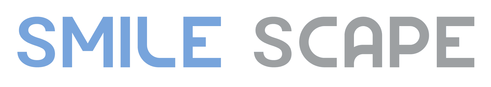

SmileScape Clinic has world-class clinical capability — a founder with a rare Dual M.Sc. in Implantology (Thailand & Germany), advanced global training in bone regeneration and soft-tissue surgery, and an evidence-based, no-over-treatment philosophy. This document presents the complete content & search architecture we have built to translate that clinical excellence into digital authority — the foundation now driving content production.
An entity-first architecture that Google and AI engines understand at a deep, machine-readable level — not keyword stuffing, but structured medical expertise.
Every clinical claim is anchored to peer-reviewed research, WHO/ADA guidelines and PubMed sources — the trust signals Google's YMYL standard demands.
Architecture organised around real patient journeys and concerns — turning organic visibility into booked consultations, not vanity traffic.
Implant-First specialty clinic — "the real authority in dental implants," with comprehensive dentistry as supporting services, under the brand idea The Lifetime Foundation.
We don't do keyword-first SEO. We build a semantic, evidence-first content system — structured so that Google, Bing and AI assistants understand SmileScape's expertise at the deepest possible level. It is the same principle used by the world's leading medical institutions, adapted for the Thai dental market through our proprietary content methodology.
Each layer gives search engines a different dimension of understanding about SmileScape:
| # | Layer | What it does |
|---|---|---|
| 1 | Schema Markup | Describes every page to search engines in machine-readable medical language (12+ medical schema types) |
| 2 | Entity Graph | Maps how 163 medical concepts connect across 20 topic clusters |
| 3 | Medical Codes | Links content to ICD-10 international diagnostic standards |
| 4 | Knowledge Graph | Connects entities to Google's Knowledge Graph via schema.org & authoritative IDs |
| 5 | Evidence & Citations | Every clinical page cites PubMed, WHO, ADA or peer-reviewed sources |
| 6 | E-E-A-T Signals | Doctor attribution, credentials and review dates — the strongest trust signals for YMYL |
Conditions: Edentulism, Bone Atrophy, Ridge Resorption
Procedures: All-on-4 / All-on-6, Immediate Loading, GBR
Materials: Titanium, Zirconia, Bone Graft
Technology: CBCT, Guided Surgery, Digital Planning
Anatomy: Maxilla, Mandible, Alveolar Bone
People: Dr. Worapat, Prosthodontics Team
One cluster connects 18+ entities across 6 categories — telling Google: "SmileScape has deep, interconnected authority in full-arch implant rehabilitation."
The Entity Graph is the brain of the system. Each entity is one dental concept (e.g. dental implant, GBR, periodontitis) mapped to a schema.org type, ICD-10 diagnostic code and Thai/English aliases — so search engines and AI assistants understand the site by meaning, not just keywords. This is the foundation of modern AI Search visibility.
The complete entity inventory follows as one continuous reference table — each entity with its type, schema.org class, ICD-10 code, primary page, and topic cluster.
| # | Entity | Type | schema.org | ICD-10 | Page | Topic Cluster |
|---|---|---|---|---|---|---|
| 1 | Dental Implant | Treatment | MedicalProcedure | 3.2 | Dental Implant — Core Procedure | |
| 2 | Single Tooth Implant | Treatment | MedicalProcedure | 3.2.8.1 | Dental Implant — Core Procedure | |
| 3 | Multiple Implants | Treatment | MedicalProcedure | 3.2.8.2 | Dental Implant — Core Procedure | |
| 4 | Immediate Implant Placement | Procedure | MedicalProcedure | 3.2.8.5 | Dental Implant — Core Procedure | |
| 5 | Immediate Loading | Procedure | MedicalProcedure | 3.2.8.6 | Dental Implant — Core Procedure | |
| 6 | Osseointegration | Concept | MedicalCondition | 3.2.1 | Dental Implant — Core Procedure | |
| 7 | Flapless Implant Surgery | Procedure | MedicalProcedure | 3.2.6 | Dental Implant — Core Procedure | |
| 8 | Guided Implant Surgery | Procedure | MedicalProcedure | 3.2.7 | Dental Implant — Core Procedure | |
| 9 | Implant-Supported Bridge | Treatment | MedicalProcedure | 3.2.8.8 | Dental Implant — Core Procedure | |
| 10 | Blue Diamond Implant System | Product | MedicalDevice | 4.5.1 | Implant Systems & Brands | |
| 11 | Neodent Implant | Product | MedicalDevice | 4.5.2 | Implant Systems & Brands | |
| 12 | Straumann Implant | Product | MedicalDevice | 4.5.3 | Implant Systems & Brands | |
| 13 | Ceramic Implant | Treatment | MedicalDevice | 4.5.4 | Implant Systems & Brands | |
| 14 | Titanium Implant | Treatment | MedicalDevice | 3.2.8.10 | Implant Systems & Brands | |
| 15 | Guided Bone Regeneration | Procedure | MedicalProcedure | 3.2.9.2 | Bone Regeneration & GBR | |
| 16 | Sausage Technique | Procedure | MedicalProcedure | 3.2.9.3 | Bone Regeneration & GBR | |
| 17 | Bone Grafting | Treatment | MedicalProcedure | 3.2.9.1 | Bone Regeneration & GBR | |
| 18 | Sinus Lift | Procedure | MedicalProcedure | 3.2.9.4 | Bone Regeneration & GBR | |
| 19 | Ridge Augmentation | Procedure | MedicalProcedure | 3.2.9.5 | Bone Regeneration & GBR | |
| 20 | Socket Preservation | Procedure | MedicalProcedure | 3.2.9.6 | Bone Regeneration & GBR | |
| 21 | Vertical Bone Augmentation | Procedure | MedicalProcedure | 3.2.9.5.2 | Bone Regeneration & GBR | |
| 22 | RPM Membrane | Device | MedicalDevice | 3.2.9.5.2 | Bone Regeneration & GBR | |
| 23 | Densah Bur System | Device | MedicalDevice | 4.4.4 | Bone Regeneration & GBR | |
| 24 | Osseodensification | Procedure | MedicalProcedure | 4.4.4 | Bone Regeneration & GBR | |
| 25 | Internal Sinus Lift (Crestal) | Procedure | MedicalProcedure | 3.2.9.4.2 | Bone Regeneration & GBR | |
| 26 | Lateral Window Sinus Lift | Procedure | MedicalProcedure | 3.2.9.4.1 | Bone Regeneration & GBR | |
| 27 | All-on-X | Treatment | MedicalProcedure | 3.3 | All-on-X Full-Arch Rehabilitation | |
| 28 | All-on-4 | Treatment | MedicalProcedure | 3.2.8.3 | All-on-X Full-Arch Rehabilitation | |
| 29 | All-on-6 | Treatment | MedicalProcedure | 3.2.8.4 | All-on-X Full-Arch Rehabilitation | |
| 30 | Full-Arch Immediate Loading | Procedure | MedicalProcedure | 3.3.3 | All-on-X Full-Arch Rehabilitation | |
| 31 | Overdenture | Treatment | MedicalProcedure | 3.2.8.7 | All-on-X Full-Arch Rehabilitation | |
| 32 | Zygomatic Implant | Treatment | MedicalProcedure | 3.2.8.9 | All-on-X Full-Arch Rehabilitation | |
| 33 | Tooth Loss | Condition | MedicalCondition | K08.409 | 5.1 | Patient Conditions — Tooth Loss |
| 34 | Edentulism | Condition | MedicalCondition | K08.101 | 5.1.3 | Patient Conditions — Tooth Loss |
| 35 | Tooth Decay Leading to Extraction | Condition | MedicalCondition | K02.9 | 5.1.6 | Patient Conditions — Tooth Loss |
| 36 | Traumatic Tooth Loss | Condition | MedicalCondition | S02.5XXA | 5.1.5 | Patient Conditions — Tooth Loss |
| 37 | Removable Denture Dissatisfaction | Condition | MedicalCondition | 5.3 | Patient Conditions — Tooth Loss | |
| 38 | Alveolar Bone Loss | Condition | MedicalCondition | K06.3 | 5.2 | Patient Conditions — Bone Deficiency |
| 39 | Vertical Bone Deficiency | Condition | MedicalCondition | K06.3 | 5.2.2 | Patient Conditions — Bone Deficiency |
| 40 | Horizontal Bone Deficiency | Condition | MedicalCondition | K06.3 | 5.2.1 | Patient Conditions — Bone Deficiency |
| 41 | Maxillary Sinus Proximity | Condition | MedicalCondition | 5.2.1 | Patient Conditions — Bone Deficiency | |
| 42 | Dental Caries | Condition | MedicalCondition | K02.9 | 5.6.2 | Patient Conditions — Bone Deficiency |
| 43 | White Spot Lesion | Condition | MedicalCondition | K02.51 | 5.6.2.1 | Patient Conditions — Bone Deficiency |
| 44 | Root Caries | Condition | MedicalCondition | K02.2 | 5.6.2.6 | Patient Conditions — Bone Deficiency |
| 45 | Dental Abscess | Condition | MedicalCondition | K04.6 | 5.6.3.2 | Patient Conditions — Bone Deficiency |
| 46 | Bruxism | Condition | MedicalCondition | F45.8 | 5.15.1 | Patient Conditions — Bone Deficiency |
| 47 | TMJ Disorder | Condition | MedicalCondition | M26.62 | 5.15 | Patient Conditions — Bone Deficiency |
| 48 | Halitosis | Condition | MedicalCondition | .6 | 5.17 | Patient Conditions — Bone Deficiency |
| 49 | Xerostomia (Dry Mouth) | Condition | MedicalCondition | K11.7 | 5.18 | Patient Conditions — Bone Deficiency |
| 50 | Tooth Fracture | Condition | MedicalCondition | S02.5XXA | 5.16 | Patient Conditions — Bone Deficiency |
| 51 | Dry Socket (Alveolar Osteitis) | Condition | MedicalCondition | M27.3 | 5.19.4 | Patient Conditions — Bone Deficiency |
| 52 | Pregnancy Gingivitis | Condition | MedicalCondition | K05.10 | 5.20.4 | Patient Conditions — Bone Deficiency |
| 53 | Digital Smile Design | Procedure | MedicalProcedure | 3.4.1 | Smile Design & Cosmetic Dentistry | |
| 54 | Dental Veneer | Treatment | MedicalProcedure | 3.4.2 | Smile Design & Cosmetic Dentistry | |
| 55 | Porcelain Veneer | Treatment | MedicalProcedure | 3.4.2 | Smile Design & Cosmetic Dentistry | |
| 56 | Teeth Whitening | Treatment | MedicalProcedure | 3.4.7 | Smile Design & Cosmetic Dentistry | |
| 57 | Dental Crown | Treatment | MedicalDevice | 3.4.4 | Smile Design & Cosmetic Dentistry | |
| 58 | Zirconia Crown | Treatment | MedicalDevice | 3.4.4.1 | Smile Design & Cosmetic Dentistry | |
| 59 | Gold Crown | Treatment | MedicalDevice | 3.4.4.4 | Smile Design & Cosmetic Dentistry | |
| 60 | Soft Tissue Management | Procedure | MedicalProcedure | 3.2.9.7 | Gum & Soft Tissue Management | |
| 61 | Gum Contouring | Procedure | MedicalProcedure | 3.4.8 | Gum & Soft Tissue Management | |
| 62 | Connective Tissue Graft | Procedure | MedicalProcedure | 3.2.9.7 | Gum & Soft Tissue Management | |
| 63 | Peri-Implant Mucosa | Anatomy | AnatomicalStructure | 3.2.9.7 | Gum & Soft Tissue Management | |
| 64 | Keratinized Mucosa | Anatomy | AnatomicalStructure | 3.7.5 | Gum & Soft Tissue Management | |
| 65 | Strip Graft | Procedure | MedicalProcedure | 3.2.9.7.1.3 | Gum & Soft Tissue Management | |
| 66 | Ice Berg / Ice Cube Technique | Procedure | MedicalProcedure | 3.2.9.7.2.1 | Gum & Soft Tissue Management | |
| 67 | Garage Technique | Procedure | MedicalProcedure | 3.2.9.7.2.2 | Gum & Soft Tissue Management | |
| 68 | VIPCT — Vascularized Interpositional Periosteal CT | Procedure | MedicalProcedure | 3.2.9.7.2.3 | Gum & Soft Tissue Management | |
| 69 | Coronally Advanced Flap (CAF) | Procedure | MedicalProcedure | 3.2.9.7.3.1 | Gum & Soft Tissue Management | |
| 70 | Tunneling Technique | Procedure | MedicalProcedure | 3.2.9.7.3.2 | Gum & Soft Tissue Management | |
| 71 | VISTA Technique | Procedure | MedicalProcedure | 3.2.9.7.3.3 | Gum & Soft Tissue Management | |
| 72 | Tunneled CAF (TCAF) | Procedure | MedicalProcedure | 3.2.9.7.3.4 | Gum & Soft Tissue Management | |
| 73 | Black Triangle | Condition | MedicalCondition | 5.11.5 | Gum & Soft Tissue Management | |
| 74 | Gingivitis | Condition | MedicalCondition | K05.10 | 3.7.1 | Periodontics & Gum Disease |
| 75 | Periodontitis | Condition | MedicalCondition | K05.30 | 3.7.2 | Periodontics & Gum Disease |
| 76 | Gum Recession | Condition | MedicalCondition | K06.010 | 3.7.4 | Periodontics & Gum Disease |
| 77 | Peri-Implantitis | Condition | MedicalCondition | M27.62 | 3.7.7 | Periodontics & Gum Disease |
| 78 | Peri-Implantitis Treatment | Procedure | MedicalProcedure | M27.62 | 3.7.7 | Periodontics & Gum Disease |
| 79 | Implantoplasty | Procedure | MedicalProcedure | 3.7.7.6 | Periodontics & Gum Disease | |
| 80 | Regenerative Peri-Implantitis Surgery | Procedure | MedicalProcedure | 3.7.7.4 | Periodontics & Gum Disease | |
| 81 | Resective Peri-Implantitis Surgery | Procedure | MedicalProcedure | 3.7.7.5 | Periodontics & Gum Disease | |
| 82 | Dental Laser Therapy | Procedure | MedicalProcedure | 3.7.7.7 | Periodontics & Gum Disease | |
| 83 | Clear Aligner | Treatment | MedicalProcedure | M26.4 | 3.5.1 | Clear Aligner & Orthodontics |
| 84 | TrioClear Aligner System | Product | MedicalDevice | 4.6.1 | Clear Aligner & Orthodontics | |
| 85 | Damon Self-Ligating System | Product | MedicalDevice | 4.6.2 | Clear Aligner & Orthodontics | |
| 86 | Malocclusion | Condition | MedicalCondition | M26.4 | 3.5 | Clear Aligner & Orthodontics |
| 87 | Orthodontic-Implant Sequencing | Concept | MedicalProcedure | 3.5.6 | Clear Aligner & Orthodontics | |
| 88 | Orthognathic Surgery | Procedure | MedicalProcedure | 3.5.8 | Clear Aligner & Orthodontics | |
| 89 | Passive Self-Ligating (PSL) | Concept | MedicalDevice | 3.5.3.1 | Clear Aligner & Orthodontics | |
| 90 | Direct Print Clear Aligner | Treatment | MedicalProcedure | M26.4 | 3.5.1.2 | Clear Aligner & Orthodontics |
| 91 | In-House Aligner Lab | Concept | 4.6.0 | Clear Aligner & Orthodontics | ||
| 92 | Photopolymer Resin TC-85 | Product | 4.6.0.2 | Clear Aligner & Orthodontics | ||
| 93 | Aligner Attachment | Device | MedicalDevice | 3.5.1.5 | Clear Aligner & Orthodontics | |
| 94 | 3D Printer (Aligner) | Device | MedicalDevice | 4.6.0.1 | Clear Aligner & Orthodontics | |
| 95 | Thermoformed Aligner | Concept | MedicalProcedure | 3.5.1.4 | Clear Aligner & Orthodontics | |
| 96 | Root Canal Treatment | Treatment | MedicalProcedure | K04.0 | 3.6.5 | General Restorative Dentistry |
| 97 | Tooth Extraction | Procedure | MedicalProcedure | K08.409 | 3.6.3 | General Restorative Dentistry |
| 98 | Wisdom Tooth Removal | Procedure | MedicalProcedure | K01.1 | 3.6.4 | General Restorative Dentistry |
| 99 | Dental Filling | Treatment | MedicalProcedure | K02.9 | 3.6.2 | General Restorative Dentistry |
| 100 | Removable Denture | Treatment | MedicalDevice | 3.6.6 | General Restorative Dentistry | |
| 101 | Torus Removal | Procedure | MedicalProcedure | 3.8.6 | General Restorative Dentistry | |
| 102 | Alveoloplasty | Procedure | MedicalProcedure | 3.8.6.4 | General Restorative Dentistry | |
| 103 | Maxillary Tuberosity Reduction | Procedure | MedicalProcedure | 3.8.6.3 | General Restorative Dentistry | |
| 104 | CBCT 3D Scan | Device | MedicalDevice | 4.2.1 | Digital Technology & Diagnostics | |
| 105 | Digital Implant Planning | Procedure | MedicalProcedure | 4.3.1 | Digital Technology & Diagnostics | |
| 106 | Surgical Guide | Device | MedicalDevice | 4.3.2 | Digital Technology & Diagnostics | |
| 107 | Intraoral Scanner | Device | MedicalDevice | 4.2.2 | Digital Technology & Diagnostics | |
| 108 | CAD/CAM Prosthetics | Device | MedicalDevice | 4.7.1 | Digital Technology & Diagnostics | |
| 109 | Acteon CBCT | Device | MedicalDevice | 4.2.1 | Digital Technology & Diagnostics | |
| 110 | 3Shape TRIOS Intraoral Scanner | Device | MedicalDevice | 4.2.2 | Digital Technology & Diagnostics | |
| 111 | Airflow Air Polishing System | Device | MedicalDevice | 4.4.5 | Digital Technology & Diagnostics | |
| 112 | Cool Light Whitening Unit | Device | MedicalDevice | 4.9.1 | Digital Technology & Diagnostics | |
| 113 | Titanium | Product | 4.5.5 | Implant Materials & Biomaterials | ||
| 114 | Zirconia | Product | 4.5.4 | Implant Materials & Biomaterials | ||
| 115 | Bone Graft Substitute | Product | 3.2.9.1 | Implant Materials & Biomaterials | ||
| 116 | PTFE Membrane | Device | MedicalDevice | 3.2.9.2 | Implant Materials & Biomaterials | |
| 117 | PRF (Platelet-Rich Fibrin) | Product | MedicalDevice | 4.4.2 | Implant Materials & Biomaterials | |
| 118 | Alveolar Bone | Anatomy | AnatomicalStructure | 5.2 | Dental Anatomy & Physiology | |
| 119 | Mandible | Anatomy | AnatomicalStructure | Dental Anatomy & Physiology | ||
| 120 | Maxilla | Anatomy | AnatomicalStructure | Dental Anatomy & Physiology | ||
| 121 | Dental Implant Components | Concept | 3.2.1 | Dental Anatomy & Physiology | ||
| 122 | Maxillary Sinus | Anatomy | AnatomicalStructure | 3.2.9.4 | Dental Anatomy & Physiology | |
| 123 | Pediatric Dentistry | Treatment | MedicalProcedure | 3.9 | Pediatric Dentistry — ทันตกรรมเด็ก | |
| 124 | Pediatric Pulpotomy | Procedure | MedicalProcedure | K04.0 | 3.9.6 | Pediatric Dentistry — ทันตกรรมเด็ก |
| 125 | Pediatric Crown | Treatment | MedicalDevice | 3.9.7 | Pediatric Dentistry — ทันตกรรมเด็ก | |
| 126 | Fluoride Treatment | Treatment | MedicalProcedure | 3.9.4 | Pediatric Dentistry — ทันตกรรมเด็ก | |
| 127 | Pit & Fissure Sealant | Treatment | MedicalProcedure | 3.9.5 | Pediatric Dentistry — ทันตกรรมเด็ก | |
| 128 | Space Maintainer | Device | MedicalDevice | 3.9.8 | Pediatric Dentistry — ทันตกรรมเด็ก | |
| 129 | Behavior Management (Pediatric) | Concept | 3.9.11 | Pediatric Dentistry — ทันตกรรมเด็ก | ||
| 130 | Early Orthodontic Intervention | Treatment | MedicalProcedure | M26.4 | 3.9.12 | Pediatric Dentistry — ทันตกรรมเด็ก |
| 131 | Habit Appliance | Device | MedicalDevice | 3.9.10 | Pediatric Dentistry — ทันตกรรมเด็ก | |
| 132 | Pediatric Extraction | Procedure | MedicalProcedure | K08.409 | 3.9.9 | Pediatric Dentistry — ทันตกรรมเด็ก |
| 133 | Endodontic Microscope | Device | MedicalDevice | 3.11.4 | Endodontics by Specialist — รักษารากฟันโดยทันตแพทย์เฉพาะทาง | |
| 134 | Root Canal Retreatment | Procedure | MedicalProcedure | K04.0 | 3.11.2 | Endodontics by Specialist — รักษารากฟันโดยทันตแพทย์เฉพาะทาง |
| 135 | Apicoectomy | Procedure | MedicalProcedure | K04.0 | 3.11.3 | Endodontics by Specialist — รักษารากฟันโดยทันตแพทย์เฉพาะทาง |
| 136 | Internal Bleaching | Treatment | MedicalProcedure | 3.11.6 | Endodontics by Specialist — รักษารากฟันโดยทันตแพทย์เฉพาะทาง | |
| 137 | Cracked Tooth | Condition | MedicalCondition | S02.5XXA | 3.11.7 | Endodontics by Specialist — รักษารากฟันโดยทันตแพทย์เฉพาะทาง |
| 138 | Pulp Regeneration | Procedure | MedicalProcedure | 3.11.8 | Endodontics by Specialist — รักษารากฟันโดยทันตแพทย์เฉพาะทาง | |
| 139 | Rotary Endodontic System | Device | MedicalDevice | 3.11.5 | Endodontics by Specialist — รักษารากฟันโดยทันตแพทย์เฉพาะทาง | |
| 140 | Conscious Sedation | Procedure | MedicalProcedure | 3.10.1 | Sedation & GA Dentistry — ดมยาสลบทำฟัน | |
| 141 | General Anesthesia Dentistry | Procedure | MedicalProcedure | 3.10.3 | Sedation & GA Dentistry — ดมยาสลบทำฟัน | |
| 142 | IV Sedation | Procedure | MedicalProcedure | 3.10.2 | Sedation & GA Dentistry — ดมยาสลบทำฟัน | |
| 143 | Dental Anxiety / Phobia | Condition | MedicalCondition | F40.218 | 5.4 | Sedation & GA Dentistry — ดมยาสลบทำฟัน |
| 144 | Geriatric Dentistry | Treatment | MedicalProcedure | 3.13.1 | Demographic-Specific Dentistry — ทันตกรรมสำหรับคนเฉพาะกลุ่ม | |
| 145 | Pregnancy Dental Care | Treatment | MedicalProcedure | 3.13.2 | Demographic-Specific Dentistry — ทันตกรรมสำหรับคนเฉพาะกลุ่ม | |
| 146 | Medical-Compromised Dentistry | Treatment | MedicalProcedure | 3.13.3 | Demographic-Specific Dentistry — ทันตกรรมสำหรับคนเฉพาะกลุ่ม | |
| 147 | Bedridden Patient Dentistry | Treatment | MedicalProcedure | Demographic-Specific Dentistry — ทันตกรรมสำหรับคนเฉพาะกลุ่ม | ||
| 148 | Medical Clearance Protocol | Concept | 3.13.3.8 | Demographic-Specific Dentistry — ทันตกรรมสำหรับคนเฉพาะกลุ่ม | ||
| 149 | Special Needs Dentistry | Treatment | MedicalProcedure | 3.13.4 | Demographic-Specific Dentistry — ทันตกรรมสำหรับคนเฉพาะกลุ่ม | |
| 150 | Social Security Dental Benefit (TH) | Concept | 5.13.2 | Insurance Coverage Thailand — ประกันสังคม / บัตรทอง / ราชการ / เอกชน | ||
| 151 | Q-Clinic Direct Billing (SSO) | Concept | 3.12.2 | Insurance Coverage Thailand — ประกันสังคม / บัตรทอง / ราชการ / เอกชน | ||
| 152 | Universal Coverage (บัตรทอง / 30 บาท) | Concept | 5.13.2.5 | Insurance Coverage Thailand — ประกันสังคม / บัตรทอง / ราชการ / เอกชน | ||
| 153 | Civil Servant Medical Benefit (CGA) | Concept | 5.13.5 | Insurance Coverage Thailand — ประกันสังคม / บัตรทอง / ราชการ / เอกชน | ||
| 154 | Private Health Insurance (TH Dental) | Concept | 5.13.6 | Insurance Coverage Thailand — ประกันสังคม / บัตรทอง / ราชการ / เอกชน | ||
| 155 | SmileScape Dental Clinic | Organization | Dentist | 1 | Brand, Doctor & Authority Entities | |
| 156 | Dr. Woraphat Jarangkul | Person | Physician | 2.2.2 | Brand, Doctor & Authority Entities | |
| 157 | SMILE DNA | Concept | 2.1.3 | Brand, Doctor & Authority Entities | ||
| 158 | Family Standard | Concept | 2.1.4 | Brand, Doctor & Authority Entities | ||
| 159 | Lifetime Implant Warranty | Concept | 2.3.3 | Brand, Doctor & Authority Entities | ||
| 160 | SmileScape สาขารัตนาธิเบศร์ | Organization | Dentist | 8.2 | Brand, Doctor & Authority Entities | |
| 161 | SmileScape สาขาศรีนครินทร์ | Organization | Dentist | 8.3 | Brand, Doctor & Authority Entities | |
| 162 | Zero Bone Loss Concept | Concept | 2.1.6 | Brand, Doctor & Authority Entities | ||
| 163 | Dr. Tomas Linkevicius | Person | Physician | Brand, Doctor & Authority Entities |
Topic clusters group entities and pages into authority territories. Each cluster has a pillar (hub) page and supporting (spoke) pages that interlink — the hub-and-spoke structure Google uses to judge true topical expertise (E-E-A-T). Every cluster meets the pillar-to-supporting balance.
| Domain ID | Domain Name | Primary Service | Cluster Count |
|---|---|---|---|
| A | Dental Implant | Hero Service | 4 |
| B | Bone Regeneration | Signature Technique | 2 |
| C | Full-Arch Rehabilitation | Signature Treatment | 1 |
| D | Aesthetic & Cosmetic Dentistry | Supporting | 1 |
| E | Orthodontics | Supporting | 1 |
| F | Periodontics & Gum | Supporting + Perio-Implant | 2 |
| G | Cross-Cutting (Anatomy, Tech, Materials, Authority) | Infrastructure | 4 |
| H | Specialty Services (Pediatric / Endo / Anesthesia) | Specialty Supporting | 3 |
| I | Insurance & Access (Insurance Coverage TH) | Access/Conversion Bridge | 1 |
| Cluster ID | Cluster Name | Domain | Parent Cluster (text) | Pillar Page | Brand Scope |
|---|---|---|---|---|---|
| dental-implant-core | Dental Implant — Core Procedure | A: Dental Implant | 3.2 | Universal | |
| implant-systems-brands | Implant Systems & Brands | A: Dental Implant | dental-implant-core | 4.5 | Universal |
| all-on-x-full-arch | All-on-X Full-Arch Rehabilitation | C: Full-Arch Rehabilitation | dental-implant-core | 3.3 | Universal |
| patient-conditions-tooth-loss | Patient Conditions — Tooth Loss | A: Dental Implant | 5.1 | Universal | |
| bone-regeneration-gbr | Bone Regeneration & GBR | B: Bone Regeneration | 3.2.9 | Universal | |
| patient-conditions-bone | Patient Conditions — Bone Deficiency | B: Bone Regeneration | patient-conditions-tooth-loss | 5.2 | Universal |
| smile-design-cosmetic | Smile Design & Cosmetic Dentistry | D: Aesthetic & Cosmetic | 3.4 | Universal | |
| gum-soft-tissue | Gum & Soft Tissue Management | F: Periodontics & Gum | 3.2.9.7 | Universal | |
| periodontics-perio-disease | Periodontics & Gum Disease | F: Periodontics & Gum | gum-soft-tissue | 3.7 | Universal |
| clear-aligner-orthodontics | Clear Aligner & Orthodontics | E: Orthodontics | 3.5 | Universal | |
| general-restorative | General Restorative Dentistry | A: Dental Implant | 3.6 | Universal | |
| digital-technology-diagnostics | Digital Technology & Diagnostics | G: Cross-Cutting | 3.1 | Universal | |
| implant-materials | Implant Materials & Biomaterials | G: Cross-Cutting | 4.5 | Universal | |
| dental-anatomy | Dental Anatomy & Physiology | G: Cross-Cutting | Universal | ||
| brand-doctor-authority | Brand, Doctor & Authority Entities | G: Cross-Cutting | 2.1 | Brand-specific | |
| pediatric-dentistry | Pediatric Dentistry — ทันตกรรมเด็ก | H: Specialty Services | 3.9 | Universal | |
| endodontics-specialist | Endodontics by Specialist — รักษารากฟันโดยทันตแพทย์เฉพาะทาง | H: Specialty Services | 3.11 | Universal | |
| dental-anesthesia | Sedation & GA Dentistry — ดมยาสลบทำฟัน | H: Specialty Services | 3.10 | Universal | |
| demographic-dentistry | Demographic-Specific Dentistry (Geriatric / Pregnancy / Medical-Compromised / Special Needs) | H: Specialty Services | 3.13 | Universal | |
| insurance-coverage-th | Insurance Coverage TH — ประกันสังคม/บัตรทอง/ราชการ/เอกชน | I: Insurance & Access | 3.12 | Universal mixed |
Medical content lives or dies on credibility. Our evidence base organises authoritative research into 16 pillars, graded across a 6-tier hierarchy. Every clinical claim on the site is anchored to this pool — the foundation of E-E-A-T and the reason AI engines will cite SmileScape as a trusted source.
| Tier | Source type | Examples |
|---|---|---|
| 1 | Clinical guidelines & government bodies | WHO · ADA · EFP · AAPD · Dental Council of Thailand |
| 2 | Peer-reviewed journals | J Dent · Clin Oral Implants Res · Periodontology 2000 |
| 3 | Professional-body consensus | EAO · EFP · AAE consensus statements |
| 4 | Authoritative textbooks | Urban · Linkevicius · Misch |
| 5 | Verified clinic data | SmileScape case audits & outcomes |
| 6 | Reputable secondary sources | Established health portals |
Goal: 5-10 Tier 1-3 citations covering main claims
Main claims to back:
1. อัตราความสำเร็จรากฟันเทียมสูงกว่า 95% ที่ 10 ปี 2. รากฟันเทียมมีอายุการใช้งานยาวนาน 20 ปีขึ้นไปถ้าดูแลดี 3. รากฟันเทียมที่รองรับ fixed prosthesis (ฟันปลอมติดแน่น) มีอัตรารอดสูง 4. กระดูกพยุงรากฟันเทียมคงที่ระยะยาวเมื่อดูแลถูกวิธี
Citations:
| # | Tier | Authors | Source | Year | DOI/URL | Covers Claim(s) |
|---|---|---|---|---|---|---|
| 1 | 2 | Howe MS, Keys W, Richards D | Journal of Dentistry (84:9-21) | 2019 | 10.1016/j.jdent.2019.03.008 | 1 |
| 2 | 2 | Kupka JR, König J, Al-Nawas B et al. | Clinical Oral Investigations (28:541) | 2024 | 10.1007/s00784-024-05929-3 | 2 |
| 3 | 2 | Pjetursson BE, Thoma D, Jung R et al. | Clinical Oral Implants Research (23 Suppl 6:22-38) | 2012 | 10.1111/j.1600-0501.2012.02546.x | 3 |
| 4 | 1 | ทันตแพทยสภา (Dental Council of Thailand) | หลักเกณฑ์การให้บริการทางทันตกรรม | Current | ทันตแพทยสภา.or.th | All — regulatory backing |
| 5 | 3 | European Association for Osseointegration (EAO) | EAO Consensus Report | clinic to confirm year | eao.org | 1, 3 |
Goal: 5-8 Tier 1-3 citations backing vertical bone regeneration claims + Sausage Technique pedigree
Main claims to back:
1. GBR (Guided Bone Regeneration) เป็นวิธีมาตรฐานสำหรับผู้ป่วยที่กระดูกขากรรไกรน้อย 2. Vertical ridge augmentation สำเร็จได้ 100% implant survival ในกลุ่มที่เหมาะสม 3. PTFE membrane + autogenous bone graft เป็น gold standard สำหรับ vertical defect 4. Sausage Technique (Urban's protocol for horizontal ridge augmentation with collagen membrane + resorbable technique) ให้ผลดีและ predictable
Citations:
| # | Tier | Authors | Source | Year | DOI/URL | Covers Claim(s) |
|---|---|---|---|---|---|---|
| 1 | 2 | Buser D, Urban I, Monje A et al. | Periodontology 2000 (93:9-25) | 2023 | 10.1111/prd.12539 | 1, 3 |
| 2 | 2 | Urban IA, Jovanovic SA, Lozada JL | Int J Oral Maxillofac Implants (24:502-510) | 2009 | PMID: 19587874 (no public DOI) | 2, 3 |
| 3 | 2 | Urban IA, Lozada JL, Wessing B et al. | Int J Periodontics Restorative Dent (36:153-9) | 2016 | 10.11607/prd.2627 | 4 |
| 4 | 2 | Milinkovic I, Cordaro L | Int J Oral Maxillofac Surg (43:606-25) | 2014 | 10.1016/j.ijom.2013.12.004 | 1 |
| 5 | 4 | Urban IA | Vertical and Horizontal Ridge Augmentation: New Concepts (textbook) | 2017 | ISBN 978-0867154993 | 4 — Sausage Technique original source |
| 6 | 5 | SmileScape Clinic internal | Case audit: Sausage Technique outcomes 2024-2025 | to be confirmed | 4 — brand stance Tier 5 backing |
Goal: 5-7 Tier 1-3 citations backing full-arch implant + immediate loading claims
Main claims to back:
1. All-on-X immediate loading ให้ผล survival rate สูง เทียบเท่า conventional loading 2. Full-arch fixed prosthesis บน implant ดีกว่าฟันปลอมถอดได้ในเรื่องคุณภาพชีวิต 3. Immediate loading ใน esthetic zone ไม่กระทบ peri-implant bone และ soft tissue
Citations:
| # | Tier | Authors | Source | Year | DOI/URL | Covers Claim(s) |
|---|---|---|---|---|---|---|
| 1 | 2 | Abdunabi A, Morris M, Nader SA et al. | J Appl Oral Sci (27:e20180600) | 2019 | 10.1590/1678-7757-2018-0600 | 1 |
| 2 | 2 | Tsigarida A, Chochlidakis K | Int J Prosthodont (34:s85-s92) | 2021 | 10.11607/ijp.6911 | 2 |
| 3 | 2 | Cheng Q, Su YY, Wang X, Chen S | Int J Oral Maxillofac Implants (35:167-177) | 2020 | 10.11607/jomi.7548 | 1, 3 |
| 4 | 3 | ILAPEO Brazil — consensus/teaching protocol | ILAPEO Immediate Loading Protocol | clinic to confirm year | ilapeo.edu.br | 1 — institutional backing for SmileScape's ILAPEO training |
| 5 | 5 | SmileScape Clinic internal | All-on-X case audit 2024-2025 | to be confirmed | 1, 2 — brand Tier 5 |
Goal: 4-6 Tier 1-3 citations backing clear aligner efficacy claims
Main claims to back:
1. Clear aligner สามารถรักษา malocclusion ได้ผลดี สำหรับ mild-moderate cases 2. Treatment duration ของ clear aligner ใกล้เคียงกับ fixed appliance ใน mild-moderate crowding 3. Damon self-ligating bracket ลด friction + เจ็บน้อยกว่า conventional bracket
Citations:
| # | Tier | Authors | Source | Year | DOI/URL | Covers Claim(s) |
|---|---|---|---|---|---|---|
| 1 | 2 | Alhamwi AM, Burhan AS, Idris MI et al. | Clinical Oral Investigations (28:249) | 2024 | 10.1007/s00784-024-05629-y | 2 |
| 2 | 3 | TrioClear — Modern Dental Group | Clinical evidence documentation | to be confirmed | trioclear.com | 1 — TrioClear-specific backing |
| 3 | 3 | ADA / AAO | Clinical guideline on orthodontic treatment outcomes | clinic to confirm year | ada.org / aaoinfo.org | 1 |
| 4 | 5 | SmileScape Clinic internal | TrioClear case audit 2024-2025 | to be confirmed | 1 — brand Tier 5 |
Goal: 4-6 Tier 1-3 citations backing peri-implant soft tissue management + aesthetic outcomes
Main claims to back:
1. Soft tissue management รอบ implant มีผลต่อ esthetic outcome ระยะยาว 2. Keratinized mucosa width มีผลต่อ peri-implant health 3. Gum aesthetic (pink aesthetic) ขึ้นอยู่กับ surgical technique และ tissue biotype
Citations:
| # | Tier | Authors | Source | Year | DOI/URL | Covers Claim(s) |
|---|---|---|---|---|---|---|
| 1 | 2 | Benic GI, Mir-Mari J, Hämmerle CHF | Int J Oral Maxillofac Implants (29 Suppl:222-38) | 2014 | 10.11607/jomi.2014suppl.g4.1 | 1 |
| 2 | 3 | EFP — European multi-brand of Periodontology | Consensus on peri-implant soft tissue management | clinic to confirm year | efp.org | 2 |
| 3 | 3 | Ricardo Kern, Brazil — published technique | Soft tissue management protocol reference | clinic to verify publication | 3 — SmileScape trained with Dr. Kern | |
| 4 | 5 | SmileScape Clinic internal | Soft tissue management case audit | to be confirmed | 1, 3 |
Goal: 6-8 Tier 1-3 citations backing Soft Tissue D-2 Hybrid technique stack
Main claims to back: 1. Strip Graft (Urban) เพิ่ม keratinized tissue ได้ predictable 2. Ice Berg / Garage technique (Urban) เพิ่ม gingival thickness รอบ implant 3. CAF (Coronally Advanced Flap) เป็น gold standard root coverage 4. VISTA technique ปิด recession ได้หลายซี่พร้อมกัน + minimally invasive 5. Tunneling technique ลด morbidity เทียบกับ CAF 6. Keratinized mucosa ≥2mm สัมพันธ์กับ peri-implant health
Citations:
| # | Tier | Authors | Source | Year | PMID/DOI | Covers Claim(s) |
|---|---|---|---|---|---|---|
| 1 | 4 | Urban IA | Vertical and Horizontal Ridge Augmentation: New Concepts (Quintessence) | 2017 | ISBN 978-0867154993 | 1, 2 (textbook source for Strip/Ice Berg/Garage) |
| 2 | 2 | Urban IA, Monje A, Lozada JL | Various publications on soft tissue augmentation | 2017-2023 | clinic to compile | 1, 2 |
| 3 | 2 | Tavelli L, Barootchi S, Avila-Ortiz G et al. | J Clin Periodontol — Root Coverage SR | 2018+ | to be confirmed via PubMed search | 3, 4, 5 |
| 4 | 2 | Zucchelli G, Mounssif I | Periodontology 2000 — CAF technique | various | to be confirmed via PubMed | 3 |
| 5 | 2 | Zadeh HH | Int J Periodontics Restorative Dent — VISTA technique | 2011 | original VISTA paper | 4 |
| 6 | 2 | Allen EP | J Periodontol — Tunneling technique | 1994 | classic ref | 5 |
| 7 | 2 | Thoma DS, Naenni N, Figuero E et al. | J Clin Periodontol — Keratinized mucosa SR | 2018 | PMID 29498129 | 6 |
| 8 | 2 | Avila-Ortiz G, Gonzalez-Martin O, Couso-Queiruga E, Wang HL | J Clin Periodontol — keratinized peri-implant SR | 2020 | PMID 32710810 | 6 |
| 9 | 5 | SmileScape Clinic internal | Urban soft-tissue technique case audit | to be confirmed | 1, 2 — brand Tier 5 |
Goal: 5-7 Tier 1-3 citations supporting Signature Offering #5
Main claims to back: 1. Osseodensification (Densah burs) เพิ่ม bone density + primary stability vs conventional drilling 2. Internal sinus lift with Densah ได้ผลปลอดภัย minimally invasive 3. ลด trauma + accelerated healing vs traditional preparation 4. Improved implant stability quotient (ISQ) ตอน placement
Citations:
| # | Tier | Authors | Source | Year | PMID/DOI | Covers Claim(s) |
|---|---|---|---|---|---|---|
| 1 | 4 | Huwais S | Original osseodensification concept | 2017+ | inventor/developer | 1, 2 (concept source) |
| 2 | 2 | Various authors | Osseodensification SR + meta-analysis | 2023+ | PMID 37975644 (J Clin Med 2023) | 1, 4 |
| 3 | 2 | Various authors | Osseodensification clinical outcomes meta | 2023+ | PMID 38002660 | 1, 4 |
| 4 | 2 | Various authors | Densah sinus lift outcomes systematic review | 2025 | PMID 40377845 | 2 |
| 5 | 2 | Various authors | Osseodensification bone density study | 2020 | PMID 33139057 | 1 |
| 6 | 2 | Various authors | Osseodensification bone density implant | 2020 | PMID 33671038 | 1, 4 |
| 7 | 3 | Versah (manufacturer) | Densah Bur clinical evidence documentation | current | versah.com | 1, 2, 3, 4 |
| 8 | 5 | SmileScape Clinic internal | Densah sinus lift case audit | to be confirmed | 2 — brand Tier 5 |
Goal: 5-7 Tier 1-4 citations supporting ZBL Brand Framework (clinical protocol)
Main claims to back: 1. Subcrestal placement + platform switching ลด marginal bone loss 2. Tissue-level abutment selection (cement-screw retention) preserves crestal bone 3. Adequate mucosal thickness (≥2mm) จำเป็นสำหรับ zero bone loss 4. Maintenance protocol รวม Airflow/GBT รักษา bone stability ระยะยาว
Citations:
| # | Tier | Authors | Source | Year | PMID/DOI | Covers Claim(s) |
|---|---|---|---|---|---|---|
| 1 | 4 | Linkevicius T | Zero Bone Loss Concepts (Quintessence textbook) | 2019 | ISBN 978-0867158243 | 1, 2, 3, 4 (primary source) |
| 2 | 2 | Linkevicius T, Puisys A, Steigmann M et al. | Various crestal bone studies | 2010-2024 | PMIDs: 34076631 / 20605308 / 33527729 / 32250061 / 35476860 | 1, 2, 3 |
| 3 | 2 | Linkevicius T, Apse P, Grybauskas S, Puisys A | Clinical Oral Implants Research — Tissue thickness | 2009 | original mucosal thickness paper | 3 (≥2mm threshold) |
| 4 | 2 | Linkevicius T, Linkevicius R, Alkimavicius J et al. | Clinical Oral Implants Research — Subcrestal placement long-term | 2020+ | PMID 32250061 | 1 |
| 5 | 5 | SmileScape Clinic internal | ZBL Protocol adoption + outcomes audit | to be confirmed | All — brand stance |
Goal: 5-7 Tier 1-3 citations supporting Peri-Implantitis service hub
Main claims to back: 1. Non-surgical + surgical multi-modal approach ให้ผลดีกว่า single modality 2. Regenerative surgery รักษา bone defects รอบ failing implant ได้ 3. Implantoplasty ลด biofilm retention บน exposed threads 4. Laser-assisted decontamination เป็น adjunctive therapy ที่ปลอดภัย
Citations:
| # | Tier | Authors | Source | Year | PMID/DOI | Covers Claim(s) |
|---|---|---|---|---|---|---|
| 1 | 3 | Schwarz F, Becker K, Sahm N et al. | EFP/AAP World Workshop Consensus on Peri-Implantitis | 2018 | PMID 25626479 (foundational) | 1, 2 |
| 2 | 2 | Various — Schwarz peri-implantitis SR | J Clin Periodontol — Peri-implantitis treatment SR | 2023 | PMID 37271498 | 1, 2 |
| 3 | 2 | Recent peri-implantitis treatment | Clinical Oral Implants Research | 2025 | PMID 40501397 | 1, 3 |
| 4 | 1 | EFP — European multi-brand of Periodontology | Peri-implantitis clinical practice guidelines | 2023 | efp.org | All |
| 5 | 2 | Renvert S, Polyzois IN | Periodontology 2000 — Peri-implantitis decontamination | 2018+ | to be confirmed via PubMed | 1 |
| 6 | 5 | SmileScape Clinic internal | Peri-implantitis salvage case audit | to be confirmed | 1, 2 — brand Tier 5 |
Goal: 4-6 Tier 1-3 citations supporting pediatric service section
Main claims to back: 1. Fluoride varnish ลด early childhood caries 2. Pit & Fissure sealant ป้องกัน occlusal caries 3. Pulpotomy เก็บฟันน้ำนมที่ผุลึก 4. Space Maintainer ป้องกันฟันแท้ขึ้นผิดที่หลังถอนฟันน้ำนมก่อนเวลา 5. Behavior management techniques ลด dental anxiety เด็ก
Citations:
| # | Tier | Authors | Source | Year | PMID/DOI | Covers Claim(s) |
|---|---|---|---|---|---|---|
| 1 | 1 | AAPD (American Academy of Pediatric Dentistry) | Reference Manual of Pediatric Dentistry | annual | aapd.org/research/policy-center | All |
| 2 | 1 | WHO | Promoting oral health in children | 2022 | who.int | 1, 2 |
| 3 | 2 | Marinho VCC et al. | Cochrane — Fluoride varnishes for caries prevention | 2013 (still cited) | Cochrane | 1 |
| 4 | 2 | Ahovuo-Saloranta A et al. | Cochrane — Pit and fissure sealants | 2017 | Cochrane | 2 |
| 5 | 1 | ราชวิทยาลัยทันตแพทย์เด็ก (Royal College of Pediatric Dentistry Thailand) | TH clinical guidelines | clinic to confirm year | to be confirmed | All — Thai regulatory backing |
| 6 | 5 | SmileScape Clinic internal | Pediatric patient outcomes | to be confirmed | All |
Goal: 4-6 Tier 1-3 citations supporting specialist endo service section
Main claims to back: 1. Endodontic microscope เพิ่ม success rate 2. Apicoectomy แทน extraction สำหรับ persistent peri-apical lesion 3. Rotary endodontic systems ปรับปรุงคุณภาพ canal preparation 4. Internal bleaching รักษา discolored non-vital teeth 5. Pulp regeneration / Apexogenesis สำหรับฟันที่ pulp ยังไม่โต
Citations:
| # | Tier | Authors | Source | Year | PMID/DOI | Covers Claim(s) |
|---|---|---|---|---|---|---|
| 1 | 1 | ESE (European Society of Endodontology) | Quality guidelines for endodontic treatment | 2006+ updates | esendodontology.org | All |
| 2 | 1 | AAE (American Association of Endodontists) | Treatment standards + position papers | current | aae.org | All |
| 3 | 2 | Setzer FC, Kim S | J Endod — Endodontic microscope success | 2014+ | PubMed search needed | 1 |
| 4 | 2 | Setzer FC, Shah SB, Kohli MR et al. | J Endod — Apicoectomy outcomes SR | 2010+ | to be confirmed via PubMed | 2 |
| 5 | 5 | SmileScape Clinic internal | Endodontic specialist case audit | to be confirmed | All |
Goal: 3-5 Tier 1-3 citations supporting sedation service
Main claims to back: 1. Nitrous oxide conscious sedation ปลอดภัย + effective สำหรับ mild-moderate anxiety 2. IV sedation เหมาะกับ complex procedures + anxious adults 3. GA dentistry จำเป็นสำหรับ severe special needs / extreme anxiety / complex cases 4. Anesthesiologist-led sedation + monitoring ลด risk
Citations:
| # | Tier | Authors | Source | Year | PMID/DOI | Covers Claim(s) |
|---|---|---|---|---|---|---|
| 1 | 1 | AAPD | Behavior Guidance + Sedation Reference Manual | current | aapd.org | 1, 3 |
| 2 | 1 | ASA (American Society of Anesthesiologists) | Practice guidelines for moderate procedural sedation | 2018 update | asahq.org | 2, 4 |
| 3 | 1 | ราชวิทยาลัยทันตแพทย์ — ทันตกรรมประดิษฐ์ / วิสัญญี | Thai guidelines for dental sedation | clinic to confirm | to be confirmed | 1, 4 |
| 4 | 2 | Various — pediatric sedation SR | Cochrane / J Dent Anesth Pain Med | 2020+ | to be confirmed via PubMed | 1, 3 |
| 5 | 5 | SmileScape Clinic internal | Sedation cases + anesthesiologist team | to be confirmed | 4 |
Goal: Government/regulatory citations (Tier 1) — NOT primarily PubMed
Main claims to back: 1. ประกันสังคมครอบคลุมขูดหินปูน/อุดฟัน/ถอนฟัน/ฟันปลอม 2. Annual cap 900 บาท (verify if 1,200 updated) 3. Q-Clinic direct billing ทำให้ผู้ป่วยไม่ต้องสำรองจ่าย 4. ม.33/ม.39/ม.40 ต่างกันที่สิทธิ์ดูแลสุขภาพ
Citations:
| # | Tier | Source | Year | URL | Covers Claim(s) |
|---|---|---|---|---|---|
| 1 | 1 | สำนักงานประกันสังคม (Social Security Office) | current | sso.go.th | All — primary regulatory source |
| 2 | 1 | กระทรวงแรงงาน — ระเบียบประกันสังคม | current | mol.go.th | All |
| 3 | 1 | ประกาศคณะกรรมการการแพทย์ ตาม พรบ.ประกันสังคม | various years | sso.go.th announcements | 1, 2 |
| 4 | 1 | SSO Q-Clinic registration database | current | sso.go.th/eform | 3 |
| 5 | 5 | SmileScape Q-Clinic certificate | to be confirmed clinic | internal documentation | 3 |
Goal: 5-10 Tier 1-3 citations across concern cluster — Section 5 deep coverage
Main claims to back: 1. Halitosis 80%+ มีต้นเหตุจากปาก (tongue coating + perio) 2. Xerostomia เพิ่ม caries risk significantly 3. Bruxism management = splint + behavioral therapy (Botox optional) 4. TMJ disorder — conservative care first-line 5. Dry Socket risk factors + management 6. MRONJ — risk assessment ก่อน invasive dental procedures ในผู้ป่วยใช้ Bisphosphonate
Citations:
| # | Tier | Topic | Authors / Source | Year | PMID/DOI | Covers Claim(s) |
|---|---|---|---|---|---|---|
| 1 | 2 | Halitosis | Aylıkcı BU, Çolak H | J Nat Sci Biol Med | 2013 | B (Review) |
| 2 | 1 | Halitosis | ADA | Bad breath patient resource | current | A |
| 3 | 2 | Xerostomia | Tanasiewicz M, Hildebrandt T, Obersztyn I | Adv Clin Exp Med | 2016 | B |
| 4 | 2 | Bruxism | Manfredini D, Lobbezoo F | J Oral Rehabil — Bruxism consensus | 2018 | A (Consensus) |
| 5 | 2 | TMJ | de Leeuw R, Klasser GD | Orofacial Pain Guidelines (AAOP) | 2018 | B (Guideline) |
| 6 | 2 | Dry Socket | Daly BJM, Sharif MO, Newton T et al. | Cochrane — Local interventions for dry socket | 2012 (Cochrane updates available) | A (Cochrane SR) |
| 7 | 3 | MRONJ | AAOMS Position Paper — Medication-Related Osteonecrosis of the Jaw | 2022 update | aaoms.org | 6 |
| 8 | 2 | MRONJ | Ruggiero SL, Dodson TB, Aghaloo T et al. | J Oral Maxillofac Surg — AAOMS position paper | 2022 | B (Position paper full text) |
| 9 | 2 | MRONJ | Various — MRONJ extraction outcomes SR | 2023+ | PMID 37449761 / 39113433 / 35911799 | 6 |
Goal: 5-7 Tier 1-3 citations backing caries education + prevention
Main claims to back: 1. ฟันผุระยะแรก (White Spot Lesion) สามารถ remineralize ได้ด้วย Fluoride 2. Caries เป็น biofilm-mediated, diet-modulated, multifactorial disease 3. Fluoride toothpaste 1000+ ppm ป้องกันได้ effective 4. Pit & Fissure Sealants ลด occlusal caries 5. Root caries เป็น senior-specific risk (xerostomia + recession)
Citations:
| # | Tier | Authors | Source | Year | PMID/DOI | Covers Claim(s) |
|---|---|---|---|---|---|---|
| 1 | 1 | WHO | Ending childhood dental caries: WHO implementation manual | 2019 | who.int | 1, 2, 3 |
| 2 | 1 | ADA — Council on Scientific Affairs | Topical fluoride for caries prevention | current | ada.org | 3 |
| 3 | 2 | Walsh T et al. | Cochrane — Fluoride toothpastes for caries prevention | 2019 | Cochrane | 3 |
| 4 | 2 | Pitts NB, Zero DT, Marsh PD et al. | Nat Rev Dis Primers — Dental caries | 2017 | to be confirmed via PubMed | 1, 2 |
| 5 | 2 | Ahovuo-Saloranta A et al. | Cochrane — Pit and fissure sealants | 2017 | Cochrane | 4 |
| 6 | 2 | Hayes M et al. | J Dent Res — Root caries SR | 2016+ | to be confirmed via PubMed | 5 |
| 7 | 5 | SmileScape Clinic internal | Caries patient outcomes | to be confirmed | All |
Goal: 5-8 Tier 1-3 citations supporting Direct Print In-House Aligner — SmileScape Signature Offering #6
Main claims to back: 1. Direct Print clear aligners produce comparable or better clinical outcomes vs thermoformed 2. Photopolymer resin (TC-85DAC / Tera Harz TC-85) is FDA-cleared and biocompatible for prolonged intraoral use 3. Direct Print allows fewer composite attachments due to built-in retention features 4. Variable thickness per region (force zones thicker, comfort zones thinner) — impossible with thermoforming 5. Shape memory effect of photopolymer = better aligner fit recovery 6. Same-day in-house production enables mid-treatment refinement without lab delays
Citations:
| # | Tier | Topic | Authors / Source | Year | PMID | Covers Claim(s) |
|---|---|---|---|---|---|---|
| 1 | 2 | Direct Print outcomes | Various — Direct 3D printed aligner | 2022 | PMID 36311049 | 1 |
| 2 | 2 | Material properties | Various — Photopolymer aligner materials | 2021 | PMID 33916462 | 2 |
| 3 | 2 | Clinical outcomes 2024 | Various — Recent Direct Print clinical | 2024 | PMID 39921085 | 1, 3 |
| 4 | 2 | Direct Print vs Thermoformed | Various — Comparison study | 2024 | PMID 38337260 | 3, 4, 5 |
| 5 | 2 | 2025 Systematic Review | Various — Direct Print SR | 2025 | PMID 40123039 | All |
| 6 | 2 | Tera Harz TC-85 specific | Various — TC-85 material study | 2025 | PMID 42076391 | 2 |
| 7 | 3 | Manufacturer | Graphy Inc — TC-85DAC FDA clearance + clinical | current | graphy.com | 2 — FDA backing |
| 8 | 3 | Manufacturer | Tera Harz / Versa Wax — TC-85 documentation | current | teraharz.com | 2 |
| 9 | 5 | Brand | SmileScape Clinic internal | In-house Direct Print case audit | to be confirmed | All — brand Tier 5 |
Our keyword research maps real Thai & English search demand — organised by topic and by intent (informational, commercial, transactional). Early demand analysis surfaced several high-volume, low-competition opportunities the clinic is uniquely positioned to own.
Full keyword lists by cluster follow. Search volume, difficulty and CPC are validated continuously as the site is indexed.
| # | Cluster | Sitemap Anchor | KW Count |
|---|---|---|---|
| 1 | Hero — Dental Implant (รากฟันเทียม) | S3.2 + S5.1 + S6.2 | ~140 |
| 2 | All-on-X / Full Arch | S3.3 + S6.3 | ~40 |
| 3 | Bone Grafting / Sinus Lift | S3.2.4-6 + S5.2 + S6.4 | ~50 |
| 4 | Soft Tissue / Gum Aesthetics | S3.2.10 + S5.11 | ~25 |
| 5 | Implant Brand Intent | S4.5 + S6.2 | ~60 |
| 6 | Orthodontics — Clear Aligner | S3.5 + S5.10 + S6.6 | ~50 |
| 7 | Orthodontics — Braces | S3.5 + S5.10 | ~25 |
| 8 | Cosmetic / Smile Design | S3.4 + S5.5 | ~40 |
| 9 | General Dentistry | S3.6 + S5.6 | ~50 |
| 10 | Periodontal | S3.7 + S5.11 + S6.2 | ~30 |
| 11 | Pediatric (กุมารทันตกรรม) | S5.12 | ~20 |
| 12 | Cost / Insurance / สิทธิ์ | S5.13 | ~30 |
| 13 | Fear / Patient Concerns | S5.4 + S5.7 | ~25 |
| 14 | Brand & Local SEO | S1 Homepage + S2 Uniqueness + S7/S8 Branches | ~40 |
| 15 | Technology / Digital | S4 | ~30 |
| 16 | Geo Modifiers (apply to all) | ~25 |
Total: ~680 seed keywords — volume/difficulty data deferred to
Sitemap Anchor: Section 3.2 (Implant Mastery 60% of S3) + Section 5.1 (Implant Funnel) + Section 6.2 (Implant Knowledge) Layer: core for S3.2 pages (always-on) / demand-driven for S5.1 + S6.2 additions (demand-driven gap fill) Intent dominant: C/T (commercial + transactional) for S3; I (informational) for S5/S6
Sitemap Anchor: Section 3.3 + Section 6.3 Layer: core for S3.3 pages / demand-driven for S6.3 knowledge additions
Sitemap Anchor: Section 3.2.4-6 + Section 5.2 + Section 6.4 Layer: core for S3.2.4-6 pages / demand-driven for S5.2 + S6.4
Sitemap Anchor: Section 3.2.10 + Section 5.11 Layer: core for S3.2.10 pages / demand-driven for S5.11 additions
Sitemap Anchor: Section 4.5 (specs in tech) + Section 6.2 (knowledge / comparison) Layer: core for S4.5 pages / demand-driven for S6.2 knowledge ⚠️ Brand names appear ONLY in S4 + S6 clusters — NEVER in Section 3 services pages
Sitemap Anchor: Section 3.5 (วิธีการ — จัดฟันใส) + Section 5.10 + Section 6.6 (brand intent) Layer: core for S3.5 pages / demand-driven for S5.10 + S6.6 additions
Sitemap Anchor: Section 3.5 + Section 5.10 Layer: core for S3.5 pages / demand-driven for S5.10 additions
Sitemap Anchor: Section 3.4 + Section 5.5 Layer: core for S3.4 pages / demand-driven for S5.5 additions
Sitemap Anchor: Section 3.6 + Section 5.6 Layer: core for S3.6 pages / demand-driven for S5.6 additions
Sitemap Anchor: Section 3.7 + Section 5.11 + Section 6.2 Layer: core for S3.7 pages / demand-driven for S5.11 + S6.2 additions
Sitemap Anchor: Section 5.12 Layer: demand-driven only (demand-driven additions — SmileScape is Implant-First, pediatric is supporting)
Sitemap Anchor: Section 5.13 Layer: demand-driven only (concern + knowledge layer)
Sitemap Anchor: Section 5.4 + Section 5.7 Layer: demand-driven only (concern layer)
Sitemap Anchor: S1 Homepage + S2 Uniqueness + S7/S8 Branch pages Layer: core (always-on — brand pages always exist)
Sitemap Anchor: Section 4 Layer: core (always-on — tech pages exist because brand uses the tech)
Layer: Applies to both core and demand-driven — add as variants to all primary KW heads
This is the entire website blueprint — every section, sub-section and page we have architected for SmileScape, 726+ pages across 8 sections. The structure is prioritised into tiers (A–D) and organised so that the highest-value, highest-intent pages anchor each topic, with supporting pages building depth and authority around them.
| # | Section | Pages | Role |
|---|---|---|---|
| 1 | Home | 1 | Main landing — The Lifetime Foundation |
| 2 | Our Uniqueness & Team | ~34 | Brand story, doctors, credentials, authority |
| 3 | Services & Programs | ~262 | All treatments — implant mastery is the core (60.6%) |
| 4 | Technology | ~35 | Digital diagnostics, equipment, in-house lab |
| 5 | Treatment by Concern | ~173 | Patient problems & worries (problem-led journeys) |
| 6 | Knowledge Hub | 154 | Clinical guides, FAQ, evidence, glossary |
| 7 | Case Studies | ~38 | Real results & patient stories |
| 8 | Contact & Local | ~15 | Booking & 2 branch local-SEO hubs |
| Total | ~726 | ||
Tier mix is refined continuously as live search volume confirms which pages carry the most demand.
Every page below is planned with its name, priority tier, funnel stage and the primary medical entity it anchors. Page names appear in Thai (the language of the site); 🌟 marks a signature page and ★ a featured technology.
| # | Page Name | Tier | Funnel | Primary Entity |
|---|---|---|---|---|
| 1 | HOME — SmileScape: The Lifetime Foundation — รากฐานฟันที่มั่นคงเพื่อความสุขตลอดชีวิต | A | top | smilescape-dental-clinic |
| # | Page Name | Tier | Funnel | Primary Entity |
|---|---|---|---|---|
| 2.1 | เกี่ยวกับ SmileScape — The Lifetime Foundation (hub) | B | mid | smilescape-dental-clinic |
| 2.1.1 | → SmileScape Story — จากความฝันสู่คลินิกรากฟันเทียมระดับสากล | C | mid | dental-implant |
| 2.1.2 | → Vision & Mission — วิสัยทัศน์และพันธกิจ | C | mid | smilescape-dental-clinic |
| 2.1.3 | → SMILE DNA — ค่านิยมหลัก 5 ประการ 🌟 | B | mid | smile-dna |
| 2.1.4 | → The Family Standard — "ถ้าไม่กล้าทำให้พ่อแม่ เราจะไม่ทำคนไข้" 🌟 | B | mid | family-standard |
| 2.1.5 | → Our Approach: Implant-First, Digital 100% | B | mid | smilescape-dental-clinic |
| 2.1.6 | → Our Protocol: Zero Bone Loss by Tomas Linkevicius 🌟 | B | mid | zero-bone-loss-concept |
| → → ZBL Brand Framework / Subcrestal placement / Platform switching / Tissue-level abutment / KM ≥2mm / Maintenance protocol | ||||
| → → Brand Triad: SMILE DNA (values) + Family Standard (ethics) + Zero Bone Loss (clinical protocol) |
| # | Page Name | Tier | Funnel | Primary Entity |
|---|---|---|---|---|
| 2.2 | ทีมทันตแพทย์เฉพาะทาง SmileScape (hub) | B | mid | dr-woraphat-jarangkul |
| # | Page Name | Tier | Funnel | Primary Entity |
|---|---|---|---|---|
| 2.2.1 | → The Founders — หมอแฮม & หมอแพรว: สองทันตแพทย์ผู้ก่อตั้ง SmileScape 🌟 | A | mid | dr-woraphat-jarangkul |
| # | Page Name | Tier | Funnel | Primary Entity |
|---|---|---|---|---|
| 2.2.2 | → ทพ. วรภัทร จรางกุล (หมอแฮม) — Medical Director & Lead Implantologist 🌟 | B | mid | dr-woraphat-jarangkul |
| # | Page Name | Tier | Funnel | Primary Entity |
|---|---|---|---|---|
| 2.2.3 | → ทพญ. พิชชาภา ผุดผ่อง (หมอแพรว) — Co-Founder & [Specialty to be confirmed] | B | mid | smilescape-dental-clinic |
| # | Page Name | Tier | Funnel | Primary Entity |
|---|---|---|---|---|
| 2.2.4 | → Oral & Maxillofacial Surgery Team — ทีมศัลยกรรมช่องปาก | C | mid | smilescape-dental-clinic |
| 2.2.5 | → Prosthodontics Team — ทีมทันตกรรมประดิษฐ์ | C | mid | smilescape-dental-clinic |
| 2.2.6 | → Orthodontics Team — ทีมจัดฟัน | C | mid | smilescape-dental-clinic |
| 2.2.7 | → Periodontics Team — ทีมรักษาโรคเหงือก (Periodontist specialist on staff ✓ ) | B | mid | smilescape-dental-clinic |
| 2.2.8 | → General Dentistry Team — ทีมทันตกรรมทั่วไป | C | mid | smilescape-dental-clinic |
| 2.2.9 | → Endodontist Team — ทีมทันตแพทย์เฉพาะทางรากฟัน (Endodontist specialist on staff ✓ ) | B | mid | smilescape-dental-clinic |
| 2.2.10 | → Pediatric Dentistry Team — ทีมทันตกรรมเด็ก (Pediatric Dentist on staff ✓ ) | B | mid | smilescape-dental-clinic |
| → → : 2.2.11 Geriatric/Special-Care Team page REMOVED — clinic does not have dedicated geriatric specialist. Service 3.13.1 Geriatric Dentistry still offered via general team + Periodontist + Endodontist |
| # | Page Name | Tier | Funnel | Primary Entity |
|---|---|---|---|---|
| 2.3 | Authority & Trust (hub) | C | mid | smilescape-dental-clinic |
| 2.3.1 | → Doctor Credentials & Certifications — วุฒิบัตรและใบรับรอง | D | mid | smilescape-dental-clinic |
| 2.3.2 | → International Training & Affiliations — เครือข่ายสากล | D | mid | smilescape-dental-clinic |
| 2.3.3 | → Treatment Warranty & Lifetime Guarantee — การรับประกันตลอดชีพ 🌟 | C | bottom | lifetime-implant-warranty |
| 2.3.4 | → Media Features & Press | D | mid | smilescape-dental-clinic |
| 2.3.5 | → Patient Reviews & Testimonials | C | mid | smilescape-dental-clinic |
| # | Page Name | Tier | Funnel | Primary Entity |
|---|---|---|---|---|
| 2.4 | Your First Visit — เริ่มต้นเส้นทางรอยยิ้มใหม่ (comprehensive page) | B | bottom | smilescape-dental-clinic |
| → → consolidated (5 pages → 1, removed duplication). In-page sections: | ||||
| → → § What to Expect — สิ่งที่จะเกิดขึ้นในวันแรก | ||||
| → → § 5-Step Treatment Process — ขั้นตอนการรักษา (→ implant-specific 3.2.5 Digital 100%) | ||||
| → → § Free Consultation & 3D X-ray — ปรึกษาฟรี (→ booking action 8.1 จองนัด) | ||||
| → → § Payment Plans 0% — ผ่อน 0% ไม่ต้องใช้บัตรเครดิต (→ canonical detail 5.13.3 / FAQ 6.5.4.2) |
| # | Page Name | Tier | Funnel | Primary Entity |
|---|---|---|---|---|
| 2.5 | Clinic Tour — พาชมคลินิก SmileScape | C | bottom | smilescape-dental-clinic |
| # | Page Name | Tier | Funnel | Primary Entity |
|---|---|---|---|---|
| 3.1 | Precision Diagnostics — การวินิจฉัยด้วยเทคโนโลยีดิจิทัล 100% (hub) | B | mid | cbct-3d-scan |
| 3.1.1 | → CBCT 3D Scan — เอกซเรย์ 3 มิติ ★ | C | mid | cbct-3d-scan |
| 3.1.2 | → Panoramic X-ray (OPG) — เอกซเรย์ปากทั้งปาก | D | mid | cbct-3d-scan |
| 3.1.3 | → Intraoral X-ray — เอกซเรย์เฉพาะจุด | D | mid | cbct-3d-scan |
| 3.1.4 | → Digital Implant Planning — วางแผนรากฟันเทียมดิจิทัล 3D 🌟 | B | mid | digital-implant-planning |
| 3.1.5 | → Digital Smile Design — ออกแบบรอยยิ้มดิจิทัล | C | mid | digital-smile-design |
| 3.1.6 | → Bone Volume Assessment — ประเมินปริมาณกระดูก | C | mid | alveolar-bone |
| 3.1.7 | → Comprehensive Oral Examination — ตรวจสุขภาพช่องปากครบวงจร | C | mid | smilescape-dental-clinic |
| 3.1.8 | → Personalized Treatment Plan — แผนรักษาเฉพาะบุคคล | C | mid | smilescape-dental-clinic |
| # | Page Name | Tier | Funnel | Primary Entity |
|---|---|---|---|---|
| 3.2 | รากฟันเทียม — Implant Mastery by SmileScape 🌟 (SEO hub) | A | mid | dental-implant |
| 3.2.1 | → รากฟันเทียมคืออะไร — ทำความเข้าใจรากฐานใหม่ของคุณ | B | mid | dental-implant |
| 3.2.2 | → ทำไมต้อง SmileScape — Dual Master's + Global Mastery | B | mid | dr-woraphat-jarangkul |
| 3.2.3 | → ใครเหมาะกับรากฟันเทียม — Candidacy Assessment | C | mid | dental-implant |
| 3.2.4 | → ราคารากฟันเทียม SmileScape — โปรโมชั่นและแผนผ่อนชำระ | B | bottom | dental-implant |
| # | Page Name | Tier | Funnel | Primary Entity |
|---|---|---|---|---|
| 3.2.5 | → ขั้นตอนฝังรากฟันเทียมที่ SmileScape — Digital 100% 🌟 | A | mid | dental-implant |
| → → Step 1: Consultation ฟรี / Step 2: CBCT 3D Scan & Digital Planning / Step 3: Surgical Guide ★ / Step 4: Implant Placement / Step 5: Osseointegration / Step 6: Prosthetic Restoration / Step 7: Follow-up & Lifetime Care | ||||
| 3.2.6 | → Flapless Surgery — ผ่าตัดไม่เปิดแผล (เจ็บน้อย ฟื้นเร็ว) | C | mid | flapless-surgery |
| 3.2.7 | → Guided Surgery vs Freehand — ทำไม Guided ดีกว่า | C | mid | guided-surgery |
| # | Page Name | Tier | Funnel | Primary Entity |
|---|---|---|---|---|
| 3.2.8 | → ประเภทรากฟันเทียม (hub) | B | mid | dental-implant |
| 3.2.8.1 | → → Single Implant — รากฟันเทียมซี่เดียว (1-2 ซี่) | C | mid | single-tooth-implant |
| 3.2.8.2 | → → Multiple Implants — รากฟันเทียมหลายซี่ | C | mid | multiple-implants |
| 3.2.8.3 | → → All-on-4 — ฟันทั้งปากบน 4 ราก 🌟 | A | mid | all-on-4 |
| 3.2.8.4 | → → All-on-6 — ฟันทั้งปากบน 6 ราก | B | mid | all-on-6 |
| 3.2.8.5 | → → Immediate Implant — ถอนฟันฝังรากทันที | B | mid | immediate-implant |
| 3.2.8.6 | → → Immediate Loading — ใส่ฟันชั่วคราวได้ทันทีหลังผ่าตัด | C | mid | immediate-loading |
| 3.2.8.7 | → → Overdenture — ฟันเทียมถอดได้บนรากเทียม | C | mid | overdenture |
| 3.2.8.8 | → → Implant-Supported Bridge — สะพานฟันบนรากเทียม | C | mid | implant-supported-bridge |
| 3.2.8.9 | → → Zygomatic Implant — รากฟันเทียมบนกระดูกโหนกแก้ม (กรณีกระดูกไม่พอ) | C | mid | zygomatic-implant |
| 3.2.8.10 | → → รากฟันเทียมไทเทเนียม — มาตรฐานสากล แข็งแรง ทนทาน | C | mid | titanium-implant |
| → → → หลักการ Osseointegration / ข้อดี / track record 30+ ปี / ใครเหมาะ | ||||
| 3.2.8.11 | → → รากฟันเทียมเซรามิก — ไร้โลหะ สีขาว สวยเหมือนธรรมชาติ | B | mid | ceramic-implant |
| → → → ข้อดี: ไร้โลหะ สวยงาม ไม่มีขอบดำ Biocompatible / เหมาะ: ฟันหน้า คนแพ้โลหะ |
| # | Page Name | Tier | Funnel | Primary Entity |
|---|---|---|---|---|
| 3.2.9 | → เสริมกระดูกและเนื้อเยื่อ — Advanced Regeneration (hub) | A | mid | guided-bone-regeneration |
| 3.2.9.1 | → → Bone Grafting — การปลูกถ่ายกระดูก | B | mid | bone-grafting |
| → → → Autogenous / Allograft-Xenograft / Block Bone Graft / PRF-Growth Factor | ||||
| 3.2.9.2 | → → GBR — Guided Bone Regeneration 🌟 | B | mid | guided-bone-regeneration |
| 3.2.9.3 | → → Sausage Technique — เทคนิคปลูกกระดูกระดับโลก by Dr. Istvan Urban 🏆🌟 | B | mid | sausage-technique |
| 3.2.9.4 | → → Sinus Lift — ยกพื้นไซนัสเพื่อเสริมกระดูก (hub) | B | mid | sinus-lift |
| 3.2.9.4.1 | → → → Lateral Window Sinus Lift — เปิดแผลด้านข้าง | C | mid | lateral-window-sinus-lift |
| 3.2.9.4.2 | → → → Crestal (Internal) Sinus Lift via Osseodensification 🌟 ★ | B | mid | internal-sinus-lift |
| → → → → Minimally invasive / Bone density boost / Same-day primary stability / Salah Huwais authority | ||||
| 3.2.9.5 | → → Ridge Augmentation — เสริมสันกระดูก (hub) | C | mid | ridge-augmentation |
| 3.2.9.5.1 | → → → Horizontal Ridge Augmentation — เสริมแนวกว้าง | C | mid | horizontal-bone-deficiency |
| 3.2.9.5.2 | → → → Vertical Bone Augmentation with RPM Membrane 🌟 — เสริมแนวสูง | B | mid | vertical-bone-augmentation |
| → → → → RPM (Reinforced Permanent Membrane) / Urban vertical protocol / Severe defect indication | ||||
| 3.2.9.6 | → → Socket Preservation — รักษาเบ้ากระดูกหลังถอนฟัน | C | mid | socket-preservation |
| 3.2.9.7 | → → Soft Tissue Management — ศัลยกรรมเหงือกระดับโลก 🏆🌟 (master hub) | B | mid | soft-tissue-management |
| → → → Kern + Urban authority / Pink aesthetic protocol / D-2 Hybrid coverage | ||||
| 3.2.9.7.1 | → → → Increase Keratinized Tissue — เพิ่มเหงือกแข็ง (sub-hub) | C | mid | keratinized-mucosa |
| → → → → APF + FGG / APF + CTG in-page sections / Indication: gingival recession + thin biotype | ||||
| 3.2.9.7.1.1 | → → → → APF + Free Gingival Graft (FGG) — เพิ่มเหงือกแข็งคลาสสิก | D | mid | soft-tissue-management |
| 3.2.9.7.1.2 | → → → → APF + Connective Tissue Graft (CTG) — แบบเก็บสีกลมกลืน | D | mid | connective-tissue-graft |
| 3.2.9.7.1.3 | → → → → Strip Graft — Dr. Istvan Urban 🏆 | C | mid | strip-graft |
| 3.2.9.7.2 | → → → Increase Gingival Thickness — เพิ่มความหนาเหงือก (sub-hub) | C | mid | peri-implant-mucosa |
| → → → → CTG basics / Roll Flap in-page / Indication: thin biotype + implant zone | ||||
| 3.2.9.7.2.1 | → → → → Ice Berg / Ice Cube Technique — Dr. Istvan Urban 🏆 | C | mid | ice-berg-technique |
| 3.2.9.7.2.2 | → → → → Garage Technique — Dr. Istvan Urban 🏆 (Papilla Preservation) | C | mid | garage-technique |
| 3.2.9.7.2.3 | → → → → VIPCT — Vascularized Interpositional Periosteal CT Graft | D | mid | vipct |
| 3.2.9.7.3 | → → → Root Coverage — ปิดเหงือกร่น (sub-hub) | C | mid | gum-recession |
| → → → → Cairo classification / gum recession overview | ||||
| 3.2.9.7.3.1 | → → → → Coronally Advanced Flap (CAF) — Gold Standard Root Coverage | C | mid | caf |
| 3.2.9.7.3.2 | → → → → Tunneling Technique — Minimally Invasive | C | mid | tunneling-technique |
| 3.2.9.7.3.3 | → → → → VISTA Technique — Multiple Recession Coverage | C | mid | vista-technique |
| 3.2.9.7.3.4 | → → → → Tunneled CAF (TCAF) — Hybrid Approach | D | mid | tcaf |
| # | Page Name | Tier | Funnel | Primary Entity |
|---|---|---|---|---|
| 3.2.10 | → รากฟันเทียมเคสซับซ้อน — Complex Cases (hub) | B | mid | dental-implant |
| 3.2.10.1 | → → กระดูกไม่พอ — ทำรากฟันเทียมได้ไหม? | C | mid | alveolar-bone-loss |
| 3.2.10.2 | → → รากฟันเทียมสำหรับผู้สูงอายุ (60+) | C | mid | dental-implant |
| 3.2.10.3 | → → รากฟันเทียมผู้ป่วยเบาหวาน | C | mid | dental-implant |
| 3.2.10.4 | → → รากฟันเทียมผู้ป่วยโรคกระดูกพรุน | C | mid | dental-implant |
| 3.2.10.5 | → → รากฟันเทียมผู้ป่วยที่ใช้ยาละลายลิ่มเลือด | C | mid | dental-implant |
| 3.2.10.6 | → → รากฟันเทียมหลังสูญเสียฟันมานาน (Bone Atrophy) | C | mid | alveolar-bone-loss |
| 3.2.10.7 | → → รากฟันเทียมกรณีอุบัติเหตุ — Trauma Reconstruction | C | mid | traumatic-tooth-loss |
| 3.2.10.8 | → → แก้ไขรากฟันเทียมที่ล้มเหลว — Implant Salvage & Revision | C | mid | dental-implant |
| 3.2.10.9 | → → Peri-Implantitis Treatment — รักษาการติดเชื้อรอบรากเทียม (→ ดูรายละเอียดที่ 3.7.7 Peri-Implantitis Service) | C | mid | peri-implantitis |
| 3.2.10.10 | → → รากฟันเทียมผู้ป่วยที่เคยฉายรังสี | D | mid | dental-implant |
| 3.2.10.11 | → → รากฟันเทียมผู้ป่วยสูบบุหรี่ | D | mid | dental-implant |
| # | Page Name | Tier | Funnel | Primary Entity |
|---|---|---|---|---|
| 3.2.11 | → เปรียบเทียบทางเลือก — Implant Decision Guide (hub) | B | mid | dental-implant |
| 3.2.11.1 | → → รากฟันเทียม vs สะพานฟัน — เลือกอะไรดี | C | mid | dental-implant |
| 3.2.11.2 | → → รากฟันเทียม vs ฟันปลอม — เปรียบเทียบข้อดีข้อเสีย | C | mid | removable-denture |
| 3.2.11.3 | → → All-on-4 vs All-on-6 — เลือกแบบไหน | C | mid | all-on-6 |
| 3.2.11.4 | → → All-on-4 vs Overdenture — ฟันทั้งปากแบบไหนเหมาะกับคุณ | C | mid | overdenture |
| 3.2.11.5 | → → Immediate vs Delayed Implant — ฝังทันทีหรือรอ | C | mid | dental-implant |
| 3.2.11.6 | → → เปรียบเทียบแบรนด์รากฟันเทียม — เลือกยี่ห้อไหนดี | C | mid | dental-implant |
| 3.2.11.7 | → → เซรามิก vs ไทเทเนียม — รากเทียมแบบไหนเหมาะกับคุณ | C | mid | ceramic-implant |
| # | Page Name | Tier | Funnel | Primary Entity |
|---|---|---|---|---|
| 3.2.12 | → การดูแลรากฟันเทียมระยะยาว — Lifetime Care (hub) | B | mid | dental-implant |
| 3.2.12.1 | → → การดูแลหลังผ่าตัดฝังรากทันที (1-2 สัปดาห์แรก) | C | mid | dental-implant |
| 3.2.12.2 | → → อาหารหลังฝังรากฟันเทียม — กินอะไรได้บ้าง | D | mid | dental-implant |
| 3.2.12.3 | → → การทำความสะอาดรากฟันเทียม — วิธีแปรงฟันและใช้ไหมขัดฟัน | C | mid | dental-implant |
| 3.2.12.4 | → → Implant Maintenance Program — โปรแกรมตรวจเช็คประจำ | C | mid | dental-implant |
| 3.2.12.5 | → → สัญญาณเตือนปัญหารากฟันเทียม — เมื่อไหร่ควรมาพบแพทย์ | C | mid | dental-implant |
| 3.2.12.6 | → → Peri-Implantitis Prevention — ป้องกันการติดเชื้อรอบราก | D | mid | peri-implantitis |
| 3.2.12.7 | → → อายุการใช้งานรากฟันเทียม — ใช้ได้กี่ปี | C | mid | dental-implant |
| 3.2.12.8 | → → Lifetime Warranty — การรับประกันรากฟันเทียม SmileScape 🌟 | C | bottom | lifetime-implant-warranty |
| # | Page Name | Tier | Funnel | Primary Entity |
|---|---|---|---|---|
| 3.3 | คืนฟันทั้งปาก — All-on-X Full Arch by SmileScape 🌟 (SEO hub) | A | mid | all-on-x |
| 3.3.1 | → All-on-X คืออะไร — ทำฟันทั้งปากภายใน 1 วัน | B | mid | all-on-x |
| 3.3.2 | → ขั้นตอน All-on-X — จากไม่มีฟันสู่รอยยิ้มใหม่ | C | mid | all-on-x |
| 3.3.3 | → Immediate Function — ใช้ฟันได้ทันทีหลังผ่าตัด 🏆 | C | mid | full-arch-immediate-loading |
| 3.3.4 | → All-on-4 บนขากรรไกรบน — Upper Jaw | C | mid | all-on-4 |
| 3.3.5 | → All-on-4 บนขากรรไกรล่าง — Lower Jaw | C | mid | all-on-4 |
| 3.3.6 | → All-on-X สำหรับผู้ที่ใส่ฟันปลอมมานาน | C | mid | all-on-x |
| 3.3.7 | → All-on-X สำหรับผู้สูงอายุ | C | mid | all-on-x |
| 3.3.8 | → วัสดุฟันถาวร All-on-X — Zirconia vs Acrylic vs Hybrid | C | mid | all-on-x |
| 3.3.9 | → ราคา All-on-X SmileScape — แผนผ่อนชำระ | C | bottom | all-on-x |
| 3.3.10 | → การดูแลหลัง All-on-X — ทำความสะอาดและตรวจเช็ค | D | mid | all-on-x |
| 3.3.11 | → All-on-X Case Gallery — ผลงานจริง | C | mid | all-on-x |
| # | Page Name | Tier | Funnel | Primary Entity |
|---|---|---|---|---|
| 3.4 | ทันตกรรมเพื่อความสวยงาม — Smile Design (hub) | B | mid | digital-smile-design |
| 3.4.1 | → Digital Smile Design — ออกแบบรอยยิ้มดิจิทัล | C | mid | digital-smile-design |
| 3.4.2 | → Porcelain Veneer — วีเนียร์พอร์ซเลน | C | mid | porcelain-veneer |
| 3.4.3 | → Composite Veneer — วีเนียร์คอมโพสิท | C | mid | dental-veneer |
| 3.4.4 | → Dental Crown — ครอบฟัน (hub) | C | mid | dental-crown |
| 3.4.4.1 | → → Zirconia Crown — ครอบฟันเซอร์โคเนีย | D | mid | zirconia-crown |
| 3.4.4.2 | → → E-Max Crown — ครอบฟันอีแมกซ์ | D | mid | dental-crown |
| 3.4.4.3 | → → Implant Crown — ครอบฟันบนรากเทียม | D | mid | dental-crown |
| 3.4.4.4 | → → Gold Crown — ครอบฟันทองคำ ★ | C | mid | gold-crown |
| → → → Long lifespan / Biocompatibility / Posterior teeth preference / Traditional Asian luxury anchor / search-data 320/mo TH | ||||
| 3.4.5 | → Dental Bridge — สะพานฟัน | C | mid | dental-crown |
| 3.4.6 | → Inlay / Onlay — ชิ้นงานเซรามิกเฉพาะจุด | D | mid | dental-crown |
| 3.4.7 | → Teeth Whitening — ฟอกสีฟัน (hub) | C | mid | teeth-whitening |
| 3.4.7.1 | → → Cool Light Whitening — ฟอกฟันในคลินิกที่ SmileScape ★ 🌟 | C | mid | cool-light-whitening-unit |
| → → → ไม่ทำให้ฟันร้อน / ลด sensitivity / 1-2 ชั่วโมงเสร็จ / ขาวขึ้นทันที | ||||
| 3.4.7.2 | → → Home Bleaching — ฟอกที่บ้านด้วยถาดฟอก | D | mid | teeth-whitening |
| 3.4.7.3 | → → Walking Bleach — ฟอกฟันตายภายในเฉพาะซี่ (→ link 3.11.6 Internal Bleaching) | D | mid | internal-bleaching |
| 3.4.8 | → Gum Contouring — ตกแต่งเหงือก (Gummy Smile) | C | mid | gum-contouring |
| 3.4.9 | → Smile Makeover — แปลงโฉมรอยยิ้มครบวงจร | C | mid | digital-smile-design |
| 3.4.10 | → ราคาทันตกรรมเพื่อความสวยงาม SmileScape | C | bottom | digital-smile-design |
| # | Page Name | Tier | Funnel | Primary Entity |
|---|---|---|---|---|
| 3.5 | จัดฟัน — Orthodontics at SmileScape (hub) | B | mid | clear-aligner |
| 3.5.1 | → จัดฟันใส — Clear Aligner Hero ★ 🌟 (sub-hub ) | A | mid | clear-aligner |
| → → to Tier A hub. SmileScape Direct Print = Signature #6 differentiation. numbering note: 3.5.2 (was old Progressive page) merged into 3.5.1.3. Section continues 3.5.3 → Self-Ligating | ||||
| 3.5.1.1 | → → จัดฟันใสคืออะไร — หลักการ + ข้อดี + ข้อจำกัด | B | top | clear-aligner |
| 3.5.1.2 | → → 🌟 SmileScape Direct Print Aligner — In-House Lab ★ (Signature #6) | A | mid | direct-print-clear-aligner |
| → → → ผลิตในคลินิก / ใช้ attachment น้อย / same-day production / FDA-cleared photopolymer / 6 PubMed evidence | ||||
| 3.5.1.3 | → → จัดฟันใสแบบ Progressive Force — Multi-Layer Material (Soft→Hard) — 2nd option | C | mid | trioclear-aligner |
| 3.5.1.4 | → → Direct Print vs Thermoformed Aligner — Method Comparison | B | mid | thermoformed-aligner |
| 3.5.1.5 | → → ทำไม Direct Print ใช้ attachment น้อยกว่า — Built-in features | B | mid | direct-print-clear-aligner |
| 3.5.1.6 | → → Same-Day Aligner Capability — In-Clinic Production | B | mid | in-house-aligner-lab |
| 3.5.1.7 | → → ใครเหมาะกับจัดฟันใส — Candidacy Assessment | C | top | clear-aligner |
| 3.5.1.8 | → → ข้อจำกัด — เคสที่ไม่เหมาะกับ aligner | C | top | clear-aligner |
| 3.5.1.9 | → → ราคาจัดฟันใส SmileScape — In-House Direct Print vs Outsourced Lab Tier | B | bottom | clear-aligner |
| 3.5.1.10 | → → การดูแล Aligner — Cleaning + Storage + Replacement Schedule | D | mid | clear-aligner |
| 3.5.3 | → Self-Ligating Braces — PSL & ASL (hub) | C | mid | damon-system |
| → → หลักการ / ต่างจากเหล็กธรรมดายังไง / SmileScape ใช้ PSL system | ||||
| 3.5.3.1 | → → Passive Self-Ligating (PSL) — Metal vs Ceramic Options ★ 🌟 | C | mid | passive-self-ligating |
| 3.5.3.2 | → → Active vs Passive Self-Ligating — เปรียบเทียบ | D | mid | passive-self-ligating |
| 3.5.3.3 | → → Metal Self-Ligating Bracket — โครงเหล็ก ทนทาน | D | mid | damon-system |
| 3.5.3.4 | → → Ceramic Self-Ligating Bracket — สวยงาม ไม่เห็นเหล็ก | D | mid | damon-system |
| 3.5.4 | → จัดฟันเหล็ก — Conventional Braces | C | mid | clear-aligner |
| 3.5.5 | → จัดฟันผู้ใหญ่ — Orthodontics for Adults | C | mid | clear-aligner |
| 3.5.6 | → จัดฟันก่อนทำรากฟันเทียม — Ortho + Implant Sequencing 🌟 | C | mid | ortho-implant-sequencing |
| 3.5.7 | → ราคาจัดฟัน SmileScape — เปรียบเทียบแต่ละแบบ | C | bottom | clear-aligner |
| 3.5.8 | → จัดฟันร่วมผ่าตัดเลื่อนขากรรไกร — Orthognathic Surgery + Ortho 🌟 (hub) | B | mid | orthognathic-surgery |
| 3.5.8.1 | → → ใครเหมาะ — Class III / Class II Severe / Skeletal Asymmetry | C | mid | orthognathic-surgery |
| 3.5.8.2 | → → ขั้นตอน — Pre-surgical Ortho → Surgery → Post-surgical Ortho | C | mid | orthognathic-surgery |
| 3.5.8.3 | → → BSSO / IVRO — ผ่าตัดเลื่อนขากรรไกรล่าง | C | mid | orthognathic-surgery |
| 3.5.8.4 | → → Le Fort I — ผ่าตัดขากรรไกรบน | C | mid | orthognathic-surgery |
| 3.5.8.5 | → → Bimaxillary (Two-jaw) Surgery | C | mid | orthognathic-surgery |
| 3.5.8.6 | → → Genioplasty — เสริม/ลดคาง | D | mid | orthognathic-surgery |
| 3.5.8.7 | → → Surgery-First Approach | D | mid | orthognathic-surgery |
| 3.5.8.8 | → → ระยะเวลา & ค่าใช้จ่าย | D | bottom | orthognathic-surgery |
| # | Page Name | Tier | Funnel | Primary Entity |
|---|---|---|---|---|
| 3.6 | ทันตกรรมทั่วไป — General Dentistry (hub) | C | mid | dental-implant |
| 3.6.1 | → ตรวจฟันและขูดหินปูน — Dental Checkup & Cleaning (hub) 🎯 | B | mid | dental-filling |
| → → search-data 12,100/mo TH LOW competition — traffic goldmine | ||||
| 3.6.1.1 | → → ขูดหินปูนแบบ Ultrasonic — มาตรฐาน | C | mid | dental-filling |
| 3.6.1.2 | → → ขูดหินปูนแบบ Air Polishing ★ — ขจัดคราบลึก ไม่เจ็บ | C | mid | airflow-air-polishing |
| → → → Air-Water-Powder system / Guided Biofilm Therapy (GBT) / Patient-friendly | ||||
| 3.6.1.3 | → → Deep Cleaning / Scaling & Root Planing — รักษาโรคเหงือกระยะแรก | C | mid | periodontitis |
| 3.6.1.4 | → → ขูดหินปูน ราคา — เปรียบเทียบราคาแต่ละแบบ | C | bottom | dental-filling |
| 3.6.1.5 | → → ขูดหินปูน เจ็บไหม — ความรู้สึกจริง + วิธีลดเจ็บ | C | top | dental-filling |
| 3.6.1.6 | → → ขูดหินปูนบ่อยแค่ไหน — Schedule ที่แนะนำ | C | mid | dental-filling |
| 3.6.1.7 | → → ขูดหินปูนใช้สิทธิประกันสังคม / สปสช | C | bottom | dental-filling |
| 3.6.1.8 | → → ขูดหินปูนหลังจัดฟัน / หลังฝังรากเทียม | C | mid | dental-filling |
| 3.6.2 | → อุดฟัน — Dental Filling | C | mid | dental-filling |
| 3.6.3 | → ถอนฟัน — Tooth Extraction | C | mid | tooth-extraction |
| 3.6.4 | → ผ่าฟันคุด — Wisdom Tooth Removal | C | mid | wisdom-tooth-removal |
| 3.6.4.1 | → → ฟันคุดฝัง — Impacted Wisdom Tooth | D | mid | wisdom-tooth-removal |
| 3.6.4.2 | → → การฟื้นตัวหลังผ่าฟันคุด | D | mid | wisdom-tooth-removal |
| 3.6.5 | → รักษารากฟัน — Root Canal Treatment (→ ดูรายละเอียดที่ Section 3.11 Endodontics) | C | mid | root-canal-treatment |
| 3.6.6 | → ฟันปลอม — Dentures (Removable) | C | mid | removable-denture |
| # | Page Name | Tier | Funnel | Primary Entity |
|---|---|---|---|---|
| 3.7 | รักษาโรคเหงือก — Periodontics (hub) | C | mid | periodontitis |
| 3.7.1 | → โรคเหงือกอักเสบ — Gingivitis Treatment | C | mid | gingivitis |
| 3.7.2 | → โรคปริทันต์ — Periodontitis Treatment | C | mid | periodontitis |
| 3.7.3 | → ศัลยกรรมเหงือก — Gum Surgery | C | mid | periodontitis |
| 3.7.4 | → เหงือกร่น — Gum Recession Treatment | C | mid | gum-recession |
| 3.7.5 | → ความเชื่อมโยงโรคเหงือกกับรากฟันเทียม — Perio-Implant Connection 🌟 | C | mid | dental-implant |
| 3.7.6 | → ราคารักษาโรคเหงือก SmileScape | D | bottom | periodontitis |
| 3.7.7 | → Peri-Implantitis Service — รักษาการติดเชื้อรอบรากเทียม 🌟 (hub) | B | mid | peri-implantitis-treatment |
| → → search-data 140/mo TH LOW competition | ||||
| 3.7.7.1 | → → การวินิจฉัย Peri-Implantitis — Probing / BoP / X-ray / CBCT | C | mid | peri-implantitis |
| 3.7.7.2 | → → Non-Surgical Treatment — Mechanical Decontamination | C | mid | peri-implantitis-treatment |
| 3.7.7.3 | → → Surgical Access Treatment — Flap Surgery + Decontamination | C | mid | peri-implantitis-treatment |
| 3.7.7.4 | → → Regenerative Surgery — เสริมกระดูกรอบรากเทียมที่เสียหาย ★ | C | mid | regenerative-peri-implantitis-surgery |
| 3.7.7.5 | → → Resective Surgery — Apically-Positioned Flap | D | mid | resective-peri-implantitis-surgery |
| 3.7.7.6 | → → Implantoplasty — ปรับผิวรากเทียม | D | mid | implantoplasty |
| 3.7.7.7 | → → Laser-Assisted Treatment — Er:YAG / Diode | D | mid | dental-laser-therapy |
| 3.7.7.8 | → → Implant Salvage vs Explantation — Decision Tree | C | mid | peri-implantitis-treatment |
| 3.7.7.9 | → → Post-Treatment Maintenance Protocol → link 3.6.1 GBT/Airflow | C | mid | peri-implantitis-treatment |
| # | Page Name | Tier | Funnel | Primary Entity |
|---|---|---|---|---|
| 3.8 | ศัลยกรรมช่องปาก — Oral & Maxillofacial Surgery (hub) | C | mid | tooth-extraction |
| 3.8.1 | → ผ่าตัดฟันคุดซับซ้อน — Complex Impaction | C | mid | wisdom-tooth-removal |
| 3.8.2 | → ผ่าตัดเนื้องอกในช่องปาก — Oral Pathology | D | mid | tooth-extraction |
| 3.8.3 | → ผ่าตัดซีสต์ — Cyst Removal | D | mid | tooth-extraction |
| 3.8.4 | → Frenectomy — ตัดเนื้อเยื่อยึดลิ้น/ริมฝีปาก | D | mid | tooth-extraction |
| 3.8.5 | → การเตรียมช่องปากก่อนใส่รากเทียม — Pre-Implant Surgery 🌟 | C | mid | dental-implant |
| 3.8.6 | → ตัดปุ่มกระดูก / ปรับสันกระดูก (Torus Removal / Alveoloplasty) (hub) | C | mid | torus-removal |
| 3.8.6.1 | → → Mandibular Torus Removal — ปุ่มกระดูกใต้ลิ้น (Lingual Torus) | D | mid | torus-removal |
| 3.8.6.2 | → → Palatal Torus Removal — ปุ่มกระดูกเพดานปาก | D | mid | torus-removal |
| 3.8.6.3 | → → Maxillary Tuberosity Reduction — ปรับปุ่มกระดูกหลังฟันบน | D | mid | tuberectomy |
| 3.8.6.4 | → → Alveoloplasty — ปรับสันกระดูกเตรียมฟันปลอม / รากเทียม | D | mid | alveoloplasty |
| # | Page Name | Tier | Funnel | Primary Entity |
|---|---|---|---|---|
| 3.9 | ทันตกรรมเด็ก — Kids Dentistry by SmileScape 🌟 (hub) | B | mid | pediatric-dentistry |
| 3.9.1 | → First Dental Visit — ครั้งแรกของลูก (1 ขวบ / ฟันซี่แรก) | C | top | pediatric-dentistry |
| 3.9.2 | → ตรวจฟันเด็ก & ขูดหินปูนเด็ก — Pediatric Checkup & Cleaning | C | mid | pediatric-dentistry |
| 3.9.3 | → อุดฟันน้ำนม — ฟันน้ำนมผุ (Primary Tooth Filling) | C | mid | dental-filling |
| 3.9.4 | → เคลือบฟลูออไรด์ — Fluoride Treatment | C | mid | fluoride-treatment |
| 3.9.5 | → เคลือบหลุมร่องฟัน — Pit & Fissure Sealant | C | mid | pit-fissure-sealant |
| 3.9.6 | → รักษารากฟันน้ำนม — Pulpotomy / Pulpectomy | C | mid | pediatric-pulpotomy |
| 3.9.7 | → ครอบฟันเด็ก — Stainless Steel Crown / Zirconia Crown | C | mid | pediatric-crown |
| 3.9.8 | → เครื่องมือกันฟันล้ม — Space Maintainer | C | mid | space-maintainer |
| 3.9.9 | → ถอนฟันน้ำนม — Primary Tooth Extraction | D | mid | pediatric-extraction |
| 3.9.10 | → Habit Appliance — แก้ดูดนิ้ว / อมจุก / กัดริมฝีปาก | D | mid | habit-appliance |
| 3.9.11 | → จัดการพฤติกรรมเด็กกลัวหมอ — Behavior Management | C | mid | behavior-management |
| 3.9.12 | → Early Orthodontic Intervention — จัดฟันเด็กระยะแรก | C | mid | early-orthodontic-intervention |
| 3.9.13 | → ดมยาสลบทำฟันเด็ก (→ link 3.10.6) | C | mid | ga-dentistry |
| # | Page Name | Tier | Funnel | Primary Entity |
|---|---|---|---|---|
| 3.10 | บริการดมยาสลบทำฟัน — Sedation & GA Dentistry 🌟 (hub) | B | mid | ga-dentistry |
| 3.10.1 | → Conscious Sedation — Nitrous Oxide (แก๊สหัวเราะ) / Oral Sedation | C | mid | conscious-sedation |
| 3.10.2 | → IV Sedation — Moderate Sedation | C | mid | iv-sedation |
| 3.10.3 | → General Anesthesia — ดมยาสลบทำฟันโดยวิสัญญีแพทย์ | C | mid | ga-dentistry |
| 3.10.4 | → ใครเหมาะกับการดมยาสลบทำฟัน — Special Needs / Severe Anxiety / Complex Case | C | mid | dental-anxiety |
| 3.10.5 | → ขั้นตอนและความปลอดภัย — Anesthesiologist on-site | C | mid | ga-dentistry |
| 3.10.6 | → ดมยาสลบทำฟันเด็ก — Pediatric GA | C | mid | ga-dentistry |
| 3.10.7 | → ดมยาสลบสำหรับฝังรากฟันเทียม / All-on-X | C | mid | ga-dentistry |
| # | Page Name | Tier | Funnel | Primary Entity |
|---|---|---|---|---|
| 3.11 | รักษารากฟันโดยทันตแพทย์เฉพาะทาง 🌟 (hub) | B | mid | root-canal-treatment |
| 3.11.1 | → รักษาคลองรากฟัน — Root Canal Treatment | B | mid | root-canal-treatment |
| 3.11.2 | → รักษาคลองรากฟันซ้ำ — Endodontic Retreatment | C | mid | root-canal-retreatment |
| 3.11.3 | → ผ่าตัดปลายราก — Apicoectomy / Surgical Endodontics | C | mid | apicoectomy |
| 3.11.4 | → รักษารากฟันด้วยกล้องจุลทรรศน์ — Endodontic Microscope ★ | C | mid | endodontic-microscope |
| 3.11.5 | → เครื่องมือ Rotary / Reciprocating Endodontics | D | mid | rotary-endodontic-system |
| 3.11.6 | → ฟอกฟันตายภายใน — Internal Bleaching | C | mid | internal-bleaching |
| 3.11.7 | → ฟันร้าว / รากฟันแตก — Cracked Tooth / Vertical Root Fracture | C | mid | cracked-tooth |
| 3.11.8 | → Pulp Regeneration / Apexogenesis (เด็ก) (→ link 3.9.6) | D | mid | pulp-regeneration |
| 3.11.9 | → รักษารากฟัน vs ถอน + รากเทียม — เปรียบเทียบทางเลือก | C | bottom | root-canal-treatment |
| # | Page Name | Tier | Funnel | Primary Entity |
|---|---|---|---|---|
| 3.12 | ทำฟันด้วยสิทธิ์ประกันสังคม ที่ SmileScape 🌟 (hub) | B | mid | social-security-dental-benefit |
| → → hub-consolidated: บริการที่ครอบคลุม + ตัวอย่างค่าใช้จ่าย (in-page sections) | ||||
| 3.12.2 | → ขั้นตอน "ไม่ต้องสำรองจ่าย" ที่ SmileScape Q-Clinic ★ 🌟 | B | bottom | sso-direct-billing-q-clinic |
| → → search-datahot intent / Q-Clinic positioning hero / Step-by-step direct billing flow | ||||
| 3.12.3 | → ตรวจสิทธิ์ + เอกสารใช้สิทธิประกันสังคม (sub-hub) 🌟 ★ | B | mid | social-security-dental-benefit |
| → → search-data: ตรวจสิทธิประกันสังคม 2,400/mo TH LOW + เอกสารประกันสังคม 720/mo TH LOW = 3,120/mo combined | ||||
| 3.12.3.1 | → → วิธีตรวจสิทธิประกันสังคม Online — sso.go.th + แอป SSO Connect | B | mid | social-security-dental-benefit |
| 3.12.3.2 | → → เอกสารที่ต้องเตรียม — Checklist + ID card / payslip / claim form | C | mid | social-security-dental-benefit |
| 3.12.3.3 | → → ใช้สิทธิ์ครั้งแรก ที่ SmileScape — Step-by-step | C | bottom | sso-direct-billing-q-clinic |
| 3.12.3.4 | → → ตรวจสิทธิ์ ม.39 / ม.40 — Article-specific guidance | C | mid | social-security-dental-benefit |
| 3.12.5 | → Upsell Pathway — ทำพื้นฐานด้วยประกัน + ต่อยอด Implant / Aesthetic | C | bottom | social-security-dental-benefit |
| # | Page Name | Tier | Funnel | Primary Entity |
|---|---|---|---|---|
| 3.13 | ทันตกรรมสำหรับคนเฉพาะกลุ่ม 🌟 (hub) | B | mid | smilescape-dental-clinic |
| # | Page Name | Tier | Funnel | Primary Entity |
|---|---|---|---|---|
| 3.13.1 | ทันตกรรมผู้สูงอายุ — Geriatric Dentistry (sub-hub) ★ | B | mid | geriatric-dentistry |
| → → : Home Visit + Bedridden Dentistry NOT offered — pages removed. : No dedicated geriatric specialist team — service delivered via general team + Periodontist + Endodontist | ||||
| 3.13.1.3 | → ทำฟันร่วมกับโรคประจำตัวผู้สูงอายุ — Comorbidity Management | C | mid | medical-compromised-dentistry |
| 3.13.1.4 | → ฟันปลอม / Overdenture สำหรับผู้สูงอายุ (→ link 3.2.8.7) | C | mid | overdenture |
| 3.13.1.5 | → Implant สำหรับผู้สูงอายุ — เคสซับซ้อน (→ link 3.2.10.2) | C | mid | dental-implant |
| 3.13.1.6 | → ปากแห้ง + อาหารแข็งไม่ได้ (→ link 5.18) | C | mid | xerostomia |
| # | Page Name | Tier | Funnel | Primary Entity |
|---|---|---|---|---|
| 3.13.2 | ทันตกรรมหญิงตั้งครรภ์ (comprehensive page) | C | mid | pregnancy-dental-care |
| → → consolidated (search-datathin-page risk: pregnancy sub-page volumes <50/mo each). In-page sections: Pre-pregnancy dental / Emergency protocol / Q2 safe window / Breastfeeding considerations | ||||
| 3.13.2.2 | → Pregnancy Gingivitis Treatment 🌟 (kept standalone — clinical condition + entity match + EFP evidence base) (→ link 5.20.4) | C | mid | pregnancy-gingivitis |
| # | Page Name | Tier | Funnel | Primary Entity |
|---|---|---|---|---|
| 3.13.3 | ทันตกรรมผู้ป่วยโรคเรื้อรัง (sub-hub) ★ | B | mid | medical-compromised-dentistry |
| 3.13.3.1 | → ผู้ป่วยเบาหวาน (Type 1/2) — HbA1c + ฝังราก eligibility | B | mid | medical-compromised-dentistry |
| 3.13.3.2 | → ผู้ป่วยโรคหัวใจ — Endocarditis Prophylaxis Screening | C | mid | medical-compromised-dentistry |
| 3.13.3.3 | → ผู้ป่วยความดัน + ยาละลายลิ่มเลือด — Hemostatic Protocol | C | mid | medical-compromised-dentistry |
| 3.13.3.4 | → ผู้ป่วยมะเร็ง / รังสีรักษา / เคมีบำบัด (→ link 5.8.6 / 5.8.10) | C | mid | medical-compromised-dentistry |
| 3.13.3.5 | → ผู้ป่วยภูมิคุ้มกันต่ำ / HIV (→ link 5.8.7) | C | mid | medical-compromised-dentistry |
| 3.13.3.6 | → ผู้ป่วยใช้ Bisphosphonate / Denosumab — MRONJ Risk Assessment ⚠️ (→ link 5.8.9) | B | mid | medical-compromised-dentistry |
| 3.13.3.7 | → ผู้ป่วยโรคไต / ตับ — Drug Dosing Considerations | D | mid | medical-compromised-dentistry |
| 3.13.3.8 | → Pre-Operative Medical Clearance Protocol — ใบรับรองแพทย์ | C | mid | medical-clearance-protocol |
| # | Page Name | Tier | Funnel | Primary Entity |
|---|---|---|---|---|
| 3.13.4 | Special Needs Dentistry (comprehensive page) | C | mid | special-needs-dentistry |
| → → consolidated (low volume + thematic overlap). In-page sections: Autism / ADHD / Down's Syndrome (Behavior-Aware) / Dementia / Alzheimer's (Adapted Protocol) / GA pathway → cross-ref 3.10.6 |
| # | Page Name | Tier | Funnel | Primary Entity |
|---|---|---|---|---|
| 4.1 | เทคโนโลยี SmileScape — Digital 100% for Implant Precision (hub) | B | mid | cbct-3d-scan |
| # | Page Name | Tier | Funnel | Primary Entity |
|---|---|---|---|---|
| 4.2 | เทคโนโลยีวินิจฉัย (hub) | C | mid | cbct-3d-scan |
| 4.2.1 | → Acteon CBCT — เครื่องเอกซเรย์ 3 มิติจากฝรั่งเศส ★ | C | mid | acteon-cbct |
| → → X-Mind Trium series / Low-dose protocol / FOV options / 3D + Pano + Ceph all-in-one / ISO/CE marked | ||||
| 4.2.2 | → 3Shape TRIOS Intraoral Scanner — สแกนเนอร์จากเดนมาร์ก ★ | C | mid | trios-intraoral-scanner |
| → → TRIOS 5 wireless / Realcolor / <50μm accuracy / chairside CAD/CAM workflow / Ortho-ready | ||||
| 4.2.3 | → Digital Impression — พิมพ์ฟันดิจิทัล vs แบบเดิม | D | mid | intraoral-scanner |
| # | Page Name | Tier | Funnel | Primary Entity |
|---|---|---|---|---|
| 4.3 | เทคโนโลยีวางแผนรากฟันเทียม (hub) | B | mid | dental-implant |
| 4.3.1 | → 3D Implant Planning Software — ซอฟต์แวร์วางแผน 3 มิติ | C | mid | digital-implant-planning |
| 4.3.2 | → Surgical Guide — เทมเพลตนำทางผ่าตัด ★ | C | mid | surgical-guide |
| 4.3.3 | → Virtual Implant Placement — จำลองตำแหน่งรากก่อนผ่าจริง | C | mid | digital-implant-planning |
| 4.3.4 | → Prosthetic-Driven Planning — วางแผนจากปลายทาง (ฟันถาวร) | C | mid | digital-implant-planning |
| # | Page Name | Tier | Funnel | Primary Entity |
|---|---|---|---|---|
| 4.4 | เทคโนโลยีผ่าตัด (hub) | C | mid | surgical-guide |
| 4.4.1 | → Piezoelectric Surgery — ตัดกระดูกแม่นยำ ★ | C | mid | surgical-guide |
| 4.4.2 | → PRF Centrifuge — ระบบผลิตเกล็ดเลือดเข้มข้น | D | mid | prf-platelet-rich-fibrin |
| 4.4.3 | → Surgical Microscope / Loupes — กล้องขยายผ่าตัด | D | mid | surgical-guide |
| 4.4.4 | → Densah Bur System — Osseodensification Tool ★ 🌟 | B | mid | densah-bur |
| → → Versah (USA) / CCW rotation / Non-subtractive bone densification / Minimally invasive sinus elevation / Authority: Dr. Salah Huwais. Service booking → 3.2.9.4.2 Osseodensification Sinus Lift | ||||
| 4.4.5 | → EMS Airflow Prophylaxis System — Air Polishing Brand ★ | C | mid | airflow-air-polishing |
| → → EMS Airflow Prophylaxis Master / Guided Biofilm Therapy (GBT) / Periodontal maintenance. Service booking → 3.6.1.2 Air Polishing |
| # | Page Name | Tier | Funnel | Primary Entity |
|---|---|---|---|---|
| 4.5 | ระบบรากฟันเทียม SmileScape (hub) | B | mid | dental-implant |
| 4.5.1 | → Blue Diamond Implant System — ระบบรากเทียมจากเกาหลี ★ | C | mid | blue-diamond-implant |
| → → จุดเด่น / วัสดุ / Surface treatment / ราคาคุ้มค่า | ||||
| 4.5.2 | → Neodent Implant System — ระบบรากเทียมจากบราซิล (Straumann Group) ★ | C | mid | neodent-implant |
| → → GM (Grand Morse) connection / Straumann Group subsidiary / Value-premium tier / Brazilian R&D + Swiss backing | ||||
| 4.5.3 | → Straumann Implant System — ระบบรากเทียมจากสวิตเซอร์แลนด์ ★ | C | mid | straumann-implant |
| → → SLActive surface / Roxolid material / BLT/BLX / Premium tier | ||||
| 4.5.4 | → Ceramic (Zirconia) Implant System — ระบบรากเทียมเซรามิกไร้โลหะ ★ | C | mid | titanium-implant |
| → → วัสดุ Zirconia / Metal-free design / One-piece vs Two-piece | ||||
| 4.5.5 | → วัสดุไทเทเนียม — ทำไมถึงเข้ากับร่างกาย | D | mid | titanium-implant |
| 4.5.6 | → Surface Treatment Technology — เทคโนโลยีพื้นผิวรากเทียม | D | mid | titanium-implant |
| 4.5.7 | → Connection Types — ระบบเชื่อมต่อครอบฟัน (Internal vs External) | D | mid | dental-crown |
| # | Page Name | Tier | Funnel | Primary Entity |
|---|---|---|---|---|
| 4.6 | เทคโนโลยีจัดฟัน (hub) | B | mid | clear-aligner |
| 4.6.0 | → 🌟 SmileScape In-House Aligner Lab — Direct Print Production ★ (Signature #6) | B | mid | in-house-aligner-lab |
| → → SIGNATURE: ผลิตจัดฟันใสในคลินิก / 3D direct print / fewer attachments / same-day capability | ||||
| 4.6.0.1 | → → 3D Printer — Asiga / SprintRay / Formlabs (to be confirmed clinic) ★ | C | mid | 3d-printer-aligner |
| 4.6.0.2 | → → Photopolymer Resin — Graphy TC-85DAC / Tera Harz TC-85 (to be confirmed) ★ | C | mid | photopolymer-resin-tc85 |
| 4.6.0.3 | → → Direct Print Workflow — Digital Scan → Plan → Print → Polish → Deliver | C | mid | direct-print-clear-aligner |
| 4.6.0.4 | → → Quality Control + FDA-Cleared Material Certification | D | mid | photopolymer-resin-tc85 |
| 4.6.0.5 | → → In-House Lab vs Outsourced Lab — Time + Cost + Quality Comparison | C | mid | in-house-aligner-lab |
| 4.6.1 | → TrioClear™ Progressive Aligner System — ระบบจัดฟันใสแบบ Progressive ★ (2nd option) | C | mid | trioclear-aligner |
| → → TrioDim Force / Multi-layer material (Soft→Hard) / Robotic production / Minimal attachments. Service booking → 3.5.1.3 Progressive Force | ||||
| 4.6.2 | → Damon™ Self-Ligating Bracket System — ระบบ Bracket ล็อคตัวเอง ★ | C | mid | damon-system |
| → → Damon Q (metal) / Damon Clear (ceramic) / Passive self-ligation mechanism. Service booking → 3.5.3.3 Metal SL / 3.5.3.4 Ceramic SL | ||||
| 4.6.3 | → Digital Orthodontic Planning — วางแผนจัดฟันดิจิทัล | D | mid | clear-aligner |
| → → 3D scanning / Treatment simulation / ก่อน-หลังจำลอง |
| # | Page Name | Tier | Funnel | Primary Entity |
|---|---|---|---|---|
| 4.7 | เทคโนโลยีครอบฟันและชิ้นงานบนรากเทียม (hub) | C | mid | dental-crown |
| 4.7.1 | → CAD/CAM — ออกแบบและผลิตครอบฟันดิจิทัล | C | mid | cad-cam |
| 4.7.2 | → Zirconia Framework — โครงสร้างเซอร์โคเนีย | D | mid | cad-cam |
| 4.7.3 | → Hybrid Prosthesis — ชิ้นงานไฮบริดสำหรับ All-on-X | D | mid | all-on-x |
| 4.7.4 | → Titanium Milled Bar — คานไทเทเนียมมิลล์ | D | mid | cad-cam |
| # | Page Name | Tier | Funnel | Primary Entity |
|---|---|---|---|---|
| 4.8 | มาตรฐานการฆ่าเชื้อและความปลอดภัย | D | mid | smilescape-dental-clinic |
| # | Page Name | Tier | Funnel | Primary Entity |
|---|---|---|---|---|
| 4.9 | เทคโนโลยีทันตกรรมเพื่อความสวยงาม (hub) | D | mid | digital-smile-design |
| 4.9.1 | → Cool Light Whitening Unit — เครื่องฟอกสีฟันด้วยแสง LED เย็น ★ 🌟 | C | mid | cool-light-whitening-unit |
| → → ไม่ทำให้ฟันร้อน / ลด post-op sensitivity / In-office activation 1-2 ชั่วโมง |
| # | Page Name | Tier | Funnel | Primary Entity |
|---|---|---|---|---|
| 5.1 | ฟันหาย / สูญเสียฟัน — ทางเลือกในการทดแทน (SEO hub) | A | top | tooth-loss |
| 5.1.1 | → ฟันหายไป 1 ซี่ — ทำยังไงดี | C | top | tooth-loss |
| 5.1.2 | → ฟันหายหลายซี่ — ทางเลือกที่ดีที่สุด | C | top | tooth-loss |
| 5.1.3 | → ฟันหายทั้งปาก — คืนรอยยิ้มได้อย่างไร | C | top | tooth-loss |
| 5.1.4 | → ถอนฟันแล้วไม่ใส่ — อันตรายแค่ไหน | C | top | tooth-extraction |
| 5.1.5 | → ฟันหักจากอุบัติเหตุ — แก้ไขได้อย่างไร | C | top | traumatic-tooth-loss |
| 5.1.6 | → ฟันผุจนต้องถอน — ขั้นตอนต่อไปคืออะไร | C | top | dental-caries-extraction |
| 5.1.7 | → สูญเสียฟันจากโรคเหงือก — ป้องกันและแก้ไข | C | top | tooth-loss |
| 5.1.8 | → เสียฟัน 1 ซี่ทำไมต้องรีบ — Bone Resorption + Domino Effect ⚠️🌟 | B | top | tooth-loss |
| → → 25% bone loss ใน 1 ปีแรก / 40-60% ใน 3 ปี / ฟันข้างเคียงล้ม + ฟันบนยื่นลง / TMJ implications / why "wait & see" = costly later |
| # | Page Name | Tier | Funnel | Primary Entity |
|---|---|---|---|---|
| 5.2 | กระดูกไม่พอสำหรับรากฟันเทียม — แก้ได้อย่างไร (hub) | B | top | alveolar-bone-loss |
| 5.2.1 | → กระดูกขากรรไกรบนบาง — ปลูกกระดูก + Sinus Lift | C | top | sinus-lift |
| 5.2.2 | → กระดูกขากรรไกรล่างบาง — เทคนิคเสริมกระดูก | C | top | alveolar-bone |
| 5.2.3 | → ใส่ฟันปลอมมานาน กระดูกละลาย — ยังทำรากเทียมได้ไหม | C | top | alveolar-bone-loss |
| 5.2.4 | → ถอนฟันนานแล้ว กระดูกยุบ — มีทางออก | C | top | tooth-extraction |
| 5.2.5 | → Sausage Technique — ทางเลือกใหม่สำหรับกระดูกไม่พอ 🏆 | C | top | sausage-technique |
| # | Page Name | Tier | Funnel | Primary Entity |
|---|---|---|---|---|
| 5.3 | ฟันปลอมหลวม กินไม่อร่อย — ทางเลือกที่ดีกว่า (hub) | B | top | denture-dissatisfaction |
| 5.3.1 | → ฟันปลอมทั้งปากหลวม — เปลี่ยนเป็น All-on-4 | C | top | all-on-4 |
| 5.3.2 | → ฟันปลอมเจ็บเหงือก — สาเหตุและวิธีแก้ | C | top | removable-denture |
| 5.3.3 | → ฟันปลอมกินอาหารไม่ได้ — Overdenture ช่วยได้ | C | top | overdenture |
| 5.3.4 | → ฟันปลอมทำให้หน้าเปลี่ยน — วิธีคืนรูปหน้า | C | top | removable-denture |
| 5.3.5 | → เปรียบเทียบฟันปลอมกับรากเทียม — ข้อแตกต่าง | C | top | removable-denture |
| # | Page Name | Tier | Funnel | Primary Entity |
|---|---|---|---|---|
| 5.4 | กลัวทำฟัน กลัวผ่าตัด — SmileScape เข้าใจคุณ (hub) | B | top | dental-implant |
| 5.4.1 | → กลัวฝังรากฟันเทียม — เจ็บไหม? | C | top | dental-implant |
| 5.4.2 | → ฝังรากฟันเทียม เจ็บแค่ไหน จริงๆ | C | top | dental-implant |
| 5.4.3 | → เทคนิคลดความเจ็บปวดที่ SmileScape | D | top | dental-implant |
| 5.4.4 | → กลัวหมอฟัน (Dental Phobia) — วิธีเอาชนะความกลัว | D | top | dental-implant |
| # | Page Name | Tier | Funnel | Primary Entity |
|---|---|---|---|---|
| 5.5 | อยากฟันสวย ยิ้มมั่นใจ — Smile Makeover (hub) | C | top | digital-smile-design |
| 5.5.1 | → ฟันเหลือง — ฟอกสีฟันช่วยได้ไหม | C | top | teeth-whitening |
| 5.5.2 | → ฟันห่าง — วิธีปิดช่องว่างระหว่างฟัน | C | top | digital-smile-design |
| 5.5.3 | → ฟันบิ่น / ฟันแตก — ซ่อมแซมให้สวยเหมือนเดิม | C | top | digital-smile-design |
| 5.5.4 | → ฟันซ้อน ฟันเก — จัดฟันหรือทำวีเนียร์ | C | top | dental-veneer |
| 5.5.5 | → ยิ้มเห็นเหงือก (Gummy Smile) — แก้ไขอย่างไร | C | top | gum-contouring |
| 5.5.6 | → ฟันสึก ฟันสั้น — วิธีเสริมฟันให้สวย (→ ดูเพิ่ม 5.16 ฟันสึก/แตก) | C | top | digital-smile-design |
| # | Page Name | Tier | Funnel | Primary Entity |
|---|---|---|---|---|
| 5.6 | ปัญหาฟันที่พบบ่อย (hub) | C | top | dental-implant |
| 5.6.1 | → ปวดฟัน — สาเหตุและวิธีรักษา | C | top | dental-implant |
| 5.6.2 | → ฟันผุ — ป้องกันและรักษา (hub) 🌟 (search-data22,200/mo LOW) | A | top | dental-caries |
| 5.6.2.1 | → → ฟันผุระยะแรก / White Spot Lesion — รักษาได้ไม่ต้องอุด | C | top | white-spot-lesion |
| 5.6.2.2 | → → ฟันผุลึกถึงเนื้อในฟัน — Pulpitis (→ link 3.11) | C | top | dental-caries |
| 5.6.2.3 | → → ฟันผุไม่ปวดอันตรายไหม — Asymptomatic Caries | C | top | dental-caries |
| 5.6.2.4 | → → ป้องกันฟันผุ — Fluoride + Sealant + Diet (→ 3.9.4 + 3.9.5) | C | top | fluoride-treatment |
| 5.6.2.5 | → → ฟันผุข้างฟัน (Interproximal Caries) — ใช้ไหมขัดฟันป้องกัน | C | top | dental-caries |
| 5.6.2.6 | → → ฟันผุที่รากฟัน (Root Caries) — common ผู้สูงอายุ | C | top | root-caries |
| 5.6.3 | → เหงือกบวม + เลือดออกตามไรฟัน (hub) 🌟 (search-data28,800/mo combined LOW) | A | top | dental-abscess |
| 5.6.3.1 | → → สัญญาณโรคเหงือกที่ต้องพบหมอ (→ link 3.7) | C | top | gingivitis |
| 5.6.3.2 | → → เหงือกบวม + มีหนอง (Periodontal/Periapical Abscess) | C | top | dental-abscess |
| 5.6.3.3 | → → เหงือกบวม + ปวด (Acute Periodontitis) | C | top | periodontitis |
| 5.6.3.4 | → → เลือดออกขณะแปรงฟัน (Bleeding on Probing) | C | top | gingivitis |
| 5.6.3.5 | → → เลือดออกตามไรฟันโดยไม่ปวด — Silent Periodontitis | C | top | periodontitis |
| 5.6.3.6 | → → เหงือกบวมระหว่างจัดฟัน | C | top | gingivitis |
| 5.6.3.7 | → → เหงือกบวมรอบรากเทียม (→ link 3.7.7 Peri-Implantitis) | C | top | peri-implantitis |
| 5.6.3.8 | → → ทำไมเหงือกบวมแล้วไม่หาย / เรื้อรัง | C | mid | periodontitis |
| 5.6.4 | → ฟันคุด — ต้องผ่าหรือเปล่า | C | top | wisdom-tooth-removal |
| 5.6.5 | → ฟันร้าว — อาการและการรักษา (→ 5.16 + 3.11.7) | B | top | cracked-tooth |
| 5.6.6 | → กลิ่นปาก — สาเหตุและวิธีแก้ (→ 5.17 deep-dive) | B | top | halitosis |
| 5.6.7 | → ฟันคลอน / ฟันโยก (search-data1,300/mo) (→ 5.16) | B | top | periodontitis |
| # | Page Name | Tier | Funnel | Primary Entity |
|---|---|---|---|---|
| 5.7 | ข้อกังวลเรื่องรากฟันเทียม — คำตอบจากผู้เชี่ยวชาญ (hub) | B | mid | dental-implant |
| 5.7.1 | → รากฟันเทียมราคาแพง — คุ้มค่าไหม | C | bottom | dental-implant |
| 5.7.2 | → รากฟันเทียมอายุเท่าไหร่ถึงทำได้ | C | mid | dental-implant |
| 5.7.3 | → รากฟันเทียมมีโอกาสล้มเหลวไหม | C | mid | dental-implant |
| 5.7.4 | → รากฟันเทียม ใช้เวลานานแค่ไหน | C | mid | dental-implant |
| 5.7.5 | → รากฟันเทียมกับ MRI / เข้าเครื่อง scan ได้ไหม | D | mid | dental-implant |
| 5.7.6 | → รากฟันเทียมกับโรคประจำตัว — ทำได้ไหม | C | mid | dental-implant |
| 5.7.7 | → ดูแลรากฟันเทียมยากไหม | D | mid | dental-implant |
| 5.7.8 | → รากฟันเทียมกับการตั้งครรภ์ | D | mid | dental-implant |
| 5.7.9 | → รากฟันเทียมแพ้ไหม ร่างกายปฏิเสธได้ไหม | D | mid | dental-implant |
| 5.7.10 | → แพ้โลหะ ทำรากฟันเทียมได้ไหม — รากเทียมเซรามิกทางเลือกไร้โลหะ | C | mid | dental-implant |
| # | Page Name | Tier | Funnel | Primary Entity |
|---|---|---|---|---|
| 5.8 | ทำฟันสำหรับกลุ่มเฉพาะ (hub) — concern-side (→ service 3.13) | C | top | medical-compromised-dentistry |
| 5.8.1 | → ทำฟันผู้สูงอายุ — สิ่งที่ต้องรู้ | C | top | dental-implant |
| 5.8.2 | → ทำฟันผู้ป่วยเบาหวาน | C | top | dental-implant |
| 5.8.3 | → ทำฟันหญิงตั้งครรภ์ | D | top | dental-implant |
| 5.8.4 | → ทำฟันผู้ป่วยโรคหัวใจ | D | top | dental-implant |
| 5.8.5 | → ทำฟันผู้ป่วยที่กินยาละลายลิ่มเลือด | D | top | dental-implant |
| 5.8.6 | → ผู้ป่วยมะเร็ง + ทำฟัน — ก่อน/ระหว่าง/หลังเคมีบำบัด | C | mid | dental-implant |
| 5.8.7 | → ผู้ป่วยภูมิคุ้มกันต่ำ — Immunocompromised Dentistry | C | mid | dental-implant |
| 5.8.8 | → ผ่าตัดเปลี่ยนข้อเข่า / สะโพก — Antibiotic Prophylaxis | C | mid | dental-implant |
| 5.8.9 | → ผู้ป่วยกินยา Bisphosphonate (Osteoporosis) — MRONJ Risk ⚠️ | C | mid | dental-implant |
| 5.8.10 | → ผู้ป่วยรับรังสีรักษา (Head & Neck Radiation) — ORN Risk | D | mid | dental-implant |
| 5.8.11 | → ผู้ป่วยตับ / ไต — Renal & Hepatic considerations | D | mid | dental-implant |
| 5.8.12 | → ภูมิแพ้ตัวเอง (Lupus / Sjögren's / RA) | D | mid | xerostomia |
| # | Page Name | Tier | Funnel | Primary Entity |
|---|---|---|---|---|
| 5.10 | ปัญหาการเรียงตัวของฟัน — จัดฟันแก้ได้ (hub) | C | top | malocclusion |
| 5.10.1 | → ฟันซ้อน ฟันเก — สาเหตุและทางเลือกการรักษา | C | top | malocclusion |
| 5.10.2 | → ฟันเหยิน / ฟันยื่น (Overbite/Overjet) — แก้ไขอย่างไร | C | top | malocclusion |
| 5.10.3 | → คางยื่น / ฟันล่างคร่อมฟันบน (Underbite) | C | top | malocclusion |
| 5.10.4 | → ฟันสบลึก / ฟันสบไขว้ (Deep Bite / Crossbite) | D | top | malocclusion |
| 5.10.5 | → จัดฟันตอนอายุเยอะ ได้ไหม — ไม่มีคำว่าสาย | C | top | malocclusion |
| 5.10.6 | → จัดฟันแบบไหนเหมาะกับฉัน — ใส / เหล็ก / เซรามิก | C | top | malocclusion |
| 5.10.7 | → คางยื่น / คางหด — แก้ด้วยจัดฟันหรือผ่าตัด (→ link 3.5.8 Orthognathic) | C | top | orthognathic-surgery |
| 5.10.8 | → หน้าเบี้ยว / Facial Asymmetry — แก้ได้ไหม | C | top | orthognathic-surgery |
| 5.10.9 | → จัดฟันใส attachment น้อย — Direct Print Aligner ★ | C | top | direct-print-clear-aligner |
| # | Page Name | Tier | Funnel | Primary Entity |
|---|---|---|---|---|
| 5.11 | ปัญหาเหงือก — สัญญาณที่ไม่ควรมองข้าม (hub) | C | top | periodontitis |
| 5.11.1 | → เหงือกร่น — สาเหตุและการรักษา 🌟 (search-data9,900/mo LOW) (→ link 3.2.9.7.3 Root Coverage) | A | top | gum-recession |
| 5.11.2 | → เหงือกดำ / เหงือกคล้ำ — แก้ไขอย่างไร | D | top | periodontitis |
| 5.11.3 | → โรคปริทันต์ขั้นรุนแรง — ฟันจะหลุดไหม | C | top | periodontitis |
| 5.11.4 | → เหงือกร่นรอบรากฟันเทียม — สาเหตุและวิธีแก้ 🌟 | C | top | gum-recession |
| 5.11.5 | → ช่องว่างระหว่างเหงือก (Black Triangle) — แก้ได้อย่างไร (→ link 3.2.9.7) | C | top | black-triangle |
| 5.11.6 | → เหงือกบาง / เหงือกอ่อน — เปลี่ยนให้แข็งแรง (→ link 3.2.9.7.1 Keratinized Tissue) | C | top | keratinized-mucosa |
| 5.11.7 | → เหงือกบาง มองเห็นสีรากฟัน / โครงรากเทียมโผล่ (→ link 3.2.9.7.2 Thickness) | C | top | peri-implant-mucosa |
| 5.11.8 | → เหงือกไม่เท่ากัน / สูงต่ำไม่สมมาตร (Gingival Asymmetry) (→ link 3.2.9.7 + 3.4.8) | C | top | gum-contouring |
| 5.11.9 | → หลังถอนฟันเหงือกยุบลง — Soft Tissue Loss (→ link 3.2.9.7 + 3.2.9.6 Socket Preservation) | C | top | soft-tissue-management |
| # | Page Name | Tier | Funnel | Primary Entity |
|---|---|---|---|---|
| 5.12 | ปัญหาฟันเด็ก — พ่อแม่ต้องรู้ (hub) | C | top | family-standard |
| 5.12.1 | → ฟันน้ำนมผุ — ต้องอุดหรือปล่อย | C | top | dental-implant |
| 5.12.2 | → ฟันแท้ซ้อนฟันน้ำนม — ต้องถอนไหม | C | top | dental-implant |
| 5.12.3 | → ฟันเด็กขึ้นช้า / ไม่ขึ้น — เมื่อไหร่ต้องพบหมอ | D | top | malocclusion |
| 5.12.4 | → เด็กกลัวหมอฟัน — วิธีเตรียมลูกก่อนพาไปทำฟัน | D | top | malocclusion |
| 5.12.5 | → ฟันเด็กซ้อน เรียงตัวไม่ดี — ควรจัดฟันตอนไหน | C | top | malocclusion |
| 5.12.6 | → นิสัยดูดนิ้ว / อมจุกนม — ส่งผลต่อฟันอย่างไร | D | top | dental-implant |
| # | Page Name | Tier | Funnel | Primary Entity |
|---|---|---|---|---|
| 5.13 | ค่าใช้จ่ายและสิทธิ์การรักษา (hub) | B | bottom | dental-implant |
| 5.13.1 | → ราคาทำฟันแต่ละประเภท — ค่าใช้จ่ายโดยประมาณ | C | bottom | dental-implant |
| 5.13.2 | → สิทธิ์ประกันสังคมทำฟัน — Hub ครอบจักรวาล 🌟 (sub-hub) | B | mid | social-security-dental-benefit |
| 5.13.2.1 | → → ประกันสังคม 900 บาท/ปี — ครอบคลุมอะไรบ้าง (search-data110/mo) | C | top | social-security-dental-benefit |
| 5.13.2.2 | → → ขูดหินปูน / อุดฟัน / ถอนฟัน ใช้ประกันสังคม (→ link 3.6.1.7) | C | mid | social-security-dental-benefit |
| 5.13.2.3 | → → ฟันปลอมประกันสังคม — สิทธิ์ 1,500-4,400 บาท/5 ปี (search-data30/mo commercial) | B | mid | social-security-dental-benefit |
| 5.13.2.4 | → → ฟันคุดประกันสังคม — เบิกได้ไหม วงเงินเท่าไหร่ | C | mid | wisdom-tooth-removal |
| 5.13.2.5 | → → ประกันสังคม vs บัตรทอง — ใช้พร้อมกันได้ไหม (search-data) | C | top | universal-coverage-th |
| 5.13.2.6 | → → ลาออกจากงาน / ว่างงาน (ม.39) — สิทธิ์ทำฟันยังอยู่ไหม | C | mid | social-security-dental-benefit |
| 5.13.2.7 | → → ม.33 vs ม.39 vs ม.40 — สิทธิ์ทำฟันต่างกันยังไง | C | top | social-security-dental-benefit |
| 5.13.2.8 | → → ทำฟันให้บุตร / คู่สมรส ใช้สิทธิ์ประกันสังคมได้ไหม (search-dataspousal Q) | C | mid | social-security-dental-benefit |
| 5.13.2.9 | → → วิธีเบิกประกันสังคมทำฟัน — Online (SSO app) + Offline + เอกสาร | C | mid | social-security-dental-benefit |
| 5.13.2.10 | → → คลินิกทำฟัน "ไม่ต้องสำรองจ่าย" (Q-Clinic) คืออะไร 🌟 (search-datahot) (→ link 3.12.2) | B | bottom | sso-direct-billing-q-clinic |
| 5.13.3 | → ผ่อนค่าทำฟัน 0% — เงื่อนไขและวิธีสมัคร | B | bottom | dental-implant |
| 5.13.4 | → ประกันสุขภาพครอบคลุมทำฟันไหม | D | bottom | private-dental-insurance-th |
| 5.13.5 | → ราชการเบิกค่าทำฟัน — สำหรับข้าราชการ + ครอบครัว (CGA) | C | bottom | civil-servant-dental-benefit |
| 5.13.6 | → ประกันชีวิต / ประกันสุขภาพเอกชน เบิกค่าทำฟันได้ไหม | C | bottom | private-dental-insurance-th |
| 5.13.7 | → ค่าทำฟันลดหย่อนภาษีได้ไหม | D | bottom | dental-implant |
| # | Page Name | Tier | Funnel | Primary Entity |
|---|---|---|---|---|
| 5.14 | ปวดฟัน + ฉุกเฉิน (hub) | B | top | dental-caries |
| 5.14.1 | → ปวดฟันรุนแรงตอนกลางคืน — Emergency | C | top | dental-caries |
| 5.14.2 | → ปวดฟันร้าวขมับ / ร้าวหู | C | top | dental-caries |
| 5.14.3 | → ปวดฟันเป็นๆ หายๆ (Reversible vs Irreversible Pulpitis) | C | top | dental-caries |
| 5.14.4 | → ปวดฟันแม้ไม่ผุ — สาเหตุที่ไม่คาดคิด | C | top | dental-caries |
| 5.14.5 | → ฟันยังอยู่ แต่ปวดมาก (Acute Pulpitis) — รักษารากด่วน | C | top | root-canal-treatment |
| 5.14.6 | → เด็กปวดฟันคืนนี้ — Pediatric Emergency (→ link 3.9) | C | top | pediatric-dentistry |
| 5.14.7 | → ปวดหลังถอนฟัน — Dry Socket (→ link 5.19.4) | C | top | dry-socket |
| 5.14.8 | → ปวดฟันคุดที่จะขึ้น (Pericoronitis) | C | top | wisdom-tooth-removal |
| # | Page Name | Tier | Funnel | Primary Entity |
|---|---|---|---|---|
| 5.15 | ขากรรไกร / TMJ / นอนกัดฟัน (hub) | B | top | tmj-disorder |
| 5.15.1 | → นอนกัดฟัน Bruxism — สาเหตุ + แก้ไข | C | top | bruxism |
| 5.15.2 | → ขากรรไกรค้าง / Locked Jaw | C | top | tmj-disorder |
| 5.15.3 | → ขากรรไกรมีเสียงคลิ๊ก / Clicking | C | top | tmj-disorder |
| 5.15.4 | → ปวดกราม / Jaw Pain | C | top | tmj-disorder |
| 5.15.5 | → ฟันสึกจากการกัดฟัน (→ link 5.16) | C | top | bruxism |
| 5.15.6 | → Night Guard / Occlusal Splint | C | mid | bruxism |
| 5.15.7 | → Botox สำหรับ TMJ / Masseter (clinical only) | D | mid | tmj-disorder |
| # | Page Name | Tier | Funnel | Primary Entity |
|---|---|---|---|---|
| 5.16 | ฟันสึก / แตก / บิ่น / ร้าว (hub) | B | top | tooth-fracture |
| 5.16.1 | → ฟันสึก — Attrition / Abfraction / Erosion (search-data1,000/mo) | B | top | tooth-fracture |
| 5.16.2 | → ฟันบิ่น — ทำยังไงดี (search-data1,000/mo) | B | top | tooth-fracture |
| 5.16.3 | → ฟันแตก — Vertical Root Fracture (search-data3,600/mo) | B | top | cracked-tooth |
| 5.16.4 | → ฟันร้าว — Cracked Tooth Syndrome (→ link 3.11.7) | B | top | cracked-tooth |
| 5.16.5 | → ฟันสึกจากกรด — น้ำส้ม / กาแฟ / น้ำอัดลม (Erosion) | C | top | tooth-fracture |
| 5.16.6 | → ฟันสึกจากการแปรงฟันแรง (Abfraction) | C | top | tooth-fracture |
| 5.16.7 | → ฟันสึกจากนอนกัดฟัน (→ link 5.15) | C | top | bruxism |
| # | Page Name | Tier | Funnel | Primary Entity |
|---|---|---|---|---|
| 5.17 | กลิ่นปาก / Halitosis (hub) | B | top | halitosis |
| 5.17.1 | → กลิ่นปาก — สาเหตุและประเภท | C | top | halitosis |
| 5.17.2 | → กลิ่นปากตอนเช้า — Morning Breath | C | top | halitosis |
| 5.17.3 | → ทำไมแปรงฟันแล้วยังมีกลิ่นปาก | C | top | halitosis |
| 5.17.4 | → ลิ้นเป็นฝ้าขาว → กลิ่นปาก (Tongue Coating) | C | top | halitosis |
| 5.17.5 | → กลิ่นปากจากเหงือกอักเสบ (→ link 5.6.3) | C | top | gingivitis |
| 5.17.6 | → กลิ่นปากจากรากฟันอักเสบ (→ link 3.11) | C | top | root-canal-treatment |
| 5.17.7 | → กลิ่นปากระหว่างจัดฟัน | C | top | clear-aligner |
| 5.17.8 | → น้ำลายเหม็น vs กลิ่นปาก (search-data590/mo MEDIUM) | C | top | halitosis |
| # | Page Name | Tier | Funnel | Primary Entity |
|---|---|---|---|---|
| 5.18 | ปากแห้ง / Dry Mouth (hub) | C | top | xerostomia |
| 5.18.1 | → ปากแห้ง — สาเหตุครบทุกแบบ | C | top | xerostomia |
| 5.18.2 | → ปากแห้งจากยา (เบาหวาน / ความดัน / ภูมิแพ้) | C | top | xerostomia |
| 5.18.3 | → ปากแห้งจากหายใจทางปาก | C | top | xerostomia |
| 5.18.4 | → ปากแห้ง + ฟันผุง่าย — Caries Risk | C | top | xerostomia |
| 5.18.5 | → Sjögren's Syndrome — Autoimmune Dry Mouth (→ link 5.8.12) | D | top | xerostomia |
| 5.18.6 | → Aging + ปากแห้ง (→ link 5.8.1 senior care) | D | top | xerostomia |
| # | Page Name | Tier | Funnel | Primary Entity |
|---|---|---|---|---|
| 5.19 | หลังถอน / ผ่าตัด / ทำหัตถการ (hub) | B | mid | tooth-extraction |
| 5.19.1 | → หลังถอนฟันต้องทำยังไง | C | mid | tooth-extraction |
| 5.19.2 | → หลังถอนฟันปวด — เมื่อไหร่ผิดปกติ | C | mid | tooth-extraction |
| 5.19.3 | → หลังถอนฟันเลือดออกไม่หยุด — When to come back | C | mid | tooth-extraction |
| 5.19.4 | → Dry Socket — ภาวะแทรกซ้อนหลังถอน (search-dataconversion intent) | C | mid | dry-socket |
| 5.19.5 | → หลังผ่าฟันคุดต้องทำยังไง | C | mid | wisdom-tooth-removal |
| 5.19.6 | → หลังฝังรากเทียมต้องทำยังไง (→ link 3.2.12) | C | mid | dental-implant |
| 5.19.7 | → หลังจัดฟันต้องทำยังไง | C | mid | clear-aligner |
| 5.19.8 | → หลังผ่าตัดเหงือก (→ link 3.2.9.7) | C | mid | soft-tissue-management |
| 5.19.9 | → กินอะไรหลังทำฟัน | D | mid | tooth-extraction |
| 5.19.10 | → ยาที่ใช้หลังทำฟัน + ยาแก้ปวด | D | mid | tooth-extraction |
| # | Page Name | Tier | Funnel | Primary Entity |
|---|---|---|---|---|
| 5.20 | ทำฟันตอนตั้งครรภ์ / หลังคลอด (hub) — concern-side (→ service 3.13.2) | C | top | pregnancy-gingivitis |
| 5.20.1 | → ตั้งครรภ์ทำฟันได้ไหม | C | top | pregnancy-gingivitis |
| 5.20.2 | → ตั้งครรภ์ + เอกซเรย์ฟัน — ปลอดภัยไหม | C | top | cbct-3d-scan |
| 5.20.3 | → ตั้งครรภ์ + ดมยาทำฟัน | C | top | conscious-sedation |
| 5.20.4 | → ตั้งครรภ์ + เหงือกบวม (Pregnancy Gingivitis) (→ link 5.6.3) | C | top | pregnancy-gingivitis |
| 5.20.5 | → หลังคลอดทำฟันได้เมื่อไหร่ | C | top | dental-caries |
| 5.20.6 | → ให้นมบุตร + ทำฟัน (Breastfeeding-safe) | C | top | dental-caries |
| 5.20.7 | → ไตรมาสที่เหมาะกับการทำฟัน (Q2 = safest) | C | top | pregnancy-gingivitis |
| # | Page Name | Tier | Funnel | Primary Entity |
|---|---|---|---|---|
| 5.21 | เลือกหมอฟัน / เลือกคลินิก (hub) | B | top | smilescape-dental-clinic |
| 5.21.1 | → เลือกหมอฟันยังไงให้ได้ผู้เชี่ยวชาญจริง | C | top | smilescape-dental-clinic |
| 5.21.2 | → ดูยังไงว่าคลินิกได้มาตรฐาน | C | top | smilescape-dental-clinic |
| 5.21.3 | → ทันตแพทย์ทั่วไป vs ทันตแพทย์เฉพาะทาง | C | top | dr-woraphat-jarangkul |
| 5.21.4 | → คลินิก vs โรงพยาบาล ทำฟัน | C | top | smilescape-dental-clinic |
| 5.21.5 | → ดูยังไงว่าหมอฟันเก่งเรื่องราก (→ link 2.2.2) | C | top | dr-woraphat-jarangkul |
| 5.21.6 | → เปลี่ยนหมอฟัน — ย้ายเคสไปคลินิกใหม่ได้ไหม | C | top | smilescape-dental-clinic |
| 5.21.7 | → ราคาคุ้มค่า vs ราคาถูกที่สุด | C | top | smilescape-dental-clinic |
| # | Page Name | Tier | Funnel | Primary Entity |
|---|---|---|---|---|
| 5.22 | ทำฟันแล้วใช้ชีวิตยังไง (comprehensive page) | C | mid | dental-implant |
| → → consolidated (search-datathin-page risk: all 5 sub-pages were Tier D no search-data). In-page sections: กินอาหารร้อน-เย็น-เผ็ด / กาแฟ-ชา-ไวน์ / บินเครื่องบิน / เล่นกีฬา-ดำน้ำ / ใส่หน้ากาก-ทำงานกลางคืน |
| 6.x | Sub-section | Type | Pages |
|---|---|---|---|
| 6.1 | Clinical Guides (Pillar Medical Pages) | Pillar (deep guides, Tier A/B) | 11 |
| 6.2 | Clinical Insights — Long-tail Articles | SEO long-tail Q&A — maps to Section 5 + links Center/Pathway | 82 |
| 6.3 | Glossary | Definitions A-Z | 3 |
| 6.4 | Clinical Evidence & Research Summaries | Evidence anchors (Tier 3-4) | 15 |
| 6.5 | FAQ Knowledge Hub — Canonical | Single canonical FAQ home — Service / Concern / Patient Group / Cost-Insurance / Quick Reference sub-hubs | 29 (was 6 at — +23 ) |
| 6.6 | Case-based Learning | Clinical reasoning education (vs Section 7 patient stories) | 10 |
| Section 6 Total | 150 (was 127 — +23 ) |
| # | Page Name | Tier | Funnel | Primary Entity |
|---|---|---|---|---|
| 6.1 | คู่มือสุขภาพฟัน SmileScape (hub) | B | top | dental-implant |
| 6.1.1 | → คู่มือรากฟันเทียมฉบับสมบูรณ์ 🌟 | A | top | dental-implant |
| 6.1.2 | → คู่มือ All-on-4 / All-on-6 ฉบับสมบูรณ์ 🌟 | A | top | all-on-6 |
| 6.1.3 | → คู่มือการปลูกกระดูกสำหรับรากฟันเทียม | B | top | guided-bone-regeneration |
| 6.1.4 | → คู่มือวีเนียร์ฉบับสมบูรณ์ | C | top | dental-veneer |
| 6.1.5 | → คู่มือจัดฟันฉบับสมบูรณ์ | C | top | clear-aligner |
| 6.1.6 | → คู่มือโรคเหงือกฉบับสมบูรณ์ | C | top | periodontitis |
| 6.1.7 | → คู่มือรักษารากฟัน (Root Canal) | C | top | root-canal-treatment |
| 6.1.8 | → คู่มือครอบฟันฉบับสมบูรณ์ | C | top | dental-crown |
| 6.1.9 | → คู่มือฟันปลอมและฟันเทียมถอดได้ | C | top | removable-denture |
| 6.1.10 | → คู่มือฟอกสีฟัน | D | top | teeth-whitening |
| 6.1.11 | → คู่มือผ่าฟันคุด | D | top | wisdom-tooth-removal |
| # | Page Name | Tier | Funnel | Primary Entity |
|---|---|---|---|---|
| 6.2.1 | Implant Knowledge Hub — ทุกเรื่องที่ต้องรู้เกี่ยวกับรากฟันเทียม (sub-hub) | B | top | dental-implant |
| # | Page Name | Tier | Funnel | Primary Entity |
|---|---|---|---|---|
| 6.2.1.1 | → รากฟันเทียมทำจากอะไร — วัสดุและโครงสร้าง | C | top | dental-implant |
| 6.2.1.2 | → Osseointegration คืออะไร — กระดูกยึดรากฟันเทียมได้อย่างไร | C | top | osseointegration |
| 6.2.1.3 | → ส่วนประกอบของรากฟันเทียม — Fixture, Abutment, Crown | C | top | dental-implant |
| 6.2.1.4 | → ประวัติรากฟันเทียม — จาก Brånemark สู่ยุคดิจิทัล | D | top | dental-implant |
| 6.2.1.5 | → อัตราความสำเร็จของรากฟันเทียม — สถิติและงานวิจัย | C | top | dental-implant |
| # | Page Name | Tier | Funnel | Primary Entity |
|---|---|---|---|---|
| 6.2.1.6 | → เปรียบเทียบแบรนด์รากฟันเทียม — Blue Diamond vs Straumann vs Neodent vs Ceramic | C | top | blue-diamond-implant |
| 6.2.1.7 | → รากฟันเทียมเกาหลี (Blue Diamond) — คุณภาพและความคุ้มค่า | C | top | blue-diamond-implant |
| 6.2.1.8 | → รากฟันเทียมสวิส / ยุโรป — พรีเมียมแตกต่างอย่างไร | D | top | straumann-implant |
| 6.2.1.9 | → One-piece vs Two-piece Implant — ข้อดีข้อเสีย | D | top | dental-implant |
| 6.2.1.10 | → Mini Implant vs Standard Implant — ใช้เมื่อไหร่ | D | top | dental-implant |
| # | Page Name | Tier | Funnel | Primary Entity |
|---|---|---|---|---|
| 6.2.1.11 | → Guided Bone Regeneration (GBR) คืออะไร — หลักการและขั้นตอน | C | top | guided-bone-regeneration |
| 6.2.1.12 | → Sausage Technique — เทคนิคปลูกกระดูกระดับโลกของ Dr. Urban 🏆 | B | top | sausage-technique |
| 6.2.1.13 | → Sinus Lift คืออะไร — Internal vs Lateral Window | C | top | sinus-lift |
| 6.2.1.14 | → Densah Bur / Osseodensification — เทคโนโลยีเพิ่ม bone density 🌟 | B | top | osseodensification |
| 6.2.1.15 | → Immediate Implant คืออะไร — ถอนแล้วฝังทันที | C | top | immediate-implant |
| 6.2.1.16 | → Immediate Loading คืออะไร — ใส่ฟันได้ทันทีหลังฝังราก | C | top | immediate-loading |
| 6.2.1.17 | → Immediate Load vs Conventional Load — Timeline เปรียบเทียบ ⏱️ | C | top | immediate-loading |
| 6.2.1.18 | → Socket Preservation คืออะไร — ทำไมต้องรักษาเบ้ากระดูก | D | top | socket-preservation |
| 6.2.1.19 | → PRF ในงานรากฟันเทียม — เร่งการหายด้วยเลือดตัวเอง | D | top | prf-platelet-rich-fibrin |
| 6.2.1.20 | → Piezoelectric Surgery ในงานรากเทียม | D | top | dental-implant |
| 6.2.1.21 | → Soft Tissue Management — ทำไมเหงือกสวยสำคัญ 🏆 | C | top | soft-tissue-management |
| # | Page Name | Tier | Funnel | Primary Entity |
|---|---|---|---|---|
| 6.2.1.22 | → รากฟันเทียมล้มเหลว — สาเหตุ อาการ วิธีแก้ | C | top | dental-implant |
| 6.2.1.23 | → Peri-Implantitis คืออะไร — การติดเชื้อรอบรากเทียม | C | top | peri-implantitis |
| 6.2.1.24 | → รากฟันเทียมหลุด — ทำไมถึงเกิดขึ้น | D | top | dental-implant |
| 6.2.1.25 | → ครอบฟันบนรากเทียมแตก/หลุด — แก้ไขอย่างไร | D | top | dental-crown |
| 6.2.1.26 | → เส้นประสาทเสียหลังฝังราก — เกิดขึ้นได้ไหม | D | top | dental-implant |
| 6.2.1.27 | → รากฟันเทียมกับไซนัสอักเสบ | D | top | dental-implant |
| # | Page Name | Tier | Funnel | Primary Entity |
|---|---|---|---|---|
| 6.2.1.28 | → รากฟันเทียมกับการกินอาหาร — กินอะไรได้บ้าง | C | top | dental-implant |
| 6.2.1.29 | → รากฟันเทียมกับการออกกำลังกาย | D | top | dental-implant |
| 6.2.1.30 | → รากฟันเทียมกับการเดินทาง — บินได้ไหม | D | top | dental-implant |
| 6.2.1.31 | → รากฟันเทียมกับการสูบบุหรี่ | D | top | dental-implant |
| 6.2.1.32 | → ดูแลรากฟันเทียมอย่างไรให้อยู่นาน 20+ ปี | C | top | dental-implant |
| # | Page Name | Tier | Funnel | Primary Entity |
|---|---|---|---|---|
| 6.2.1.33 | → Straumann คืออะไร — ทำไมถึงเป็นรากฟันเทียมระดับพรีเมียม | C | top | straumann-implant |
| 6.2.1.34 | → Neodent คืออะไร — รากบราซิลในเครือ Straumann | C | top | neodent-implant |
| 6.2.1.35 | → Neodent vs Straumann — ทำไมรากบราซิลถึงเป็นพี่น้องกับสวิส | C | top | neodent-implant |
| 6.2.1.36 | → รากฟันเทียมเซรามิกคืออะไร — ข้อดีข้อเสีย ราคา | C | bottom | ceramic-implant |
| 6.2.1.37 | → รากฟันเทียมเซรามิก vs ไทเทเนียม — เลือกแบบไหนดี | C | top | ceramic-implant |
| # | Page Name | Tier | Funnel | Primary Entity |
|---|---|---|---|---|
| 6.2.2 | All-on-X Knowledge Hub (sub-hub) | B | top | all-on-x |
| 6.2.2.1 | → All-on-4 คืออะไร — หลักการและข้อดี | C | top | all-on-4 |
| 6.2.2.2 | → All-on-6 คืออะไร — เมื่อไหร่ต้องใช้ 6 ราก | C | top | all-on-6 |
| 6.2.2.3 | → ข้อดีข้อเสียของ All-on-4 — ข้อมูลตรงไปตรงมา | C | top | all-on-4 |
| 6.2.2.4 | → All-on-4 บนล่าง vs บนบน — แตกต่างอย่างไร | D | top | all-on-4 |
| 6.2.2.5 | → Tilted Implant คืออะไร — ทำไม All-on-4 ถึงเอียงราก | D | top | all-on-4 |
| 6.2.2.6 | → วัสดุฟัน All-on-X — Zirconia, Acrylic, PMMA, Hybrid | C | top | all-on-x |
| 6.2.2.7 | → ชีวิตหลัง All-on-4 — คนไข้บอกว่าเป็นยังไง | C | top | all-on-4 |
| 6.2.2.8 | → ค่าใช้จ่าย All-on-4 ในไทย — เปรียบเทียบราคา | C | bottom | all-on-4 |
| 6.2.2.9 | → All-on-4 ล้มเหลว — เกิดขึ้นได้ไหม | D | top | all-on-4 |
| 6.2.2.10 | → All-on-4 กับผู้ป่วยเบาหวาน | D | top | all-on-4 |
| 6.2.2.11 | → All-on-4 กับผู้สูงอายุ | D | top | all-on-4 |
| 6.2.2.12 | → All-on-4 vs ฟันปลอม — เปรียบเทียบชัดเจน | C | top | all-on-4 |
| # | Page Name | Tier | Funnel | Primary Entity |
|---|---|---|---|---|
| 6.2.3 | ปลูกกระดูก Knowledge Hub (sub-hub) | C | top | guided-bone-regeneration |
| 6.2.3.1 | → ปลูกกระดูกฟันคืออะไร — ทำไมต้องทำ | C | top | bone-grafting |
| 6.2.3.2 | → ประเภทวัสดุปลูกกระดูก — Auto, Allo, Xeno, Synthetic | D | top | bone-graft-substitute |
| 6.2.3.3 | → ปลูกกระดูกเจ็บไหม — ประสบการณ์จริง | D | top | bone-grafting |
| 6.2.3.4 | → ระยะเวลาหายหลังปลูกกระดูก | D | top | bone-grafting |
| 6.2.3.5 | → ปลูกกระดูกล้มเหลว — สาเหตุและวิธีแก้ | D | top | bone-grafting |
| 6.2.3.6 | → ราคาปลูกกระดูกฟันในไทย | D | bottom | bone-grafting |
| 6.2.3.7 | → Membrane คืออะไร — PTFE / RPM / Resorbable | D | top | ptfe-membrane |
| # | Page Name | Tier | Funnel | Primary Entity |
|---|---|---|---|---|
| 6.2.4 | ความรู้ทันตกรรมทั่วไป (sub-hub) | C | top | dental-implant |
| 6.2.4.1 | → โรคเหงือก — สาเหตุ อาการ การรักษา | C | top | periodontitis |
| 6.2.4.2 | → ฟันผุ — ทำไมถึงผุ วิธีป้องกัน | C | top | dental-filling |
| 6.2.4.3 | → การดูแลสุขภาพช่องปาก — แปรงฟัน ไหมขัดฟัน น้ำยาบ้วนปาก | D | top | dental-implant |
| 6.2.4.4 | → อาหารกับสุขภาพฟัน — กินอย่างไรให้ฟันดี | D | top | dental-implant |
| 6.2.4.5 | → ฟันคุดคืออะไร — ต้องผ่าทุกคนไหม | D | top | wisdom-tooth-removal |
| 6.2.4.6 | → รักษารากฟันคืออะไร — ทำไมต้องทำ | D | top | root-canal-treatment |
| 6.2.4.7 | → ครอบฟันคืออะไร — เมื่อไหร่ต้องครอบ | D | top | dental-crown |
| 6.2.4.8 | → วีเนียร์คืออะไร — ข้อดีข้อเสีย | C | top | dental-veneer |
| 6.2.4.9 | → จัดฟัน — ข้อดีข้อเสียที่ต้องรู้ | C | top | clear-aligner |
| 6.2.4.10 | → ฟันปลอม — ประเภทและการดูแล | D | top | removable-denture |
| 6.2.4.11 | → ตรวจฟันประจำปี — ทำไมสำคัญ | D | top | dental-implant |
| 6.2.4.12 | → ฟอกสีฟัน — Cool Light vs Home Bleaching | D | top | cool-light-whitening-unit |
| 6.2.4.13 | → ครอบฟันทองคำ vs Zirconia — เลือกแบบไหนดี | C | mid | gold-crown |
| # | Page Name | Tier | Funnel | Primary Entity |
|---|---|---|---|---|
| 6.2.5 | ความรู้เรื่องจัดฟัน (sub-hub) | C | top | clear-aligner |
| 6.2.5.1 | → TrioClear คืออะไร — จัดฟันใสแบบ Progressive ต่างจากยี่ห้ออื่นยังไง | C | top | trioclear-aligner |
| 6.2.5.2 | → Invisalign คืออะไร — ข้อดีข้อเสีย ราคา เหมาะกับใคร | C | bottom | clear-aligner |
| 6.2.5.3 | → Damon System / PSL คืออะไร — Passive Self-Ligating ต่างจากเหล็กธรรมดายังไง | C | top | passive-self-ligating |
| 6.2.5.4 | → จัดฟันใส vs จัดฟันเหล็ก — เปรียบเทียบตรงไปตรงมา | C | top | clear-aligner |
| 6.2.5.5 | → เปรียบเทียบยี่ห้อจัดฟันใส — TrioClear vs Invisalign vs อื่นๆ | C | top | trioclear-aligner |
| 6.2.5.6 | → จัดฟันผู้ใหญ่ — สิ่งที่ต้องรู้ ใช้เวลานานแค่ไหน | D | top | clear-aligner |
| 6.2.5.7 | → Retention & Relapse — ทำไมฟันถึงเรียงตัวกลับหลังจัดฟัน | D | top | clear-aligner |
| 6.2.5.8 | → Direct Print Clear Aligner คืออะไร — เทคโนโลยีพิมพ์ 3D ตรง 🌟 | B | top | direct-print-clear-aligner |
| 6.2.5.9 | → Photopolymer Resin TC-85 — Material properties + Safety | C | top | photopolymer-resin-tc85 |
| 6.2.5.10 | → In-House Lab vs Outsourced Lab — Strategic difference | C | top | in-house-aligner-lab |
| # | Page Name | Tier | Funnel | Primary Entity |
|---|---|---|---|---|
| 6.2.6.1 | → Acteon CBCT คืออะไร — Low-dose 3D imaging | C | top | acteon-cbct |
| 6.2.6.2 | → 3Shape TRIOS คืออะไร — Digital impression มาตรฐานสากล | C | top | trios-intraoral-scanner |
| 6.2.6.3 | → Cool Light Whitening คืออะไร — ทำไมไม่ทำให้ฟันร้อน | C | top | cool-light-whitening-unit |
| # | Page Name | Tier | Funnel | Primary Entity |
|---|---|---|---|---|
| 6.2.7.1 | → ประกันสุขภาพและการครอบคลุมทันตกรรม — ภาพรวมระบบไทย | D | top | social-security-dental-benefit |
| 6.2.7.2 | → คลินิกทำฟัน Q-Clinic คืออะไร — ทำไมไม่ต้องสำรองจ่าย | D | top | sso-direct-billing-q-clinic |
| 6.2.7.3 | → ใบเสร็จที่ใช้เบิกได้ — ใบรับรองแพทย์ + รายละเอียดที่ต้องระบุ | D | mid | social-security-dental-benefit |
| # | Page Name | Tier | Funnel | Primary Entity |
|---|---|---|---|---|
| 6.3 | พจนานุกรมศัพท์ทันตกรรม A-Z (hub) | D | top | dental-implant |
| 6.3.1 | → ศัพท์รากฟันเทียม A-Z | D | top | dental-implant |
| 6.3.2 | → ศัพท์ทันตกรรมทั่วไป A-Z | D | top | dental-implant |
| # | Page Name | Tier | Funnel | Primary Entity |
|---|---|---|---|---|
| 6.4 | Clinical Evidence Hub — งานวิจัยและหลักฐาน (hub) | B | mid | dental-implant |
| 6.4.1 | → Howe 2019: Implant Survival 96.4% (10-yr) — Evidence Summary | C | mid | osseointegration |
| 6.4.2 | → Pjetursson 2012: SLActive Surface Performance | C | mid | straumann-implant |
| 6.4.3 | → Buser/Urban 2023: 35-yr GBR Review | C | mid | guided-bone-regeneration |
| 6.4.4 | → Urban 2009: Vertical Bone Augmentation Outcomes | C | mid | vertical-bone-augmentation |
| 6.4.5 | → Urban 2016: Sausage Technique Long-term Results | C | mid | sausage-technique |
| 6.4.6 | → Milinkovic 2014: Bone Grafting Materials Comparison | C | mid | bone-grafting |
| 6.4.7 | → Abdunabi 2019: All-on-X Outcomes Systematic Review | C | mid | all-on-x |
| 6.4.8 | → Tsigarida 2021: All-on-X Survival Meta-analysis | C | mid | all-on-x |
| 6.4.9 | → Cheng 2020: Immediate Loading Protocol | C | mid | immediate-loading |
| 6.4.10 | → Alhamwi 2024: Clear Aligner Efficacy | C | mid | clear-aligner |
| 6.4.11 | → Benic 2014: Soft Tissue Management Outcomes | C | mid | soft-tissue-management |
| 6.4.12 | → Huwais 2017+: Osseodensification Evidence Base 🌟 | C | mid | osseodensification |
| 6.4.13 | → Evidence Tier Framework — งานวิจัยระดับไหนเชื่อถือได้ | D | mid | dental-implant |
| 6.4.14 | → Linkevicius 2009-2020: Zero Bone Loss Concept — Evidence Summary 🌟 | B | mid | zero-bone-loss-concept |
| 6.4.15 | → Direct Print Clear Aligner — Evidence Summary 🌟 | B | mid | direct-print-clear-aligner |
| # | Page Name | Tier | Funnel | Primary Entity |
|---|---|---|---|---|
| 6.5 | FAQ Knowledge Hub — Master (canonical) 🌟 | A | mid | dental-implant |
| # | Page Name | Tier | Funnel | Primary Entity |
|---|---|---|---|---|
| 6.5.1 | FAQ by Service (sub-hub) | B | mid | dental-implant |
| 6.5.1.1 | → FAQ รากฟันเทียม (20+ คำถาม) — ← link from 3.2 | B | mid | dental-implant |
| 6.5.1.2 | → FAQ All-on-4 / All-on-6 (15+) — ← link from 3.3 | B | mid | all-on-6 |
| 6.5.1.3 | → FAQ จัดฟัน (15+) — ← link from 3.5 | C | mid | clear-aligner |
| 6.5.1.4 | → FAQ วีเนียร์และครอบฟัน — ← link from 3.4 | C | mid | dental-veneer |
| 6.5.1.5 | → FAQ ทันตกรรมเด็ก — ← link from 3.9 | C | mid | pediatric-dentistry |
| 6.5.1.6 | → FAQ Endodontics / รักษารากฟัน — ← link from 3.11 | C | mid | root-canal-treatment |
| 6.5.1.7 | → FAQ Sedation / ดมยาสลบทำฟัน — ← link from 3.10 | C | mid | ga-dentistry |
| 6.5.1.8 | → FAQ Peri-Implantitis — ← link from 3.7.7 | C | mid | peri-implantitis-treatment |
| 6.5.1.9 | → FAQ Bone Graft / Sausage / Densah — ← link from 3.2.9 | C | mid | guided-bone-regeneration |
| 6.5.1.10 | → FAQ Soft Tissue Surgery — ← link from 3.2.9.7 | C | mid | soft-tissue-management |
| # | Page Name | Tier | Funnel | Primary Entity |
|---|---|---|---|---|
| 6.5.2 | FAQ by Concern (sub-hub) | B | mid | dental-implant |
| 6.5.2.1 | → FAQ ความปลอดภัยและความเสี่ยง — implant / GA / สูงวัย | B | mid | dental-implant |
| 6.5.2.2 | → FAQ ระยะเวลาและกระบวนการ — ฝังเร็วได้ไหม / โหลดทันที / รอกี่เดือน | C | mid | immediate-loading |
| 6.5.2.3 | → FAQ การดูแลหลังรักษา — กิน นอน เดินทาง บินได้ไหม (→ link 5.19) | C | mid | dental-implant |
| 6.5.2.4 | → FAQ ปวดและฉุกเฉิน (→ link 5.14) | C | mid | dental-caries |
| 6.5.2.5 | → FAQ ความสวยงาม ก่อน-หลัง (→ link 5.5 / 5.16) | C | mid | digital-smile-design |
| 6.5.2.6 | → FAQ ตัดสินใจเลือกรักษา (→ link 5.21) | C | mid | smilescape-dental-clinic |
| # | Page Name | Tier | Funnel | Primary Entity |
|---|---|---|---|---|
| 6.5.3 | FAQ by Patient Group (sub-hub) | C | mid | dental-implant |
| 6.5.3.1 | → FAQ ผู้สูงอายุ (→ link 5.8.1) | C | mid | dental-implant |
| 6.5.3.2 | → FAQ ตั้งครรภ์ / หลังคลอด (→ link 5.20) | C | mid | pregnancy-gingivitis |
| 6.5.3.3 | → FAQ เด็ก (→ link 5.12 + 3.9) | C | mid | pediatric-dentistry |
| 6.5.3.4 | → FAQ โรคประจำตัว (เบาหวาน / โรคหัวใจ / มะเร็ง / ภูมิคุ้มกัน) (→ link 5.8) | C | mid | dental-implant |
| # | Page Name | Tier | Funnel | Primary Entity |
|---|---|---|---|---|
| 6.5.4 | FAQ Cost & Insurance (sub-hub) | B | mid | dental-implant |
| 6.5.4.1 | → FAQ ราคาและการชำระเงิน — ภาพรวมตัวเลือก | B | mid | dental-implant |
| 6.5.4.2 | → FAQ ผ่อน 0% (เงื่อนไข + แอป + สินเชื่อ) — scope: 0%-specific deep details | C | bottom | dental-implant |
| 6.5.4.3 | → FAQ ประกันสังคมทำฟัน — 20+ คำถามรวบยอด | B | mid | social-security-dental-benefit |
| 6.5.4.4 | → FAQ บัตรทอง / ราชการ / ประกันชีวิตเอกชน | C | bottom | universal-coverage-th |
| 6.5.4.5 | → FAQ ลดหย่อนภาษีค่าทำฟัน | D | bottom | dental-implant |
| # | Page Name | Tier | Funnel | Primary Entity |
|---|---|---|---|---|
| 6.5.5 | FAQ Quick Reference (sub-hub) | B | top | dental-implant |
| 6.5.5.1 | → คำถามที่ถูกถามบ่อยที่สุด — Top 10 อันดับ ★ | B | top | dental-implant |
| 6.5.5.2 | → FAQ ฉบับย่อ — Voice Search Optimized (schema.org Speakable) | C | top | dental-implant |
| # | Page Name | Tier | Funnel | Primary Entity |
|---|---|---|---|---|
| 6.6 | Case-based Learning Hub — เรียนรู้ผ่านการวิเคราะห์เคสจริง (hub) | C | mid | dental-implant |
| 6.6.1 | → Decision Tree: All-on-4 vs All-on-6 vs Overdenture | C | mid | all-on-x |
| 6.6.2 | → Decision Tree: Implant Brand Selection — เมื่อไหร่ใช้แบรนด์ไหน | C | mid | dental-implant |
| 6.6.3 | → Decision Tree: Bone Grafting Approach — Sausage vs Vertical+RPM vs Sinus Lift | C | mid | guided-bone-regeneration |
| 6.6.4 | → Decision Tree: Soft Tissue Approach — Keratinized vs Thickness vs Root Coverage | C | mid | soft-tissue-management |
| 6.6.5 | → Clinical Reasoning: Class III Severe + Bone Loss — Ortho-First or Surgery-First | C | mid | orthognathic-surgery |
| 6.6.6 | → Clinical Reasoning: Pediatric Pulp — Pulpotomy vs Extraction + Space Maintainer | C | mid | pediatric-pulpotomy |
| 6.6.7 | → Clinical Reasoning: Endo vs Implant — Save Tooth or Replace | C | mid | root-canal-treatment |
| 6.6.8 | → Clinical Reasoning: Diabetic + Implant — Risk Assessment Framework | C | mid | dental-implant |
| 6.6.9 | → Clinical Reasoning: Peri-Implantitis Salvage — Conservative vs Surgical | C | mid | peri-implantitis |
| # | Page Name | Tier | Funnel | Primary Entity |
|---|---|---|---|---|
| 7.1 | ผลงานจริง SmileScape — Before & After (hub) | B | bottom | dental-implant |
| # | Page Name | Tier | Funnel | Primary Entity |
|---|---|---|---|---|
| 7.2 | ผลงานรากฟันเทียม (hub) | B | bottom | dental-implant |
| 7.2.1 | → Case: Single Implant ฟันหน้า — คืนรอยยิ้มสวย | C | bottom | single-tooth-implant |
| 7.2.2 | → Case: Single Implant ฟันกราม — กลับมากินอาหารได้ | C | bottom | single-tooth-implant |
| 7.2.3 | → Case: Multiple Implants — ทดแทนฟันหลายซี่ | C | bottom | multiple-implants |
| 7.2.4 | → Case: Immediate Implant — ถอนแล้วฝังทันที | C | bottom | immediate-implant |
| 7.2.5 | → Case: Implant + Bone Graft — เคสกระดูกไม่พอ | C | bottom | alveolar-bone-loss |
| 7.2.6 | → Case: Implant + Sinus Lift — เคสยกพื้นไซนัส | C | bottom | sinus-lift |
| 7.2.7 | → Case: Implant + Sausage Technique — เคสปลูกกระดูกขั้นสูง 🏆 | C | bottom | sausage-technique |
| 7.2.8 | → Case: Implant + Soft Tissue Graft — เคสปลูกเหงือก 🏆 | C | bottom | malocclusion |
| 7.2.9 | → Case: Implant Revision — แก้ไขรากเทียมที่ล้มเหลว | D | bottom | dental-implant |
| 7.2.10 | → Case: Implant ผู้สูงอายุ 70+ | C | bottom | dental-implant |
| 7.2.11 | → Case: Implant ผู้ป่วยเบาหวาน | D | bottom | dental-implant |
| 7.2.12 | → Case: Implant ผู้ป่วยกระดูกพรุน | D | bottom | dental-implant |
| # | Page Name | Tier | Funnel | Primary Entity |
|---|---|---|---|---|
| 7.3 | ผลงาน All-on-4 / All-on-6 (hub) | B | bottom | all-on-6 |
| 7.3.1 | → Case: All-on-4 บน — จากฟันปลอมสู่ฟันถาวร | C | bottom | all-on-4 |
| 7.3.2 | → Case: All-on-4 ล่าง — กลับมากินทุกอย่างได้ | C | bottom | all-on-4 |
| 7.3.3 | → Case: All-on-4 ทั้งปาก — เปลี่ยนชีวิตใหม่ | C | bottom | all-on-4 |
| 7.3.4 | → Case: All-on-6 + Bone Graft — เคสซับซ้อน | C | bottom | all-on-6 |
| 7.3.5 | → Case: All-on-X + Zygomatic — เคสกระดูกบนไม่พอมาก | D | bottom | zygomatic-implant |
| 7.3.6 | → Case: เปลี่ยนจากฟันปลอมทั้งปากเป็น All-on-4 | C | bottom | all-on-4 |
| 7.3.7 | → Case: All-on-4 ผู้สูงอายุ 65+ | C | bottom | all-on-4 |
| # | Page Name | Tier | Funnel | Primary Entity |
|---|---|---|---|---|
| 7.4 | ผลงาน Overdenture (hub) | D | bottom | overdenture |
| 7.4.1 | → Case: Overdenture บน 2 ราก | D | bottom | overdenture |
| 7.4.2 | → Case: Overdenture ล่าง 2 ราก | D | bottom | overdenture |
| 7.4.3 | → Case: เปลี่ยนจากฟันปลอมธรรมดาเป็น Overdenture | D | bottom | overdenture |
| # | Page Name | Tier | Funnel | Primary Entity |
|---|---|---|---|---|
| 7.5 | ผลงานทันตกรรมเพื่อความสวยงาม (hub) | D | bottom | digital-smile-design |
| 7.5.1 | → Case: Porcelain Veneer — ยิ้มใหม่ 10 ซี่ | D | bottom | porcelain-veneer |
| 7.5.2 | → Case: Smile Makeover — Veneer + Whitening | D | bottom | dental-veneer |
| 7.5.3 | → Case: จัดฟันใส Invisalign | D | bottom | clear-aligner |
| 7.5.4 | → Case: จัดฟันเหล็ก — ก่อนและหลัง | D | bottom | digital-smile-design |
| 7.5.5 | → Case: Crown & Bridge — ครอบฟันสวยเหมือนธรรมชาติ | D | bottom | dental-crown |
| # | Page Name | Tier | Funnel | Primary Entity |
|---|---|---|---|---|
| 7.6 | เสียงจากคนไข้จริง — Patient Stories (hub) | C | bottom | smilescape-dental-clinic |
| 7.6.1 | → เรื่องราวคนไข้: "ไม่เคยยิ้มมา 10 ปี ตอนนี้ยิ้มทุกวัน" | D | bottom | smilescape-dental-clinic |
| 7.6.2 | → เรื่องราวคนไข้: "จากฟันปลอมหลวมสู่ All-on-4" | D | bottom | all-on-4 |
| 7.6.3 | → เรื่องราวคนไข้: "กลัวหมอฟันมาก แต่ที่นี่ทำให้สบายใจ" | D | bottom | smilescape-dental-clinic |
| 7.6.4 | → เรื่องราวคนไข้: "ทำรากเทียมตอนอายุ 72 ก็ยังได้" | D | bottom | smilescape-dental-clinic |
| 7.6.5 | → เรื่องราวคนไข้: "เคยทำที่อื่นล้มเหลว มาแก้ไขที่ SmileScape" | D | bottom | smilescape-dental-clinic |
| # | Page Name | Tier | Funnel | Primary Entity |
|---|---|---|---|---|
| 8.1 | ติดต่อ SmileScape — นัดหมายฟรี (comprehensive page) 🌟 | B | bottom | smilescape-dental-clinic |
| → → consolidated (8.1.1 + 8.1.2 merged → in-page sections). In-page sections: | ||||
| → → § จองนัดปรึกษาฟรี — Book Free Consultation form (+ 3D X-ray info) — Section 2.4 cross-links here | ||||
| → → § Line @Smile_Scape — แชทปรึกษา (QR + LINE OA link) | ||||
| → → § Phone + Email + Hours (NAP for branches at 8.2 / 8.3) |
| # | Page Name | Tier | Funnel | Primary Entity |
|---|---|---|---|---|
| 8.2 | SmileScape สาขารัตนาธิเบศร์ — คลินิกรากฟันเทียมนนทบุรี (Local SEO hub) | B | bottom | smilescape-rattanathibet |
| 8.2.1 | → แผนที่และการเดินทาง — ติด MRT สีม่วง แยกนนทบุรี 1 | D | bottom | smilescape-rattanathibet |
| 8.2.2 | → รากฟันเทียมนนทบุรี — ทำไมต้อง SmileScape | C | bottom | dental-implant |
| 8.2.3 | → ทำฟันนนทบุรี — บริการทันตกรรมครบวงจร | D | bottom | smilescape-rattanathibet |
| 8.2.4 | → จัดฟันนนทบุรี | D | bottom | smilescape-rattanathibet |
| 8.2.5 | → คลินิกทำฟันใกล้ MRT สีม่วง | D | bottom | smilescape-rattanathibet |
| 8.2.6 | → ทำฟันประกันสังคม สาขารัตนาธิเบศร์ — Q-Clinic ไม่ต้องสำรองจ่าย ★ 🌟 | C | bottom | sso-direct-billing-q-clinic |
| # | Page Name | Tier | Funnel | Primary Entity |
|---|---|---|---|---|
| 8.3 | SmileScape สาขาศรีนครินทร์ — คลินิกรากฟันเทียมศรีนครินทร์ (Local SEO hub) | B | bottom | smilescape-srinakarin |
| 8.3.1 | → แผนที่และการเดินทาง — ใกล้ MRT สีเหลือง สวนหลวง ร.9 | D | bottom | smilescape-srinakarin |
| 8.3.2 | → รากฟันเทียมศรีนครินทร์ — ทำไมต้อง SmileScape | C | bottom | smilescape-srinakarin |
| 8.3.3 | → ทำฟันศรีนครินทร์ — บริการทันตกรรมครบวงจร | D | bottom | smilescape-srinakarin |
| 8.3.4 | → จัดฟันศรีนครินทร์ | D | bottom | smilescape-srinakarin |
| 8.3.5 | → คลินิกทำฟันใกล้ MRT สีเหลือง | D | bottom | smilescape-srinakarin |
| 8.3.6 | → ทำฟันประกันสังคม สาขาศรีนครินทร์ — Q-Clinic ไม่ต้องสำรองจ่าย ★ 🌟 | C | bottom | sso-direct-billing-q-clinic |
Relationships are the wiring between entities — they tell search engines how concepts relate: a treatment treats a condition, a technique uses a device, a claim is evidenced by research. This network is what powers meaningful internal linking and lets AI understand SmileScape's clinical context as a connected whole.
| Type | Meaning |
|---|---|
parent_of | Taxonomic parent to child |
subtype_of | Clinical specialization / variant |
treats | A treatment addresses a condition |
symptom_of | A sign or sequela of a disease |
uses | A technique employs a device or material |
alternative_to | Competing or equivalent clinical option |
part_of | Anatomical / structural component |
requires_assessment | Clinical work needs a diagnostic step |
evidenced_by | A claim is backed by research evidence |
related_to | Non-hierarchical association |
The full relationship map follows, grouped by clinical theme.
| From Entity | Edge Type | To Entity | Notes |
|---|---|---|---|
| dental-implant | parent_of | single-tooth-implant | |
| dental-implant | parent_of | multiple-implants | |
| dental-implant | parent_of | implant-supported-bridge | |
| dental-implant | parent_of | overdenture | |
| dental-implant | parent_of | all-on-x | Full-arch subset of implant treatment |
| all-on-x | parent_of | all-on-4 | |
| all-on-x | parent_of | all-on-6 | |
| all-on-x | parent_of | zygomatic-implant | Extreme bone-loss variant anchored in zygomatic bone |
| From Entity | Edge Type | To Entity | Notes |
|---|---|---|---|
| dental-implant | parent_of | blue-diamond-implant | SmileScape-specific signature system — Korean origin |
| dental-implant | parent_of | neodent-implant | Brazil — Straumann Group subsidiary, GM connection |
| dental-implant | parent_of | straumann-implant | |
| dental-implant | parent_of | titanium-implant | Material-defined subtype |
| dental-implant | parent_of | ceramic-implant | Metal-free subtype |
| From Entity | Edge Type | To Entity | Notes |
|---|---|---|---|
| guided-bone-regeneration | parent_of | sausage-technique | Specific horizontal/vertical protocol by Dr. Urban |
| guided-bone-regeneration | parent_of | ridge-augmentation | |
| guided-bone-regeneration | parent_of | vertical-bone-augmentation | |
| bone-grafting | parent_of | sinus-lift | |
| bone-grafting | parent_of | socket-preservation |
| From Entity | Edge Type | To Entity | Notes |
|---|---|---|---|
| tooth-loss | parent_of | edentulism | Severity escalation — partial to complete |
| tooth-loss | parent_of | dental-caries-extraction | Aetiological subtype |
| tooth-loss | parent_of | traumatic-tooth-loss | Aetiological subtype |
| tooth-loss | parent_of | denture-dissatisfaction | Outcome state driving implant upgrade |
| alveolar-bone-loss | parent_of | vertical-bone-deficiency | |
| alveolar-bone-loss | parent_of | horizontal-bone-deficiency | |
| alveolar-bone-loss | parent_of | maxillary-sinus-proximity | Upper-jaw manifestation |
| gingivitis | parent_of | periodontitis | Disease progression — untreated gingivitis advances to perio |
| From Entity | Edge Type | To Entity | Notes |
|---|---|---|---|
| dental-veneer | parent_of | porcelain-veneer | |
| dental-crown | parent_of | zirconia-crown | |
| soft-tissue-management | parent_of | gum-contouring | |
| soft-tissue-management | parent_of | connective-tissue-graft | |
| clear-aligner | parent_of | trioclear-aligner | Brand-specific system offered by SmileScape |
| peri-implant-mucosa | parent_of | keratinized-mucosa | |
| tooth-extraction | parent_of | wisdom-tooth-removal | |
| smilescape-dental-clinic | parent_of | lifetime-implant-warranty | Brand program |
| From Entity | Edge Type | To Entity | Notes |
|---|---|---|---|
| peri-implantitis | subtype_of | periodontitis | Implant-specific variant — similar bacterial aetiology, different anatomical site |
| From Entity | Edge Type | To Entity | Notes |
|---|---|---|---|
| dental-implant | treats | tooth-loss | Hero treatment for hero condition |
| all-on-x | treats | edentulism | Fixed full-arch solution |
| all-on-x | treats | denture-dissatisfaction | Upgrade path from removable denture |
| overdenture | treats | edentulism | More affordable implant-retained full-arch option |
| guided-bone-regeneration | treats | alveolar-bone-loss | Gold standard for horizontal and vertical defects |
| sausage-technique | treats | horizontal-bone-deficiency | Primary indication |
| sausage-technique | treats | vertical-bone-deficiency | Urban protocol — 5.5mm mean gain |
| bone-grafting | treats | alveolar-bone-loss | Umbrella bone augmentation |
| sinus-lift | treats | maxillary-sinus-proximity | Creates vertical bone depth for upper jaw implants |
| zygomatic-implant | treats | alveolar-bone-loss | Extreme atrophy — bypasses maxillary alveolar bone |
| clear-aligner | treats | malocclusion | |
| damon-system | treats | malocclusion | |
| connective-tissue-graft | treats | gum-recession | |
| gum-contouring | treats | gum-recession | Aesthetic correction of gum line |
| root-canal-treatment | treats | dental-caries-extraction | Prevents need for extraction when pulp is still viable |
| From Entity | Edge Type | To Entity | Notes |
|---|---|---|---|
| gum-recession | symptom_of | periodontitis | Common sequela of untreated periodontal disease |
| alveolar-bone-loss | symptom_of | periodontitis | Bone destruction is hallmark of periodontal pathology |
| tooth-loss | symptom_of | periodontitis | End-stage periodontitis leads to tooth loss |
| From Entity | Edge Type | To Entity | Notes |
|---|---|---|---|
| dental-implant | uses | titanium | Standard biocompatible implant material |
| guided-surgery | uses | surgical-guide | Guide enables accurate implant positioning |
| flapless-surgery | uses | surgical-guide | Guide required for safe flapless approach |
| digital-implant-planning | uses | cbct-3d-scan | CBCT volumetric data feeds planning software |
| digital-implant-planning | uses | surgical-guide | Planning output generates printed surgical guide |
| guided-bone-regeneration | uses | ptfe-membrane | Non-resorbable barrier — gold standard for GBR |
| guided-bone-regeneration | uses | bone-graft-substitute | Void-filling augmentation material |
| sausage-technique | uses | ptfe-membrane | Urban protocol specifies non-resorbable membrane |
| sausage-technique | uses | bone-graft-substitute | |
| bone-grafting | uses | prf-platelet-rich-fibrin | Autologous growth factor concentrate — accelerates healing |
| ceramic-implant | uses | zirconia | Material-defining property |
| zirconia-crown | uses | zirconia | |
| digital-smile-design | uses | intraoral-scanner | Digital impression feeds DSD workflow |
| cad-cam | uses | intraoral-scanner | |
| all-on-x | uses | full-arch-immediate-loading | Same-day teeth delivery defines All-on-X clinical protocol |
| From Entity | Edge Type | To Entity | Notes |
|---|---|---|---|
| dental-implant | alternative_to | removable-denture | Gold standard fixed vs interim removable solution |
| all-on-x | alternative_to | overdenture | Fixed full-arch vs removable implant-retained |
| root-canal-treatment | alternative_to | tooth-extraction | Save vs remove — treatment planning decision |
| ceramic-implant | alternative_to | titanium-implant | Metal-free vs standard titanium |
| clear-aligner | alternative_to | damon-system | Removable vs fixed orthodontics |
| porcelain-veneer | alternative_to | dental-crown | Minimal tooth prep vs full crown coverage |
| immediate-implant | alternative_to | socket-preservation | Same-day implant vs staged bone preservation |
| From Entity | Edge Type | To Entity | Notes |
|---|---|---|---|
| alveolar-bone | part_of | mandible | Tooth-bearing segment of lower jaw |
| alveolar-bone | part_of | maxilla | Tooth-bearing segment of upper jaw |
| maxillary-sinus | part_of | maxilla | Air space limiting implant depth in upper jaw |
| dental-implant-components | part_of | dental-implant | 3-part system: fixture + abutment + crown |
| smile-dna | part_of | smilescape-dental-clinic | Brand values framework |
| family-standard | part_of | smilescape-dental-clinic | Ethical operating philosophy |
| smilescape-rattanathibet | part_of | smilescape-dental-clinic | Physical branch — รัตนาธิเบศร์ (นนทบุรี) |
| smilescape-srinakarin | part_of | smilescape-dental-clinic | Physical branch — ศรีนครินทร์ (กรุงเทพฯ) |
| From Entity | Edge Type | To Entity | Notes |
|---|---|---|---|
| dental-implant | requires_assessment | cbct-3d-scan | CBCT mandatory before implant planning |
| all-on-x | requires_assessment | cbct-3d-scan | |
| sinus-lift | requires_assessment | maxillary-sinus-proximity | Condition assessment determines sinus lift need |
| sausage-technique | requires_assessment | horizontal-bone-deficiency | Bone volume assessment determines technique eligibility |
| ortho-implant-sequencing | requires_assessment | malocclusion | Orthodontic assessment required before sequencing plan |
| From Entity | Edge Type | To Entity | Notes |
|---|---|---|---|
| dental-implant | evidenced_by | osseointegration | Biological mechanism underpins 96.4% 10-yr survival data ( Howe 2019) |
| sausage-technique | evidenced_by | vertical-bone-augmentation | Urban VBA studies form the protocol evidence base |
| From Entity | Edge Type | To Entity | Notes |
|---|---|---|---|
| osseodensification | evidenced_by | densah-bur | Densah Bur is the physical instrument enabling Osseodensification mechanism (Huwais authority) |
| internal-sinus-lift | evidenced_by | osseodensification | Crestal sinus elevation via densification — minimally invasive evidence base |
| vertical-bone-augmentation | evidenced_by | rpm-membrane | RPM Membrane enables space maintenance in vertical reconstruction |
| strip-graft | evidenced_by | soft-tissue-management | Urban-attested keratinized tissue technique |
| ice-berg-technique | evidenced_by | soft-tissue-management | Urban-attested gingival thickness technique |
| garage-technique | evidenced_by | soft-tissue-management | Urban-attested papilla preservation technique |
| From Entity | Edge Type | To Entity | Notes |
|---|---|---|---|
| dr-woraphat-jarangkul | related_to | sausage-technique | Trained directly by Dr. Urban (HU Berlin) |
| dr-woraphat-jarangkul | related_to | soft-tissue-management | Trained by Dr. Ricardo Kern (ILAPEO, Brazil) |
| dr-woraphat-jarangkul | related_to | smilescape-dental-clinic | Medical Director |
| lifetime-implant-warranty | related_to | blue-diamond-implant | Warranty program covers Blue Diamond system |
| ortho-implant-sequencing | related_to | dental-implant | Interdisciplinary combo — SmileScape differentiator |
| peri-implantitis | related_to | keratinized-mucosa | Adequate KM band reduces peri-implantitis risk |
| smile-dna | related_to | family-standard | Both encode brand philosophy — complementary frameworks |
| periodontitis | related_to | alveolar-bone-loss | Mutual causation — perio destroys bone; bone loss worsens perio |
| denture-dissatisfaction | related_to | removable-denture | Dissatisfaction arises from denture limitations |
| digital-smile-design | related_to | dental-veneer | DSD commonly used in veneer treatment planning |
| blue-diamond-implant | related_to | neodent-implant | Value-premium implant systems — Asia/LATAM dental tourism evidence category |
| neodent-implant | related_to | straumann-implant | Neodent is Straumann Group subsidiary — research pipeline + GM Connection shared |
| dr-woraphat-jarangkul | related_to | osseodensification | Versah training / Huwais workshop (pending clinic confirmation) |
| dr-woraphat-jarangkul | related_to | strip-graft | Trained directly by Dr. Urban — Strip Graft technique |
| dr-woraphat-jarangkul | related_to | ice-berg-technique | Trained directly by Dr. Urban — Ice Berg/Cube technique |
| dr-woraphat-jarangkul | related_to | garage-technique | Trained directly by Dr. Urban — Garage technique |
| densah-bur | related_to | smilescape-dental-clinic | Signature Offering #5 anchor — SmileScape brand-specific tool |
| black-triangle | related_to | gum-recession | Both are recession-related aesthetic concerns — link Section 5.11 concerns |
| pediatric-dentistry | related_to | early-orthodontic-intervention | Pediatric → interceptive ortho commonly co-managed |
| endodontics-specialist | related_to | apicoectomy | Surgical endo specialty subset |
| dental-anxiety | related_to | conscious-sedation | Anxiety = primary indication for sedation referral |
| dental-anxiety | related_to | ga-dentistry | Severe phobia → GA dentistry pathway |
| From Entity | Edge Type | To Entity | Notes |
|---|---|---|---|
| pediatric-dentistry | parent_of | pediatric-pulpotomy | |
| pediatric-dentistry | parent_of | pediatric-crown | |
| pediatric-dentistry | parent_of | fluoride-treatment | |
| pediatric-dentistry | parent_of | pit-fissure-sealant | |
| pediatric-dentistry | parent_of | space-maintainer | |
| pediatric-dentistry | parent_of | habit-appliance | |
| pediatric-dentistry | parent_of | early-orthodontic-intervention | |
| pediatric-dentistry | parent_of | pediatric-extraction | |
| tooth-extraction | parent_of | pediatric-extraction | Pediatric variant — primary teeth |
| root-canal-treatment | parent_of | root-canal-retreatment | |
| root-canal-treatment | parent_of | apicoectomy | Surgical endo subset |
| root-canal-treatment | parent_of | internal-bleaching | Post-endo cosmetic |
| root-canal-treatment | parent_of | pulp-regeneration | Emerging endo subset |
| conscious-sedation | parent_of | iv-sedation | Moderate variant |
| From Entity | Edge Type | To Entity | Notes |
|---|---|---|---|
| osseodensification | uses | densah-bur | |
| internal-sinus-lift | uses | densah-bur | Crestal approach with bone densification |
| vertical-bone-augmentation | uses | rpm-membrane | Space maintenance |
| sausage-technique | uses | ptfe-membrane | Original Urban protocol uses PTFE membrane |
| guided-bone-regeneration | uses | rpm-membrane | Vertical GBR uses RPM (alongside PTFE) |
| apicoectomy | uses | endodontic-microscope | Standard-of-care: microscope-assisted apical surgery |
| root-canal-treatment | uses | rotary-endodontic-system | Modern endo uses rotary files |
| root-canal-treatment | uses | endodontic-microscope | Specialist-tier endo treatment |
| ga-dentistry | uses | iv-sedation | GA pathway often begins with IV induction |
| airflow-air-polishing | uses | dental-filling | Air polishing used pre-restoration (cleaning) |
| cool-light-whitening-unit | uses | teeth-whitening | Device used in in-office whitening procedure |
| From Entity | Edge Type | To Entity | Notes |
|---|---|---|---|
| orthognathic-surgery | treats | malocclusion | Skeletal Class II/III + asymmetry |
| pediatric-pulpotomy | treats | dental-caries-extraction | Saves primary tooth from extraction (parent edge) |
| apicoectomy | treats | peri-implantitis | Edge: peri-apical lesion treatment (loosely related to peri-implantitis pathology — clinical bridge) |
| root-canal-retreatment | treats | cracked-tooth | Sometimes; when crack involves canal |
| internal-bleaching | treats | cracked-tooth | Post-trauma discoloration |
| caf | treats | gum-recession | Gold standard root coverage |
| tunneling-technique | treats | gum-recession | |
| vista-technique | treats | gum-recession | Multiple-tooth recession |
| tcaf | treats | gum-recession | Hybrid root coverage |
| strip-graft | treats | gum-recession | Keratinized augmentation + indirect root coverage |
| vipct | treats | black-triangle | Papilla regeneration approach |
| conscious-sedation | treats | dental-anxiety | Mild anxiety pathway |
| ga-dentistry | treats | dental-anxiety | Severe phobia pathway |
| From Entity | Edge Type | To Entity | Notes |
|---|---|---|---|
| internal-sinus-lift | subtype_of | sinus-lift | Crestal/transalveolar approach variant |
| lateral-window-sinus-lift | subtype_of | sinus-lift | Traditional lateral approach |
| neodent-implant | subtype_of | straumann-implant | Subsidiary brand within Straumann Group |
| passive-self-ligating | subtype_of | damon-system | PSL is the design class of Damon brackets |
| From Entity | Edge Type | To Entity | Notes |
|---|---|---|---|
| acteon-cbct | part_of | cbct-3d-scan | Brand instance of CBCT category |
| trios-intraoral-scanner | part_of | intraoral-scanner | Brand instance of IOS category |
| From Entity | Edge Type | To Entity | Notes |
|---|---|---|---|
| zero-bone-loss-concept | evidenced_by | dr-tomas-linkevicius | Authority anchor — Linkevicius 2009+ research + 2019 Quintessence textbook |
| zero-bone-loss-concept | related_to | dental-implant | ZBL = how SmileScape does implants (philosophy/protocol) |
| zero-bone-loss-concept | related_to | lifetime-implant-warranty | Zero bone loss = warranty validity foundation |
| zero-bone-loss-concept | related_to | keratinized-mucosa | ZBL requires ≥2mm keratinized tissue around implant |
| zero-bone-loss-concept | related_to | smile-dna | Brand triad: SMILE DNA (values) + Family Standard (ethics) + ZBL (clinical protocol) |
| zero-bone-loss-concept | related_to | family-standard | Brand triad complement |
| dr-woraphat-jarangkul | related_to | zero-bone-loss-concept | Practitioner of ZBL protocol (pending Linkevicius training credential confirm) |
| dr-woraphat-jarangkul | related_to | dr-tomas-linkevicius | External authority/mentor reference (pending clinic confirmation) |
| airflow-air-polishing | uses | zero-bone-loss-concept | GBT + Airflow = ZBL maintenance protocol component |
| From Entity | Edge Type | To Entity | Notes |
|---|---|---|---|
| peri-implantitis-treatment | treats | peri-implantitis | Service entity treats condition entity |
| peri-implantitis-treatment | parent_of | implantoplasty | |
| peri-implantitis-treatment | parent_of | regenerative-peri-implantitis-surgery | |
| peri-implantitis-treatment | parent_of | resective-peri-implantitis-surgery | |
| peri-implantitis-treatment | uses | dental-laser-therapy | Laser-assisted decontamination |
| regenerative-peri-implantitis-surgery | uses | guided-bone-regeneration | GBR principles applied to peri-implant defects |
| regenerative-peri-implantitis-surgery | uses | rpm-membrane | Space maintenance for peri-implant defects |
| peri-implantitis | symptom_of | periodontitis | Shared pathophysiology — bacterial biofilm |
| zero-bone-loss-concept | related_to | peri-implantitis | ZBL prevents peri-implantitis via maintenance protocol |
| From Entity | Edge Type | To Entity | Notes |
|---|---|---|---|
| gold-crown | subtype_of | dental-crown | Material variant of dental crown |
| gold-crown | alternative_to | zirconia-crown | Premium crown material decision tree |
| From Entity | Edge Type | To Entity | Notes |
|---|---|---|---|
| direct-print-clear-aligner | subtype_of | clear-aligner | Direct Print = clear-aligner subtype |
| direct-print-clear-aligner | alternative_to | thermoformed-aligner | Direct Print vs Thermoformed — comparison content anchor |
| direct-print-clear-aligner | alternative_to | trioclear-aligner | In-house Direct Print vs outsourced TrioClear |
| direct-print-clear-aligner | uses | photopolymer-resin-tc85 | TC-85DAC / Tera Harz material |
| direct-print-clear-aligner | uses | 3d-printer-aligner | Asiga / SprintRay / Formlabs printer |
| direct-print-clear-aligner | related_to | in-house-aligner-lab | Lab capability ties to signature offering |
| in-house-aligner-lab | related_to | smilescape-dental-clinic | Brand-specific manufacturing capability |
| in-house-aligner-lab | uses | photopolymer-resin-tc85 | Material consumption in lab |
| in-house-aligner-lab | uses | 3d-printer-aligner | Equipment in lab |
| aligner-attachment | related_to | clear-aligner | Composite attachment used by thermoformed aligners |
| aligner-attachment | alternative_to | direct-print-clear-aligner | Direct Print uses fewer attachments (built-in features replace) — competitive comparison |
| direct-print-clear-aligner | treats | malocclusion | Service treats condition |
| direct-print-clear-aligner | related_to | smilescape-dental-clinic | Signature offering brand anchor |
| dr-woraphat-jarangkul | related_to | direct-print-clear-aligner | Medical Director oversees in-house lab |
| direct-print-clear-aligner | evidenced_by | photopolymer-resin-tc85 | Material evidence + 6 PubMed studies (Pillar 16) |
| From Entity | Edge Type | To Entity | Notes |
|---|---|---|---|
| geriatric-dentistry | parent_of | bedridden-dentistry | Sub-service for immobile patients |
| medical-compromised-dentistry | uses | medical-clearance-protocol | Pre-op screening required |
| special-needs-dentistry | related_to | ga-dentistry | Often paired with GA/sedation |
| From Entity | Edge Type | To Entity | Notes |
|---|---|---|---|
| geriatric-dentistry | related_to | xerostomia | Senior + dry mouth comorbid |
| geriatric-dentistry | related_to | root-caries | Senior caries risk |
| geriatric-dentistry | related_to | removable-denture | Common senior prosthetic |
| geriatric-dentistry | related_to | overdenture | Implant-retained option for senior |
| pregnancy-dental-care | related_to | pregnancy-gingivitis | Service treats hormonal gingivitis |
| pregnancy-dental-care | treats | pregnancy-gingivitis | Direct treatment relationship |
| medical-compromised-dentistry | related_to | dental-implant | High-stakes risk assessment for implant patients |
| medical-compromised-dentistry | related_to | conscious-sedation | Often required for comorbid patients |
| From Entity | Edge Type | To Entity | Notes |
|---|---|---|---|
| medical-compromised-dentistry | requires_assessment | dental-implant | MRONJ + cardiac + diabetes screening before implant placement |
| medical-clearance-protocol | requires_assessment | tooth-extraction | Pre-op for Bisphosphonate patients (MRONJ risk) |
| From Entity | Edge Type | To Entity | Notes |
|---|---|---|---|
| geriatric-dentistry | related_to | smilescape-dental-clinic | Demographic service positioning |
| special-needs-dentistry | related_to | family-standard | Brand ethics fit: care like family |
| medical-compromised-dentistry | related_to | smilescape-dental-clinic | Premium clinic positioning |
| From Entity | Edge Type | To Entity | Notes |
|---|---|---|---|
| zero-bone-loss-concept | evidenced_by | dr-tomas-linkevicius | Brand framework authority anchor (P8) — Linkevicius 2019 textbook + 5 PMIDs (34076631/20605308/33527729/32250061/35476860) |
| osseodensification | evidenced_by | densah-bur | Tool-mechanism evidence (P7) — Osseodensification SRs PMIDs 37975644/38002660/40377845 |
| densah-bur | related_to | dr-woraphat-jarangkul | Pending Versah training credential — brand authority |
| internal-sinus-lift | evidenced_by | osseodensification | Crestal sinus elevation evidence base — PMID 40377845 (Densah sinus SR) |
| strip-graft | evidenced_by | dr-tomas-linkevicius | P6 cross-reference: Linkevicius also published on keratinized mucosa around implants |
| peri-implantitis-treatment | evidenced_by | peri-implantitis | P9 Schwarz EFP 2018 consensus (PMID 25626479) + 2023 SR (PMID 37271498) |
| caf | evidenced_by | gum-recession | P6 Zucchelli root coverage CAF — gold standard |
| tunneling-technique | evidenced_by | gum-recession | P6 Allen 1994 / Zabalegui 1999 classic |
| vista-technique | evidenced_by | gum-recession | P6 Zadeh 2011 IJPRD original VISTA paper |
| dental-caries | evidenced_by | fluoride-treatment | P15 WHO 2019 + Cochrane Walsh 2019 fluoride |
| white-spot-lesion | evidenced_by | fluoride-treatment | P15 remineralization claim — Tier 1 ADA + WHO |
| pit-fissure-sealant | evidenced_by | dental-caries | P15 Cochrane Ahovuo-Saloranta 2017 |
| dental-abscess | evidenced_by | periodontitis | P14 Tonetti 2018 perio classification consensus |
| dry-socket | evidenced_by | tooth-extraction | P14 Cochrane Daly 2012 local interventions SR |
| pregnancy-gingivitis | evidenced_by | gingivitis | P14 hormonal gingivitis hormonal etiology consensus |
| social-security-dental-benefit | evidenced_by | smilescape-dental-clinic | P13 sso.go.th regulatory database — Q-Clinic verification |
| sso-direct-billing-q-clinic | evidenced_by | smilescape-dental-clinic | P13 Q-Clinic certificate (clinic pending) |
| From Entity | Edge Type | To Entity | Notes |
|---|---|---|---|
| dental-caries | parent_of | white-spot-lesion | Reversible early stage |
| dental-caries | parent_of | root-caries | Senior subtype |
| dental-caries | symptom_of | dental-abscess | Untreated decay progresses to abscess |
| dental-caries | related_to | dental-filling | Treatment relationship |
| dental-caries | related_to | root-canal-treatment | Deep caries → endo |
| dental-caries | related_to | xerostomia | Dry mouth = caries risk multiplier |
| root-caries | related_to | gum-recession | Exposed root + decay |
| From Entity | Edge Type | To Entity | Notes |
|---|---|---|---|
| dental-abscess | symptom_of | periodontitis | Acute manifestation |
| dental-abscess | symptom_of | dental-caries | Pulpal origin variant |
| dental-abscess | related_to | gingivitis | Acute gingival swelling |
| pregnancy-gingivitis | subtype_of | gingivitis | Hormonal variant |
| pregnancy-gingivitis | related_to | conscious-sedation | Q2 trimester safety considerations |
| From Entity | Edge Type | To Entity | Notes |
|---|---|---|---|
| bruxism | related_to | tmj-disorder | Bidirectional causation |
| bruxism | related_to | tooth-fracture | Wear → fracture |
| tmj-disorder | related_to | malocclusion | Bite imbalance contribution |
| bruxism | treats | tooth-fracture | Indirectly via prevention |
| From Entity | Edge Type | To Entity | Notes |
|---|---|---|---|
| tooth-fracture | parent_of | cracked-tooth | Cracked = fracture subtype |
| tooth-fracture | related_to | dental-crown | Crown protection treatment |
| tooth-fracture | related_to | porcelain-veneer | Aesthetic restoration |
| From Entity | Edge Type | To Entity | Notes |
|---|---|---|---|
| dry-socket | symptom_of | tooth-extraction | Post-extraction complication |
| dry-socket | related_to | wisdom-tooth-removal | Most common after wisdom tooth |
| From Entity | Edge Type | To Entity | Notes |
|---|---|---|---|
| halitosis | symptom_of | periodontitis | Perio = #1 cause |
| halitosis | symptom_of | dental-caries | Deep caries gas |
| halitosis | symptom_of | xerostomia | Low saliva → bacterial overgrowth |
| halitosis | related_to | airflow-air-polishing | Tongue/biofilm removal treatment |
| From Entity | Edge Type | To Entity | Notes |
|---|---|---|---|
| xerostomia | related_to | dental-caries | Risk multiplier |
| xerostomia | related_to | halitosis | Bacterial overgrowth |
| xerostomia | related_to | pediatric-dentistry | Mouth-breathing kids |
| From Entity | Edge Type | To Entity | Notes |
|---|---|---|---|
| social-security-dental-benefit | parent_of | sso-direct-billing-q-clinic | Q-Clinic = SSO billing modality variant |
| sso-direct-billing-q-clinic | related_to | smilescape-dental-clinic | SmileScape Q-Clinic status — key conversion anchor |
| sso-direct-billing-q-clinic | related_to | smilescape-rattanathibet | Branch-level direct billing capability |
| sso-direct-billing-q-clinic | related_to | smilescape-srinakarin | Branch-level direct billing capability |
| social-security-dental-benefit | related_to | dental-filling | Covered procedure |
| social-security-dental-benefit | related_to | tooth-extraction | Covered procedure |
| social-security-dental-benefit | related_to | wisdom-tooth-removal | Covered procedure (simple cases) |
| social-security-dental-benefit | related_to | removable-denture | Separate cap 1,500-4,400 บาท/5 yr |
| social-security-dental-benefit | alternative_to | universal-coverage-th | Mutually exclusive — patient chooses one |
| social-security-dental-benefit | alternative_to | civil-servant-dental-benefit | Mutually exclusive by employment status |
| social-security-dental-benefit | alternative_to | private-dental-insurance-th | Often stackable — SSO first, private reimburses excess |
| social-security-dental-benefit | related_to | dental-implant | NOT covered — common upsell pathway from SSO patients |
| social-security-dental-benefit | related_to | clear-aligner | NOT covered — orthodontic education |